Beloved on main. Exhausted on private.
Chapter One
NEW POST
lesoorin
 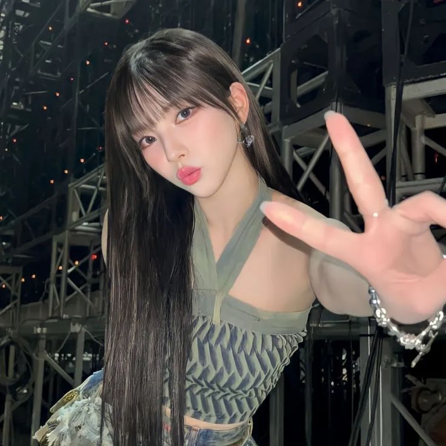
lesoorin: thank you fearnot for the support at the festival, cant wait to see you again soon! please stay tuned... until nxt time <3
*fan01*: AHHH I LOVE YOU SOORINAH
*fan02*: miss u alrdy pls come back soon bae
*fan03*: NEW CB ANNOUNCEMENT PLEEASEPLEASEEEPLEASEEE SOORIN SPOPIL US
*fan04*: we love u and sserafim sooo much!!!! always waiting!!!!!
*fan05*: as usual ate and left NO CRUMBS
*fan06*: our 5th gen it girl MISS SOORIN EVERYBODY BOW DOWNNNNNN
NEW POST (PRIVATE)
rinsoos

rinsoos: dont hmu im tired & going to sleep for the rest of my socalled life. goodbye.
jenaissante: always nice to see the way you switch up on your priv
ughnchae: would the fans appreciate ur fakeness? dont think so
39saku: im tired too but im not posting some weird ass face like this
zuhazana: saving this for meme use in the future fyi
chaechae: get some sleep then!
rinsoos: @39saku @ughnchae leave me alone @jenaissante u too actually mean ass bitches
jenaissante: @rinsoos babe i love u stop
rinsoos: @jenaissante NO U DONT LIAR ONLY CHAEWON LOVES ME
chaechae: @rinsoos always and foreva!

"When can we go home?!" the same girl who had been complaining on her private Instagram was whining days later. She was laying back in one of the bean bags in their dance studio, dramatically heaving her chest up and down like she'd just ran a marathon. Her eyes are staring up at the ceiling, a bitter pout on her face as she crossed her arms over her chest.
She had been rather grumpy the last few days since they had performed at a music festival, right after finishing up several concerts across the country, which was after they had another comeback and promoted two B-sides with it. The girls had been working extremely hard, so hard that it left some of them deeply exhausted and wanting nothing more than to just sleep forever - like Soorin.
Soorin, the otherwise beloved member that everyone swore could do no wrong, was actually the quite opposite in real life. It was something her members laughed at often. In fact, her whiney attitude had them humorously smirking at her currently, as they were all still standing up in front of the several mirrors that lined the walls of the studio, staring at their poor friend.
"We literally only have like..." Sakura is muttering, picking up her phone from atop her bag on the floor and turning it on for a split second to see the time, "thirty minutes left."
"That's thirty minutes too fucking long," Soorin grumbles, not moving a single muscle despite the implication that they weren't done with practice.
"Oh, my poor Soorin," Yunjin is mockingly gasping out, walking across the wooden floors to fall onto a bean bag next to her. She leans forward to peer at her, holding a hand over her heart, "are you going to be okay? Gosh, all that dancing seems to have really gotten to you!"
Her sarcasm was not appreciated. It irritated the girl so badly that she sat up to just glare at her.
The other girls, once they realized Soorin wasn't going to move for them to do a few more songs, had joined them on the bean bags.
"Well, I guess it wouldn't hurt to cut it short today," Chaewon is offering, and hearing such words from their leader caused Soorin to let out a scream of joy.
"Thank God!" she's cheering, "Finally, I can go sleep like God intended for me to do."
"Anyone feel like Soo's been more bitter than usual?" Eunchae was humming to no one in particular, picking at her nails in her lap out of boredom.
"Clearly," Kazuha giggled, "I think you need something new in your life, Soo, why don't we try to find you a boyfriend?"
Soorin was groaning again, for the hundredth time that day, her head harshly slapping the bean bag again as she laid back on it. Her members - friends - were annoying when they started to insist things like this, and they did it often. All of the girls tended to date around or had at least had partners in the past, or even then, they talked about potential partners or other people in the industry that they crushed on quite often. The only one that never partook in any of such conversation was Soorin, which had lead to them constantly bullying her about being lonely and needing someone in her life whenever she would get bitter like she was now.
It wasn't that she was some kind of lonely loser. She'd had a significant other before, but it wasn't something she liked to revisit. Therefore, it was also something she had never told the girls. She never really planned to get as close to them as she had, as they all started off as coworkers, after all. And if she ever told them the fact she had dated another idol years ago, they'd lose their mind and just use it as more leverage to bully her. She did not want that.
So, as far as they knew, she was indeed a lonely loser.
"That's the last thing I want," Soorin mutters, not wanting to even entertain the conversation despite how they were already starting it.
Even then, it was pointless to even think about wanting to find a partner. The problem was, they weren't exactly allowed to have romantic relationships. It ruined careers, and they were finally starting to get recognized and build up popularity. The last thing they needed was a scandal.
"Just think about it!" Sakura elbowed her gently, encouraging the thought in a rather nice manner than usual.
"There's no point," Soorin reiterates her previous thoughts, rolling her eyes, "we literally aren't allowed to date."
"Sure, but that's if anyone finds out," Yunjin corrects deviously, "come on, live a little, girlie."
"Hell no," Soorin snapped, almost disgusted by her suggestion, "are we forgetting what dating scandals do to women in this industry?"
The girls are silent for a second, seemingly thinking about her words. Until they all shrug, nodding in agreement.
"Good point," Chaewon sighs, "can't forget about that 2018 scandal with Soomi-sunbaenim."
They all seem to shiver at the thought. The girls were only trainees at the time such a scandal came out, and from an outsider's perspective, it was crazy believable. Not to mention, horrible. Soorin had been traumatized from such a scandal, to the point she pretty much swore she would never try to date anyone until her idol life was well over.
"Let's just go home," Eunchae was yawning minutes later once the previous topic had dissipated, "I'm starting to agree with Soorin, I'm fucking tired."
"We've had nonstop schedules for months now, we all need sleep," Sakura is agreeing as they all rise to their feet.
Before any of them could even stand up straight, Soorin had practically ran across the room screaming in excitement. Within seconds, she threw her bag over her shoulder and was running to the door that lead out the studio.
The girls just shake their heads, exchanging glances of disbelief. She was insane.
But they loved her for it.
So, the girls of Le Sserafim made their way out of the dance studio, casually walking towards the elevators of their beloved Hybe building. Soorin was still far ahead of them, once again rushing through the halls like a track star. Luckily, their wasn't much staff on the floor to see her unprofessional antics, and even if they did, no one would really be surprised.
It was when Soorin was about to pass one of the many dance studios that lined the halls, since they were on the dance practice floor, when the door had opened and several boys had piled out without a second thought. The girls didn't really pay attention to who it was, as they saw other artists under their company all the time. Usually, they would just nod and go about their day. It was never anything serious.
But little did they know, those boys were someone that Soorin tended to avoid at all costs. It wasn't because she hated them or something, but there was a certain member of such a group that she didn't want to see. A certain someone that might of been the only partner she ever had, someone who ended up becoming an idol much like she had, conveniently under the same company.
She had been planning to run passed them like nothing, but there were seven of them, and they took up an ungodly amount of space as they scattered into the hallway. It meant the girl had no choice but to slow down, awkwardly halting her movement as they were all chatting amongst themselves about their plans for the rest of the day.
When they saw her, some of their conversations were cut short. Some of them offered her a greeting, bowing or saying something else relative to small talk. They didn't really know each other, so the boys wanted to be nice since they were labelmates.
Though, the boys didn't expect the look of horror that took over her face, like she was seeing a ghost. Soorin looked like she wanted to vomit at the sight of them, it had them turning and exchanging glances of confusion, one of them leaning in to the others to whisper, "do I have something on my face?"
"No... do I smell bad?" Another had whispered back, and they kept weirdly asking each other dumb questions as if the girl was deaf.
Only then, did the boys notice the look that was on one of their fellow members faces. But just as they did so, a space had opened up big enough for her to get through, so she hurriedly cleared her throat, offering them a small bow before she bolted towards the elevator.
The girls, who had been behind her, offered them a greeting, not sure what they just witnessed.
"Sorry, I don't know what's up with her," Chaewon was trying to explain, "she's a moody one, you know, always grumpy about something..."
Until one of the boys had excused himself from the group, hesitantly beginning to jog after her.
And Soorin almost made it, she almost made it to the elevator. God, she didn't know why she hadn't processed that this would happen eventually. She was still a fairly new idol, meaning she still wasn't used to being allowed on the floors for idols instead of trainees. The girls had only debuted within the last six months, after all. She knew he was an idol here, but she just never thought she would actually run into him.
Yet, here she was, completely caught. Despite how she was angrily slamming her finger against the elevator button, it was to no avail once the familiar voice filled her ears from behind, "ah... Soorin... hey, can we talk?"
Cursing under her breathe, the girl squeezes her eyes shut, exhaling deeply repeatedly to try to calm herself. Once she realizes there was no getting out of this, and the fact that the girls were witnessing this insufferable interaction, she turned to face him.
It was awkward, no doubt. He looked confused more than anything, with his dark fringe falling in his eyes and a slight frown on his lips.
"There's nothing to talk about," she shrugged casually.
He shook his head, chuckling in disbelief from the fact she was completely switching her entire demeanor, "seriously, you just want to pretend that entire thing didn't happen?"
For once, his words were like a breath of fresh air. "Yeah, actually, that'd be great."
He was chuckling again. "Okay, look, I know you didn't want to see me, but - we're gonna run into each other since we're both under the same company, you know. We might as well get along."
Maybe he had a point. But she didn't want to admit that he ever had a point, she didn't want to give her ex boyfriend the satisfaction. Still, she deadpans, "fine, I know - it's just... fucking awkward."
Shoving his hands in the pocket of his track pants, he turned to glance at where their members were still talking. Though, the girls were watching her like a hawk. He turns back to her with an expression that said yikes, pursing his lips, "yeah, I can see that, I'd say you don't have to tell them - but I don't know how else to explain that reaction of yours back there."
Tired of his blatant teasing, she groans loudly, stepping forward to hit him with her bag. The boy cries out in surprise, but starts laughing from the fact she'd just done that. "Give me a break, it was surprising!"
"Sorry - I was surprised, too!" he insists defensively, clearing his throat again. His eyes awkwardly glance to the ground every now and then as he admitted, "to be honest, I forget that you're an idol here until I see your face plastered everywhere, they're calling you the fifth it girl, you know, up there with Kim Soomi," he was almost gushing as he recalled what he had seen on the media recently. "Gotta say, I'm proud of you, Lee Soorin."
"Ew, stop talking," she wrinkled her nose, spouting in disgust, "I don't want you to be nice to me, be quiet."
Rolling his eyes, he shrugged, "whatever, let's just... be friends, okay?" He holds out his hand before she could say anything.
Soorin stared down at it for a moment. Memories began to flash through her mind, memories of easier times before they became idols, before they broke up, when the only thing she knew was him. For a second, it was almost comforting, before she shook it away and reminded herself that it was unobtainable for her now.
So, with a sigh, she shook his hand. "Whatever, Jungwon."

"I can't believe that we've been calling you lonely all this time when you've dated a whole ass idol!" Kazuha was in hysterics, bending over and laughing so hard that she was holding her belly. It was an annoying sight, to the point Soorin was debating slapping her just so she would wipe that smile off her face.
"Hey, we get why you wouldn't want us to know," Yunjin was offering some sort of support, wrapping an arm around her shoulder for a small hug, "after all, this reaction shows it pretty clearly."
Indeed, she had been getting bullied and teased just like she had feared would happen if the girls ever found out about her ex. It wasn't like they even dated when they were idols, but you'd never know that, since the girls were screeching and gushing about it in such a way. Yang Jungwon this, Yang Jungwon that, it had her wanting to rip her hair out and snap her own neck.
They couldn't understand, they probably wouldn't understand, would they? Soorin didn't even understand herself, after all. She was just bottling it up until she felt like she was going to explode - which would likely be soon.
Luckily, before such a thing could happen, their manager had poked their head into the dressing room. "Hey girls, you're on for the interview in five minutes, okay? Make sure you're ready, they're probably just going to ask you about music, as usual. So, think about your answers - what have you been listening to recently, who's your favorite artist, you know, stuff like that."
"Sure thing, manager!" Chaewon had called, before their manager left them to prepare.
"Interviews are so boring," Soorin was mumbling, leaning back in the couch of the dressing room. Thankfully, their manager had changed the topic for her.
"I don't even know who I'm gonna say," Yunjin is thinking out loud, scrolling through her playlist on her phone, "there's just too many..."
"Say what you always say," Sakura rolled her eyes, "don't act like we don't get asked these dumb questions every single interview."
"True, I wish they would change it up sometimes," Kazuha was humming.
Little did the girls know, the interviewer was going to change it up. None of them would've ever guessed what they were going to ask them, they figured it would be the same old like their manager said. Though they were still a fairly new group, they'd done plenty of interviews. They never really asked questions that were too out of the blue, it was always tame, always generic.
So, the six girls had casually made their way out once they were called on, waving and greeting all of the staff and camera crew. Their eyes land on the interviewer, a woman who seemed fairly young, maybe around their age. She was dressed in office wear, a seemingly innocent smile on her face as the six took their seats on the stools set out beside her and in front of the cameras.
They said their greeting, introducing themselves one by one, before the interviewer had started asking a few basic questions. As usual, Yunjin and Chaewon tended to do a lot of the talking, leaving the other girls to just sit there, nod, and smile like they cared about anything being said.
Soorin was already in space. She wasn't trying to seem uninterested, but God, she was. Her mind was dozing off, thinking about the fact she had saw her ex boyfriend today out of all people.
"So, do you girls ever feel like there's competition between you and any of the other girl groups under your company?" the interviewer had been asking, crossing one leg over the other and looking at them quizzically. Her voice remained so innocent, as if she wasn't trying to blatantly stir up drama or fan wars.
The girls noticed this fact, as Chaewon had slowly glanced at the others before turning back to her. "Um... no, of course not."
"Really? You are still a fairly new group under Hybe, right along with New Jeans, that debuted only a few months after you," she went on, pushing harder for a droplet of drama. "You never feel any tension between them, as if you're competing to be the best fifth gen girl group under Hybe?"
She just kept pushing, despite how Chaewon was casually playing it off. Even when their leader would insist that there was no tension between them and New Jeans, the interviewer would just push again. It was starting to irritate Soorin, she didn't understand what this girl's problem was and why she was trying so hard to cause problems. The girls had never even met New Jeans, despite them being under the same company. They didn't care about something as silly as being the best girl group under Hybe simply because they already thought they were, although it wasn't something they tended to boast about.
But, it wasn't exactly something Soorin thought clearly about before she blurted out in annoyance, "we are the best Hybe girl group."
Some of the girls looked like they were going to puke. Eunchae turned to the side, putting a hand over her mouth to stifle her snickering out of disbelief that she'd just said that. Soorin's eyes widened once she realized how that sounded, she swore she didn't mean it that way, she was just tired of this stupid interviewer.
But it was too late now. As the woman had nodded along, gawking as she goes, "Really, you heard it here, everyone! I can say, I definitely love your concept more than New Jeans. Le Sserafim is much more fierce!"
Chaewon seemed to be in a panic, you could see it in her eyes. Her brain was scrambling for what to say to save the situation. "Ah, see, we really don't think we're better than anyone," she shook her head, "at Hybe, we're really all one big family, even though we don't know the girls personally."
Eventually, the interview would come to an end. The girls were all nervous wrecks, for the most part, as they walked off the set back to their dressing room to get ready to go back home. Sakura had been the one to finally say something as they had all been walking in silence, starting by slapping the back of Soorin's head. "Seriously, nice going there, idiot!"
Soorin whined out from the impact, rubbing the back of her head with a pout, "She was annoying as fuck, it just slipped out!"
"Maybe they won't air it," Yunjin was trying to see the brighter side of things, "you know, cut it out."
"Yeah, right," Kazuha snorted, "you know their intent was clearly to start drama, of course they'll air it."
"Oh God..." Soorin is crying, burying her face in her hands as they enter their dressing room. The girl lets out fake, dramatic sobs as she falls face first onto one of the couches, moaning out as if she's in pain, "I'm going to be in trouble!"
After closing the door behind them, Chaewon had sighed as she made her way to the crying girl. Sitting next to her, she pats her back as she coos, "it's okay, I'll take care of it, dear Soorin."
The others fall onto the couch, not really feeling mad at the situation anymore. They knew it would probably be fine, right? Sure, it might start a fanwar. But... their fans were stronger, right?
Yeah...
"You're lucky Chaewon always saves your ass."
Chapter Two
"Oh my God... I can't believe Soorin would say that..." Haerin was gawking down at her phone screen, almost looking like she was going to tear up. There was an evident sound of defeat in her voice as she shook her head in sadness. It hurt to hear someone you looked up to pretty much insult your group, it sucked in fact. She understood that they were label mates, that maybe Le Sserafim was more popular than them, but the way she said it just hurt.
"Hey... I... I don't think she meant it that way," Hanni had been insisting, a soft smile on her lips as she criss crossed her legs on the couch.
But Haerin shook her head again, not agreeing with her one bit. How else would she have meant it?
The New Jeans members were rather down after seeing that Le Sserafim interview from a couple of days ago. They were all sitting around in the living room of their dorm, and only then did they even hear about it after seeing it on TikTok and seeing a bunch of comments on their Instagrams. Some were actually mean, from Fearnot's, and a lot of them were just their fans showing support and disagreeing with what Soorin said.
But it wasn't really that they hated Le Sserafim, or even Soorin, they were just hurt. It was true none of the girls had ever met any of them, they were bigger than them and typically they just had schedules at different times. But still, it felt disrespectful for them to get dissed by their label mates like that, anyway, even if they weren't friends.
The only one who didn't know about what happened was Minji. The girl had been in her room, playing video games presumably since it was their day off. She had come out to get something to drink, when she saw the way all of them were sulking on the sofa. So, the girl had stopped at the doorway from the kitchen to the living room, blinking at the four girls in confusion.
She figured they were probably sad about something stupid, like their favorite show got cancelled. She almost didn't care enough to ask, until she realized it was sort of her job to make sure they were okay - perks of being the leader.
So, she bit. "Alright, what the hell is going on with you idiots?"
Danielle just let out a loud, overdramatic exhale. Hyein buried her face in her hands, pulling her knees to her chest. Hanni pursed her lips, scratching the back of her head in contemplation. And lastly, Haerin stood up from the sofa to walk over to Minji, handing her the phone that still had the posted clip from the interview pulled up.
At first, Minji was even more lost. She just furrowed her brows down at the phone screen, "what - it's just a video of Soorin?" She was asking out loud, not getting what the big deal could be. Did the girl get a life threatening illness or something? She didn't even think they were very big fans of her, except for maybe Hyein or Hanni.
But then she clicked play, and the audio from the video had played throughout the apartment. Her eyes could only watch in shock as the interviewer had started asking the girls some insistent questions about competition at Hybe, being the biggest fifth gen girl group, among other things. And it was when Soorin had blurted out that infamous line that she couldn't believe her ears.
"What the fuck?" she's muttering under her breathe, replaying the clip because she just couldn't fathom what she just heard. Why would she say that? It was such an unnecessary comment that would obviously cause trouble.
Sure enough, she said exactly what Minji heard the first time, leaving her to stand there, fuming with rage. The girls nervously watched her as she set Haerin's phone down on the coffee table, vigorously shaking her head as she began to pace around the living room.
They watched her for a second, as she began to mumble things to herself, her expression growing angrier and angrier. Until finally, Hanni had cleared her throat, "Look, Minji, I think we're just taking it the wrong way. You know how editors try to blow things out of proportion."
"No," she snapped sternly, "she said what she said, and for that, fuck Lee Soorin."

"Soorin!"
"Soorin, you can't hide forever!"
"We literally have to go to the studio tomorrow!"
The girl only rolled over in her bed, pulling the covers further over her face. She didn't even say anything, in fact, she ignored her members, not caring at all about any of the words they were saying. It had been a couple of days since that stupid interview had dropped, and sure enough, it had stirred up as much drama as those dumb people were probably hoping. She hoped their payout was worth it, because she wanted to explode and pass away.
When she didn't respond, the door had finally been opened. Footsteps are heard entering her bedroom, and she was planning to ignore them, too. That was, until the sheet had been dramatically pulled from her, and the fact that it had been wrapped around her like a burrito meant it also ended up with her flailing onto the ground.
A thud echoes through the room as her body hits the wooden flooring. At first, her brain didn't even process what happened, until she felt the pain.
"God dammit!" she's cursing out, "Why can't you guys just let me rot in peace?!"
The culprit had been none other than Yunjin, which she should've guessed. Yunjin was probably her closest friend in her group, even if she bullied her sometimes and even if they didn't always see eye to eye. Still, she was always there for her. Which was why she was determined to get her up and back to life as she bent down to grab both of her wrists, pulling her to her feet.
"Come on, you can't rot your life away as much as you wish you could," she informs her softly, "remember, you're kind of an idol."
Soorin only groans in agony, "don't remind me!"
"Oh, come on, big baby," she coos, pulling her into a hug and rubbing circles on her back, "Chaewon took care of it, you're not in trouble, okay? That's why we're going on a date today, something to take your mind off of the whole fiasco."
There was a lump in Soorin's throat, though she couldn't exactly explain why. She just pulled away from the hug to peer at her friend. "Who says I want to go on a date with you?"
Yunjin rolls her eyes, reaching up a finger to poke her cheek as she hums, "me, now get ready, you have... ten minutes!"
Soorin's mouth fell open in shock from the short time limit she was given. "what - that's bullshit!"
But Yunjin was already leaving the room, waving to her as she called, "Get going!"

NEW POST (PRIVATE)
jenaissante
 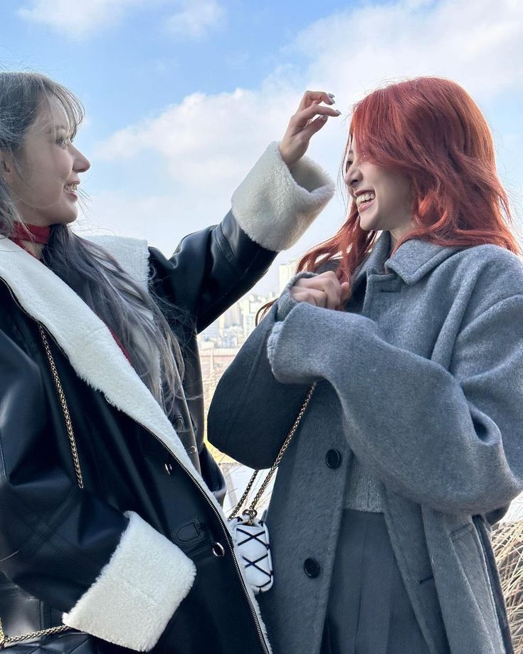
jenaissante: cheered this big ass baby up, everyone tell her its not her fault
39saku: its ur fault @rinsoos
ughnchae: its ur fault @rinsoos
zuhazana: @rinsoos love u but its ur fault
rinsoos: YUNJIN UR MAKING ME GET BULLIED AGAIN
chaechae: @39saku @ughnchae @zuhazana LEAVE HER ALONE ITS OKAY
rinsoos: YEAH LEAVE ME ALONE JERKS
39saku: no
jenaissante: whoopsies!
NEW POST (PRIVATE)
rinsoos

rinsoos: hey this is me please stop bullying me for accidentally saying smthn mean in the interview guys i didnt mean it idek them bro i was just annoyed af at the interviewer ok this is me and im cute so ur not allowed to bully me everyone thanks
ughnchae: stop mansplaining on the priv
rinsoos: @ughnchae THEN STOP BEING MEAN TO ME
39saku: @rinsoos u tryna ruin our rep we gonna be mean to u
rinsoos: @39saku I DIDNT MEAN TO SAKURAAAAAAAAAAAAAA
jenaissante: its ok we love u babe its just tough love
sheepgarden: i saw the interview, i didnt think it was even that bad
zuhazana: @sheepgarden wait are u jungwon? WIATS ITS JUNGWON LMFAOOFMS HES ON THE PRIV
rinsoos: @sheepgarden when did u even follow my priv
sheepgarden: @rinsoos i will never tell

"God, I hope I don't run into them," Soorin is stressing as the girls are entering the company building the next day. Trying to contain the emotions that were piling inside of her, she pulled at her hair, chewing on her bottom lip as they entered the elevator.
Chaewon had pushed the button to go to the correct floor, before everyone got comfortable leaning against the railing. "It'll be fine," Yunjin patted the girl's shoulder comfortingly, "we've never ran into them before, why would we today?"
"Cause God hates her," Eunchae blurts, earning a disapproved glare from both Yunjin and Chaewon.
"Don't worry," Chaewon had exhaled, crossing her arms over her chest and staring at the ceiling in thought, "it's alright... you're not even in trouble, the CEO wasn't mad..." but she was trailing off, halting her words abruptly. It was like there was something more she wanted to say.
Soorin was glaring at her, feeling uneasy about the fact she cut herself off. "What else is it?" she demanded, "I know there's something else, you never hesitate unless there's something else."
"Well, you see," she huffs, knowing that Soorin was going to throw a fit over this. But, there was nothing she could do about it. If it was what the CEO asked of her, she pretty much had no choice but to do it. "He wants you to apologize."
The girl's face grew pale. The girls started snickering, or more like burst into entire laughs from what they just heard from their leader. They could already imagine how awkward it would be, and just thinking about the sight of their poor bitter Soorin attempting to apologize was absolutely hysterical.
"You're fucking kidding me," she deadpans, her back sliding against the walls of the elevator until she was sitting on the floor. Slowly, she buries her face in her hands, "he is setting me up to get humiliated - I'm sure they obviously hate me now!"
Eunchae and Yunjin had kneeled besides her. Yunjin to try and comfort her clear distress, and Eunchae to pat her head and giggle, "course they do, you literally insulted them in front of millions of people!" Her voice was cheery despite the fact she said such a rude thing, and it had everyone sighing in disappointment at their troublesome youngest, who somehow still caused less trouble than Soorin.
"They don't hate you," Yunjin firmly corrects after glaring at Eunchae for a second, "all you gotta do is say sorry and explain it was all one big misunderstanding."
Despite how she was trying so hard to comfort her, Soorin was not feeling any better. The elevator doors had opened, causing the girl to jump to her feet with Yunjin's help. They all gather their bags that they'd set down, preparing to head right out towards their studio. Today, they had dance practice again for a special stage they had coming up. It wasn't anything too big, but a small dance performance. But still, Soorin would be grumpy about it like she always was because of how bad she wanted a break.
And now, to add this on top of it, the girl couldn't get any worse.
"Oh, hey there, nice to see you guys!" the bright voice of a boy had broke through their actions. And they look up to see one of the Enhypen members standing there, a boy they knew as Jake.
"Hey Jake," Kazuha had offered to him as some of the others pour out of the elevator.
Soorin had glanced behind him several times, making sure no one else was there with him - or in other words, Jungwon. All though they were sort of on good terms, it didn't mean she wanted to see him today.
"Hey Soorin, I saw all of the drama - I want you to know it's really not as bad as everyone is making it out to be. Don't listen to them, seriously!" Jake had offered her a friendly smile. Really, she appreciated his words. He didn't have to say something like that to her, as they didn't even know each other, so the fact that he had made the effort showed he was a kind person.
But Soorin wouldn't show that appreciation, as she only sent him a small, close lipped smile before pushing past, lugging her bag over her shoulder.
"Sorry," Kazuha was rolling her eyes as she watched the dramatic girl walk like a zombie towards their dance studio, "she's one grumpy bitch."
Chapter Three
NEW POST (PRIVATE)
rinsoos

rinsoos: i hate my life why do i have to apologize to some girls i have never met that obv alrdy hate me this is such a nightmare que the cameras and the laugh track
jenaissante: it'll be ok! i'll even come with u if ur that scared
39saku: @jenaissante no she needs to do it herself
ughnchae: YEAH SHES A GROWN WOMAN!
zuhazana: they hate u but apologizing will make them hate u less!
chaechae: @zuhazana unhelpful but you tried
rinsoos: @chaechae DO I HAVE TO
chaechae: @rinsoos yes sweet pea i'm sorry :(
NEW POST (PRIVATE)
minjibear
 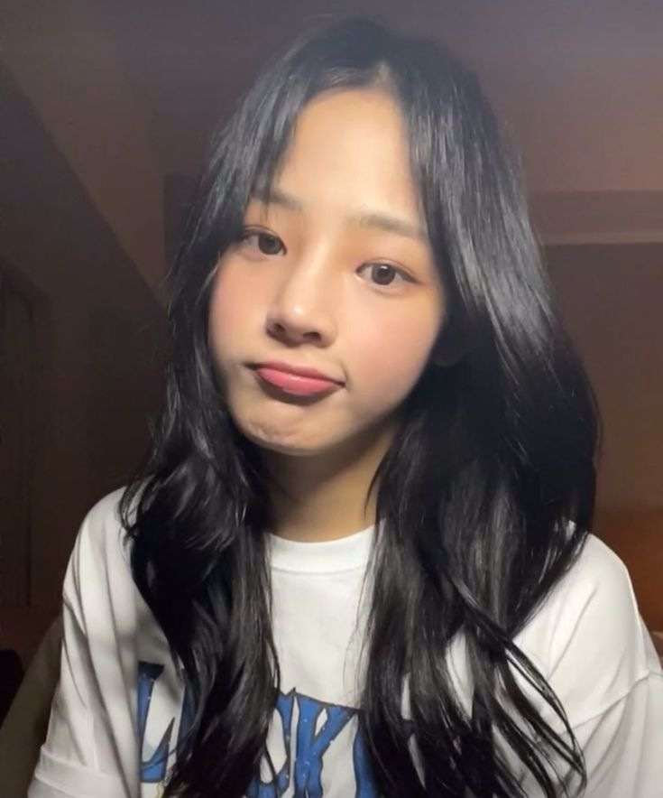
minjibear: dance practice sucks but gotta make sure im PERFECT for this special stage
minjibear: since ig this is a COMPETITION now
minjibear: LABEL MATES FAMILY MY ASS
inhye: i think minjis mad still
hanpham: minji i REALLY dont think she meant it that way!!!!
meowrin: @inhye and im still sad :(
inhye: @meowrin me too :( i still love her tho.... </3
minjibear: @inhye dont love a snake
minjibear: @hanpham SHE SAID WHAT SHE FUCKING SAID
hanpham: @minjibear why dont we just talk to her then!
puppyelle: @hanpham not a bad idea but she kind of scares me
minjibear: @hanpham ABSOLUTELY NOT?

"How am I even supposed to apologize?" Soorin is complaining, her arms crossed over her chest and a pouty frustrated expression wiped across her face. She leaned back into the bean bag, and had been sitting that way for around half an hour since they finished their dance practice. "I don't even know which studio is theirs!"
"Girl..." Eunchae is snorting, "that's the worst excuse ever... the doors literally have names on them."
But Soorin was stubborn, sticking her nose in the air. "Wouldn't know, I don't pay attention!"
"I'll come with you," Yunjin is offering, "I kinda know one of the members, anyway, sort of."
"Since when?" Kazuha is questioning, confused by this new bit of information.
Yunjin shrugs, falling onto one of the bean bags, "I dunno, seen her around."
Soorin just sighed, knowing she was going to have to muster up the courage and do it. It wasn't like she could disobey her CEO's orders. Orders were orders, if she wasn't already in trouble, it was a miracle - but if she disobeyed, she would for sure be in trouble then. She knew she had to suck it up and be thankful that Chaewon had handled it for her like the protective older sister figure she tended to be.
So, she surprised them all by rising to her feet. For once, Soorin had stopped her endless complaining and thrown her bitter attitude away. Instead, she just spun on her heel, heading towards the door that lead into the hallway and dully muttering back to them, "well, wish me luck, guys - hope you attend my funeral."
Okay, so she was still a little bitter. But an improvement nonetheless.
"You don't want me to go?!" Yunjin is calling as her hand was on the handle.
"Nope," she huffed, "I'm gonna be a big girl."
And with that, she twisted the handle and left into the hallway of the dance studio floor. They had only watched her leave, the door slamming shut behind her, before they sat in silence for a second. Everyone was still pleasantly surprised by her sudden independence, to the point they weren't sure what to say.
"Hope she actually finds it," Kazuha is humming as she pulls out her phone, distracting herself by scrolling through social media.
"I'm proud of her," Chaewon is confidently sharing, "they grow up so fast, you know."
"Okay, grandma..." Eunchae snickered. She was real lucky she was still a baby.
Meanwhile, the brunette was slowly walking through the halls of Hybe, blowing bubbles in her cheeks before deeply exhaling repeatedly. Her eyes glance every which way, the hallways being surprisingly empty that day, reading the names on each studio door as she passed. You'd think they'd be in alphabetical, yet she was having no luck as she only continued to aimlessly drag down the hall.
How'd she even know if they had practice today? She didn't. It was a wild guess, and if no one answered the door, she would simply give up and go about her day - save the embarrassment for another day when she worked up the courage again or when Chaewon forced her to.
Just as she was about to give up, she sees the familiar group name printed across the blurry glass door - New Jeans. Biting down on her bottom lip, her hands are almost trembling as she holds a fist up in front of the door, her mind racing with nerves. This was humiliating, she could only imagine they wouldn't be happy to see the girl that just shit talked them.
But like the girls said, she didn't have a choice. So, forcing the dread to the back of her mind, she knocks on the door to New Jeans dance studio.
And... silence. No answer.
Feeling more impatient than nervous at that point, the girl vigorously taps her foot against the carpeted floor. Her eyes stare at the ceiling, trying to think of what in the world she was even going to say.
Should she knock again? Nah, that'd be weird. If they weren't there, it was fine.
Until a click was heard signalling the door was being unlocked, and before she could even process what was happening, it opened to reveal a bright girl. She knew her, since she at least knew of their names despite never actually meeting them. Her name was Hanni, she was fairly short with dark hair, resembling that of a sun with the way she was beaming.
That was, until her eyes land on the hopeless looking girl standing outside their door. Her face becomes that of shock, eyes looking her up and down as she seemed to be trying to figure out why she was there right now.
"Uh, hi - I know you guys probably hate me..." she starts awkwardly, clearing her throat, "but - I wanted to come by and tell you guys it was kind of a misunderstanding..."
She trailed off, not wanting to ramble like an absolute idiot. Hanni had still seemed speechless, as she turned to likely glance back at the other girls who were somewhere in the room, before slowly facing her again.
After a moment of thought, she offers softly, "oh! Yeah, why don't you come in?"
Soorin purses her lips, nodding in agreement as Hanni had stepped out of the way to allow her inside. The sound of the door closing behind her is heard, and she wondered if it would be possible for the five girls to beat her up or not.
"Who is it?! Oh..." another girl had cut herself off once she saw the familiar figure walking towards them. She was the youngest, Hyein, and practically cowered as if she was afraid of the girl.
"Oh... hello, Soorin, right?" one of the other girls gradually greeted her kindly, anyway.
The others offered her a small greeting, all of them clearly conflicted with her suddenly showing up. The only one that didn't say a single word was the leader and oldest, Minji. In fact, the tall girl looked like she wanted to beat her up as she stood at the back of the group, arms crossed over her chest and a scowl across her face.
She was sort of intimidating, with the way her biceps flexed and her brows creased in disapprovement. Obviously, she disliked her, it was clear from the blatant body language. Soorin felt herself melting under the girl's gaze, a certain nerve fighting it's way up her spine as she tried to take her eyes off of her.
"Uh... um..." she spouted out, finally pulling her eyes off Minji and looking to the other girls. They were all silently standing there, patiently peering at her, but at least they didn't look like they were about to snap her neck. "Look, I wanted to say I'm sorry about what I said on that interview. I really didn't mean it like that, I was just trying to get that stupid interviewer to stop pushing us... she got under my skin, so I blurted exactly what she wanted to hear... and I really didn't mean it - I don't even know you guys, so there's no reason for me to think I'm better than you, alright?"
Once she finished her speech, she let out a deep breath of relief, glad she got that off her chest and had done what she was instructed to do. Sure, she only apologized because the CEO told her to, but she also meant what she said. Yeah, she might've thought her group was better than all the others, but that was just self love. It wasn't like she meant to blurt something like that out.
They exchange some glances, talking to each other with their eyes, before Haerin turns and nods, "don't worry, we forgive you, Soorin!"
"Yeah, I knew it wasn't serious, anyway," Hanni assures her, "I can see how the interviewer was trying to start drama and get you guys to say something you didn't mean."
Hyein and Danielle make noises of agreement, assuring her that there were no hard feelings between them. For the first time meeting them, Soorin was pleasantly surprised that they were so nice.
And then there was Minji, who still had yet to say a word. She was still standing there, arms crossed over her chest and tapping her foot against the wooden flooring. Danielle had looked to the girl, nudging her with her elbow and whispering something in her ear.
Minji had just rolled her eyes, scoffing as she huffed, "I don't really have a reason to believe you."
Ouch, she was calling her a liar? Soorin pouted a bit, not expecting her to come off so harsh, but she should've expected it from the way she had been staring at her since she walked in. She guessed she couldn't really blame her, either.
"Come on, Minji, there's no reason to be hateful!" Hanni was urging her sternly.
But she just shrugged, turning away to walk across the room, "What? I'm just returning the favor."
Soorin was lowkey still intimidated by her, and she could tell she wasn't going to change her mind about disliking her anytime soon. So, she cleared her throat, lightly bowing to show her appreciation, "hey, it's okay, I understand we don't really know each other - but genuinely, I am sorry, guys. I'll leave you be now, but I'm sure we'll see each other around!"
With that, she turned and made her way out of the dance studio. Once she was outside in the hallway again, she let out the deepest exhale ever, as if she'd been holding her breath the entire time. Honestly, she might've been with the way that girl was looking at her.
God, she didn't know what it was. It felt like she was being choked despite not even being near her. Was it the hatred she was harboring for Soorin that was making her feel that way, or something else? Whatever it was, she did not want to feel that feeling again. It was not only confusing, but borderline scary.
Still, she did what she was asked to do, and that was all she cared about at the current moment in time.

NEW POST (PRIVATE)
hanpham
 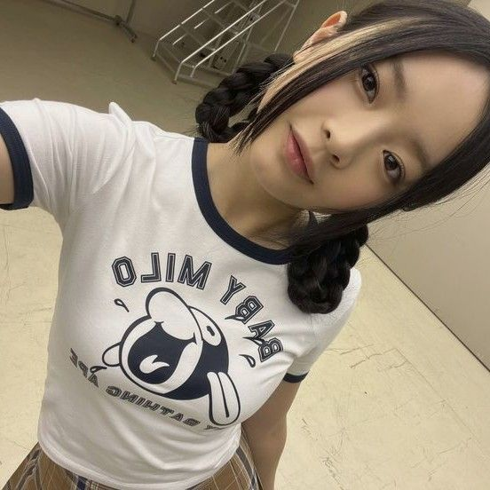
hanpham: see guys she apologized!!!!! told you soorin was really a sweetheart & she is soooo much nicer than i ever imagined <333
inhye: yeah i love her again!!!! yayyy fearnot forever!!!
meowrin: we shouldve asked if she would sign our albums @inhye
inhye: @meowrin TRUEUE we MUST see her again now were basically friends anyway!!!
puppyelle: @inhye idk if we're friends but she seems super nice!
hanpham: @inhye @meowrin @puppyelle we will see more of her im sure :D
minjibear: @hanpham i hope we dont. shes obviously fake... why are you guys falling for it
inhye: @minjibear DONT SAY THAT
meowrin: @minjibear SHES NOT FAKE!!! SHES SUPER SWEET
minjibear: @inhye @meowrin you guys only think that because you're young and naive...
Chapter Four
"How'd it go?!" the girls had eagerly asked when Soorin had blankly came back into their dance studio. They had all jumped from the bean bags, rushing over to her and crowding around her like fans, excited to hear the events of what occurred.
Soorin had just shook her head, a rather glum look on her face. Eunchae had snorted at the sight, "oop, think they still hate her."
"Not exactly," Soorin had huffed, "they were super understanding... except for one of them... she was mean as fuck," she started to ramble, the girls listening intently. "I thought she was going to snap my neck, honestly."
"Meh, it's fine," Yunjin patted her back, "we probably don't really have to interact with them ever again, who cares?!"
And she had a point. So, they went about their day, finishing practice for that special stage before heading back home to their dorms. As per usual, Soorin was a grump that never stopped complaining, and everything went right back to how it was meant to be.
Or so they thought. Until the next day had rolled around, a day that was supposed to be another day off for them. That was, until Chaewon had reported she got a call from the CEO, asking if they could come in last minute today for a meeting.
Someone might as well had murdered Soorin with the way she was whining about having to abruptly go into the company. Dragging her feet across the ground, she hung her head back like a zombie as she moaned, "are you kidding?! Why can we never have a proper break?!"
"Girl, because this is our job," Sakura was sassily retorting as they had climbed out of the van that day. The sun beamed down on their skin, feeling as if they were in an oven as they all walked in a group across the parking lot.
Chaewon was in the front of the group, pulling out her ID to get into the building. Soorin was still crying about having to go in, Eunchae was making fun of her, and Yunjin was pulling her into a side hug as they walked and telling her it would be okay.
"It won't take that long," Chaewon informed them once she scanned her ID and the doors opened before them, "he said it was something about our special stage, I'm sure it's a minor change or something."
Oh, she could only hope.
But just when Soorin thought the entire fiasco was over, she heard the worst words imaginable come from their CEOs mouth. "We'd like you and New Jeans to collab for your upcoming special stage."
How ironic, that it was only now that he'd had such a thrilling idea. Some of the girls seemed almost excited to get to collab with another group, whilst some of them - such as Eunchae - put a hand over their mouth to stifle the laugh that so badly wanted to escape, glancing over to see the dumbfounded and despair written all over Soorin's face.
He might as well have punched her. Chaewon, knowing they couldn't say no, had awkwardly smiled, "oh, really? We'd love to."
"Perfect, I'll be informing the girls today, as well," he claps his hands together, a satisfied grin on his lips, "I have you scheduled in the studio tomorrow with an instructor that will combine the choreo's you've each been practicing."
With that, they'd been dismissed, dismissed to grovel in pain. Soorin was burying her face in her hands as they walked back down the halls towards the elevator.
"It'll be fine," Yunjin was shrugging, "you said the only one that didn't accept your apology was Minji, right?"
"Yeah, but she's fucking scary," Soorin is shivering at the thought. The girls found her irrational fear of the New Jeans member a bit confusing. Soorin was someone who was typically careless about everything, that was the entire reason she had even blurted something like that out in the first place. They couldn't process why she was so bothered about one member not liking her. They'd seen Kim Minji, and it wasn't like she was a bodybuilder. What was she possibly going to do?
Really, there might've been a slightly deeper reason that the girl was so caught in her emotions. But she would never say it aloud.

NEW POST (PRIVATE)
minjibear
 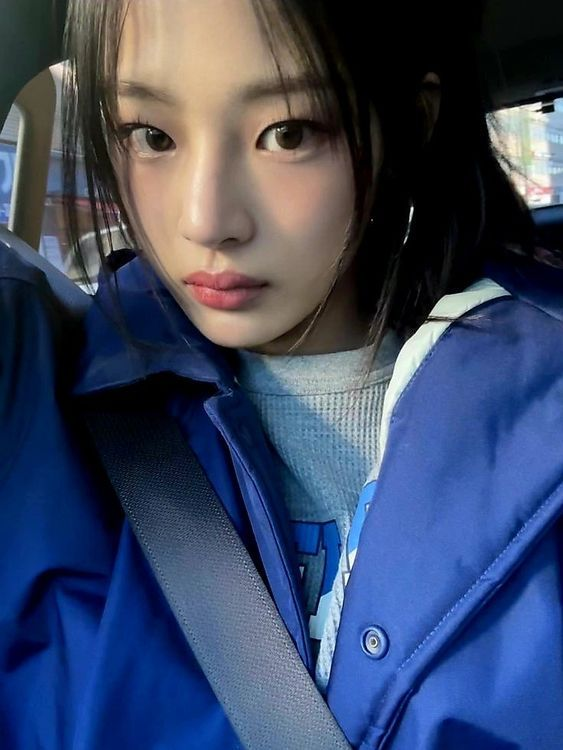
minjibear: BRUH WE HAVE TO COLLAB WITH WHO?????? ARE UF UCKING KIDDING MNE
minjibear: actually no way the ceo must have access to my priv cus hes playing a fucking joke on me
minjibear: i DO NOT want to be around that snake nonetheless COLLAB with her this is so fucking stupid
inhye: IM EXCITED THIS IS GONNA BE SO FUN
meowrin: gonna bring my album and have them all sign tmrw!
hanpham: just TRY to be nice, minji. it's only one stage!
puppyelle: @minjibear @hanpham yeah, it won't even take too long, maybe she'll grow on you
minjibear: @puppyelle ew thats the last thing that would ever happen thanks
minjibear: @hanpham thats one too many
NEW POST (PRIVATE)
rinsoos

rinsoos: went out with my gf to try to take my mind off the fact im going to be around someone that wants to murder me tmrw >.>
rinsoos: if she tries to kill me yall better step in STG
ugnchae: NAH IMA WATCH IT HAPPEN
39saku: ive always wanted to fight someone ngl
chaechae: that WILL NOT happen soorin!!!
jenaissante: ill die for u babe
rinsoos: @jenaissante omgg... kiss me now
zuhazana: @chaechae chaewon theyre being weird again....
chaechae: @zuhazuna just cover your eyes

NEW PRIVATE MESSAGE FROM
sheepgarden
sheepgarden:
hey soorin, what were you talking about in your instagram post?
sheepgarden:
sorry if it's out of place but i'm feeling a little concerned
rinsoos:
haven't u seen the drama
rinsoos:
i have single handedly started fanwars
sheepgarden:
oh, you mean the new jeans thing you said in the interview? i didn't think it was that bad
rinsoos:
well the ceo made me apologize which wasn't a big deal except one of them REALLY hates me for what i said
rinsoos:
she's scary... i am terrified of that woman
sheepgarden:
you mean minji?
rinsoos:
yeah... how'd u know???
sheepgarden:
uhhh just a hunch i guess
rinsoos:
okkk... well anyway now apparently the ceo wants us to collab for our special ingi stage
rinsoos:
so goodbye to me
sheepgarden:
oh i mean who says u even have to be near her? there will be like 11 of you total
rinsoos:
doesnt matter she has an intimidating ass aura jungwon
rinsoos:
havent u seen her? she gonna beat me up
sheepgarden:
i know minji, shes really nice
sheepgarden:
really don't think she would beat you up, soorin
rinsoos:
THEN THINK AGAIN BC I AM SCARED
sheepgarden:
maybe just get some sleep, it'll be fine
sheepgarden:
nothing is ever as bad as your head makes it out to be
rinsoos:
ugh dont start with your philosophical quotes
rinsoos:
anyway yeah im gonna try to sleep i guess
rinsoos:
have to be there fucking early for this stupid dance practice
sheepgarden:
hey well you can always talk to me if you need to soo
sheepgarden:
seriously, i still care about you. i'm here if you need anything
rinsoos:
okay stop being fucking weird
rinsoos:
goodnight jungwon
Chapter Five
The girls practically dragged Soorin into the dance studio than morning. As usual, she whined and moaned, saying she suddenly felt sick or that she was having cramps and needed to go home. Though, her cries were ignored, and the six had entered the studio that morning to see the five members of New Jeans already there.
At the sight of the Le Sserafim members, they'd bowed politely, offering short greetings to them. Chaewon had grinned, waving to them and doing the same as she greeted, "hello, nice to see you guys! I'm sure we'll work well together."
"Only if this one wraps it up," Yunjin humorously chuckles, elbowing Soorin who was hiding at the back of the group. From the impact, she cursed at the red haired girl, pouting as she rubbed where she'd been hit at.
"No worries, we know it might be a little awkward," Hanni assures, "but really, there are no hard feelings!"
"Yeah, we are so honored to be working with you!" Hyein had piped up in excitement, beaming from ear to ear. She looked like she was bound to bounce off the walls with thrill and was just trying to contain herself.
"Well, why don't we get started then?" The dance instructor had cleared their throat, grabbing the groups attention.
With that, they'd began to learn the mixed choreo that was planned for this new collab stage. The instructor was someone they had worked with before, so Soorin was confident in learning from them. Really, she was confident in her dance abilities overall. Not that it was her best skill, but she knew she was a good dancer. It was part of why she was called an ace, after all.
Still, it was hard for her to focus that day. As she squinted her eyes, trying to follow what the instructor was doing in the mirror as close as she could, she found her mind dazing off. Her eyes would glance to a certain someone in the large mirror, before she would hurriedly catch herself and focus on the instructor again.
What was getting into her? She wasn't entirely sure, but she wanted to punch herself for it. It wasn't so bad, until she looked at the girl who was in the middle of copying the instructor's move, only to make eye contact with her because she was already looking right at her.
Her breath got caught in her throat as she jerked her gaze away. God, this was a nightmare. She could only be staring at her because she was planning a murder.
"You doing okay, Soorin? Would you like me to go over it a few more times?" The dance instructor's words cut through her thoughts, causing her eyes to bulge from surprise as she snapped back into reality.
Only then, did she notice the fact everyone had stopped practicing to turn and stare at her. Feeling like she was melting under their eyes, Soorin hurriedly blurts, "nope, I'm good, just feeling a little woozy today!"
The instructor peers at her for a few more seconds, it was clear she didn't believe a word she just said. Nonetheless, she shrugs, turning back towards the mirrors, "alright then, let's continue, shall we?"
"I'd say it's more than a little woozy," Eunchae was snickering from beside her as they continued practice.
Soorin shot her a warning glare, knowing she couldn't slap the youngest member no matter how badly she wanted to. At least she would deserve it.
So, it continued, and Soorin tried her hardest to keep her eyes to herself. Honestly, she felt like she had the hang of the choreo anyway, since it was half something she already knew. It was when she was really getting into it, that someone had snapped from across the room, "excuse me, she's completely out of sync."
Who?
That was her first thought. Why would any of them be out of sync? This was their job, they were all fair dancers.
The one who'd said such a thing, however, had pointed directly at her. Soorin's eyes meet Minji, who had her arms crossed over her chest once she pointed out the so called culprit of unsynchronized dancing.
"Huh - no I'm not!" Soorin retorts in response, a clear offended tone clinging to her words.
"Yeah you are, I saw you," she rolls her eyes, insistently, "I don't think she's cut out for this choreo, instructor."
"How would you even know?!" she argues right back, so quickly that no one else even had a chance to cut in, "Is it because you won't stop fucking staring at me?!" She couldn't help the curse word that came out in front of the staff member, and her harsh tone of voice had Chaewon burying her face in her hands out of stress. Yunjin had came over to Soorin, wrapping an arm around her shoulder and trying to block her view of Minji so she would calm down, but it didn't seem to be doing any good.
"It's hard not to notice someone so lost," she gibes with a scoff.
"Oh hell nah..." Eunchae was muttering under her breath. Even she was starting to get frustrated with the rude words coming from the girls mouth, even if they weren't about her.
"Guys, I really don't think this is necessary," Hanni tried to cut in.
"Yeah, it's practice for a reason, none of us are instantly perfect!" Danielle chimed in brightly, but there was no use.
"Clearly, someone's obsessed, you're just trying to start something with me because you can't get over something I already apologized for!" Soorin fumes further, not even hearing any of the words the others were saying from how mad she was.
"Oh, you wish... I just don't want our stage to be ruined because you don't know how to dance!"
She really did it now. Without another word, Soorin jumped forward, aiming straight for Minji. And she probably would've made it if the girls hadn't grabbed her.
"Alright, alright!" The instructor loudly announced, stepping in between the two groups with her hands in the air, waving her arms around, "That's enough, you guys. It doesn't matter if anyone is out of sync now, that is what this practice is for!"
No one said anything that time. The girls were too busy trying to calm the angry Soorin down who was grumbling under her breathe about how tired she was of Minji, and Minji was being circled by the other New Jeans members who were lecturing her about causing trouble.
"Why don't we just call it here, okay? Let's come back tomorrow and try again, girls."

NEW POST (PRIVATE)
rinsoos
 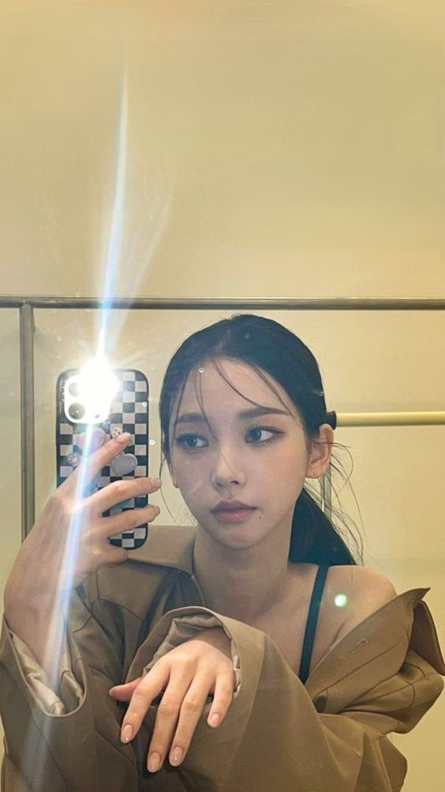
rinsoos: (warning rant ahead) why is this minji girl such a fucking asshole i dnt understand what i did to her other than say that one thing on the interview. and even then, my apology was very genuine!! i dont fucking deserve to get treated like this and i DIDNT ask to collab with her stupid ass either so theres no point in takingt hat shit out on ME. i fucking HATE that bitch!!! ugh actually a sick ass joke like where are the cameras can we please cut them off now? this is getting so ridiculous actually fuck you minji youre such a fucking ass dick FUCK YOU MINJI
ughnchae: id usually say sumthn mean but i agree with u she had me pissed tf off
zuhazana: ya i dont blame u wtf was up with tht
39saku: i was ready to throw hands too
chaechae: OKAY WE DO NOT NEED TO THROW ANY HANDS
jenaissante: seriously i dont know what was up with that babe im so sorry u are A GREAT dancer
rinsoos: @jenaissante EMMM I KNOWWW she is just so fucking salty its pissing me off
sheepgarden: damn what happened during practice?????
ughnchae: @sheepgarden minji started insulting soorin for no fucking reason
sheepgarden: @ughnchae what? really? thats so unlike her

NEW PRIVATE MESSAGE FROM
sheepgarden
sheepgarden:
hey what did she say to you? i can't believe she would start trouble in front of staff
rinsoos:
jungwon i fucking hate her she actually sucks
rinsoos:
like i apologized what more does she want
sheepgarden:
im sorry, it sounds messed up
sheepgarden:
if you want i can try to talk to her
sheepgarden:
im not that close with her but we're sort of friends
rinsoos:
nah its not even worth it
rinsoos:
it wouldnt do anything anyway she clearly hates my guts...
rinsoos:
and now i hate hers too LOL
sheepgarden:
are you okay, soo? really
sheepgarden:
do you want to talk about it?
sheepgarden:
i know how you get
rinsoos:
no you dont
sheepgarden:
yes i do, remember when that teacher told you your writing was bad sophomore yr?
sheepgarden:
you cried about it for a week and refused to write anything until nxt yr
sheepgarden:
ltrly failed your assignments
rinsoos:
i still think about that fuck that bitch
sheepgarden:
see? i know you get heated about anyone insulting you
sheepgarden:
you can talk to me, no crying
rinsoos:
im not fucking crying!!!!!!
sheepgarden:
prove it
rinsoos:
no? the fuck
rinsoos:
stop flirting with me you fucking freak
sheepgarden:
im not flirting
sheepgarden:
jesus
sheepgarden:
what dorm do you live in?
rinsoos:
stay tf away from me
sheepgarden:
stop acting like im a stranger soorin just answer the question
sheepgarden:
is it the one on main st or the west one
rinsoos:
fuck you
rinsoos:
go away
sheepgarden:
dont make me text your friends
rinsoos:
YEAH DONT FUCKING DO THAT
sheepgarden:
LOL you know they'll tell me
sheepgarden:
especially eunchae
rinsoos:
ill beat your fucking ass
rinsoos:
its the one on main. jack ass.
sheepgarden:
see u in 5
Soorin would not be telling any of the girls that she was going to hang out with her ex boyfriend. She could only hope that they never found out, too, because she would never hear the end of it. In exactly five minutes, she swung the door open to reveal Yang Jungwon, dressed in a black hoodie and track pants. His dark hair was messily atop his head, falling in his eyes, hands shoved in the pockets of his pants, and a nervous smile was spread across his lips as he was met with the sight of the brunette.
Jingling her keys, she hurriedly steps into the hallway, locking the door behind her before any of the girls could hear them. Jungwon was still standing there as she did so, looking like a deer in headlights.
"Come on, idiot, hurry it up," she urges him sternly, grabbing the sleeve of his hoodie and dragging him towards the elevator.
He was giggling as he followed her, "is it really that bad if they know we're hanging out?"
She didn't hesitate to deadpan. "Yeah."
Within twenty minutes, the two of them were sitting outside a convenient store. Soorin was slurping up some ramen she had just made, and Jungwon was drinking a late night juice. The moon was beaming down on them, providing the perfect lighting along with the streetlights lining the road. It was peaceful, somewhat, with silence falling over the two since there was little to no noise due to the fact it was the middle of the night.
Soorin had just finished telling him everything that happened that day, all of the things Minji said to her and how she tried to get her in trouble with the instructor. Jungwon listened attentively, lightly nodding along to show he understood.
And then they sat there, until he spoke up, "It's weird she would do that, you know, Minji has never been one for drama."
A noodle was hanging from the girls lip as she was angrily slurping it up. Amidst chewing it, she couldn't help but quiz, "why do you know? Thought you said you weren't close."
He shrugs, "we're not, but I've known her just from seeing her around and we've hung out with them a few times. She hates drama, I've heard stories about how hard she tries to avoid it."
Finishing her food, she practically slams the ramen on the table between them. "So, then what the fuck is her problem?!" she cries. For a girl that supposedly tries to avoid drama, she sure seemed to have fun starting it today. Soorin no longer felt like this was her fault, whether it made her a jackass or not.
"Iunno, Soo," he shakes his head blankly, "maybe it's something deeper than that, you know, she must have personal beef with you."
"But what did I do?!" the girl whines, throwing her hands in the air dramatically. They flop onto the table, where she buries her face in them, wishing she could just disappear forever. As much as she didn't want to say it, Minji's words hurt her feelings. None of the girls would ever know, but Jungwon knew well since he knew how she worked.
He could tell it was getting to her as he reached out to take her hands off her face. "Hey, why don't I talk to her? At least let me try to see what's up."
"No!" she snapped, the word coming out louder than she planned. Clearing her throat, she leans back in the chair and crosses her arms over her chest. "Don't do that... I just... I just want to get this collab over with then try to stay away from her."
That was the plan. She just had to get the collab over with. Then she would forget Kim Minji even existed.
Chapter Six
So, time would pass.
Despite the fight between Minji and Soorin, the two groups had to work together. Minji had seemed to suck up her hatred after receiving a harsh lecture from her members who helped remind her that she was the oldest and the leader, so she couldn't be starting drama with other groups for whatever reason she may have. Soorin, on the other hand, simply didn't even bother acknowledging the fact the girl existed. She was better than that. As grumpy as she was half the time, she knew she had a job to do and fans to impress.
With that, the girls were able to learn the choreography fairly quickly. After a few more days of dance practice, before additionally practicing their vocals, they felt properly prepared for the idiotic special stage.
And before anyone knew it, the day came. Soorin was distracted most of the time by watching other performers, to the point she forgot Minji would even be there. Currently, her and the girls were standing just backstage, where they had a clear view of the current performer while waiting for their cue to go on. The members of New Jeans were on the other side, where they'd be entering from.
There was a comfortable silence over the girls as they watched the well known solo artist flutter around the stage flawlessly. Soorin's eyes were always sparkling when she watched her, it was hard to not be mesmerized by someone who was so perfect at everything they did.
The stage ended shortly after, causing the six girls to erupt into claps and cheers right along with the audience. They were exchanging glances, nodding to each other as if to telepathically communicate that they liked the performance.
"She's always so good," Kazuha was mumbling in awe, watching as the artist began to walk off stage after waving to the crowd and saying a few parting words.
"Seriously - oh shit, wait - she's coming this way," Eunchae gawks.
Soorin tried to straighten her posture, as if that even mattered, at the sight of Kim Soomi walking their way. Though, of course she was, since they were standing at the entrance and exit to the stage. But they didn't think about that due to excitement.
Still, the girl was known for being sweet to everyone. There was a warm smile on her face as she entered the backstage area, waving to people and thanking them when some of them started cheering and clapping for her. Though, her green eyes seemed to say something else. They were scanning the area, searching for something.
When she seemed to snap back into reality, clearing her throat and about to walk past them, when her eyes met Soorin's.
"Hello, Le-Sserafim, right? Nice to see you," Soomi offers them politely, and you'd think the six girls were going to melt into the floor.
When no one else says anything, Yunjin hurriedly clears her throat, "hey, that's us! We're big fans!"
She was unintentionally gushing, and her cringey tone caused Eunchae to bury her face in her hands. Soorin was still trying to process what she should even say. This girl was another level than them, it felt illegal to even be speaking to her.
"Thank you, I appreciate that!" she grins, not seeming to think much of it - as in, that these girls were weird. "I'm looking forward to you guys' set, let's chat later, okay?!"
Then, she left, leaving the six girls there to gawk in shock.
"Was that real?" Kazuha is asking them, mouth still hanging open, "Guys, seriously - was it?"
"Le Sserafim - are you ready for makeup and outfits? You go on in two," one of the backstage managers calls to them before anyone could answer.
Whether she wanted to or not, the final stage with New Jeans would happen. But at least afterwards, she could peacefully forget it ever happened, right?
Soorin's stomach twisted into a nervous knot as the backstage manager's voice pulled them out of their daze. She exchanged a glance with Yunjin, who gave her a confident smile, as if to say, You've got this. The girls made their way to the dressing area in a flurry, each of them being fussed over by stylists and makeup artists.
Soorin tried to focus on her breathing, but her thoughts wandered to the stage they were about to share with New Jeans. Every moment of rehearsal flashed in her mind, including the tension with Minji. She shook her head, trying to banish the thought. It's just one performance, she told herself. Then I can go back to pretending she doesn't exist.
When the time came, Le Sserafim and New Jeans gathered in the wings, waiting for their cue to step onto the stage. Soorin felt the weight of someone's eyes on her and glanced over her shoulder, catching Minji staring. The leader of New Jeans quickly looked away, her expression unreadable.
"Hey, don't let her get in your head," Yunjin whispered, leaning in close. Her voice was soft, but there was something about the way she said it that made Soorin's pulse quicken.
"I'm fine," Soorin muttered, brushing off the comment.
"Of course you are," Yunjin teased, flashing a grin. "You're Lee Soorin. Nothing can break you."
Soorin wanted to smile, but her nerves got the better of her. Before she could respond, the stage manager signaled them. It was time.
The performance began with a bang, the lights blaring and music thundering through the speakers. Their choreography was a seamless blend of both groups' styles, with moments of intricate synchronization that left the audience roaring with applause. Soorin focused on the steps, letting the rhythm guide her movements. For a moment, all her worries faded away.
That is, until the part where she and Minji had to pair up for a brief interaction. It wasn't much—just a quick turn and a shared glance before moving to the next position—but the tension between them was palpable. Soorin felt Minji's gaze linger a second too long, almost challenging her.
She matched it with a smirk, determined not to let Minji see her sweat.
The performance ended in a cascade of cheers, both groups coming together for the final pose. As the lights dimmed and the applause swelled, Soorin exhaled, relief flooding her chest. It was over.
Backstage, the atmosphere was electric. Staff members clapped them on the back, and the girls exchanged high-fives and hugs. Soorin was about to slip away to the dressing room when she felt a hand on her arm. She turned to see Yunjin.
"You were incredible out there," Yunjin said, her voice low and sincere.
"Thanks, you weren't so bad - I guess," Soorin replied, her cheeks warming at the compliment, tone hinting with humor.
The girl rolls her eyes, shaking her head in disbelief that she had the audacity. "Why don't we celebrate later? Have a nice girlfriend time, you and me? Now that you never have to interact with your nemesis ever again."
Before Soorin could even think about her reply, she felt beams burning into her soul. Her glance abruptly catches Minji's, who was across the backstage with her members, who appeared bright and giddier than ever after their adrenaline filled performance. Yet, the leader was glaring at her like she was ready to murder her. It caused a lump to form in her throat, so much so she almost forgot what Yunjin even asked.
"Yeah... that'd be nice - sounds good..." Soorin mumbles, her voice quieter than she intended.
Yunjin grinned, squeezing her arm before turning to talk to the other girls about their performance. It was likely she noticed what was going on, but decided against mentioning it.
Soorin was left standing there, her thoughts swirling. She wanted to focus on Yunjin's invitation, on the idea of letting loose for a night. But as her gaze drifted back to Minji, who quickly looked away, she couldn't shake the feeling that this wasn't the end of their story.
Fuck her, she shook it off, never again.

NEW POST
jenaissante
 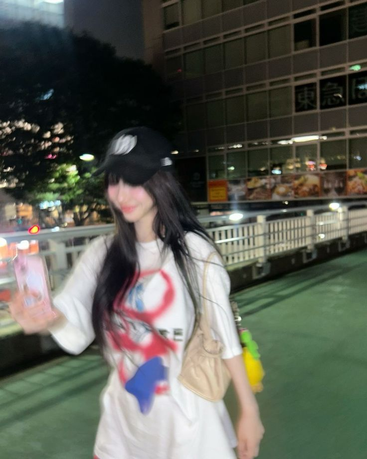
jenaissante: cheered up my lil grumpy munchkin
zuhazana: dawg what is that caption
ughnchae: HELPPP MUNCHKIN IM ILL
39saku: okay this is sort of...
ughnchae: @39saku wuh luh wuh?
39saku: @ughnchae bro what
chaechae: @ughnchae what language is that
ughnchae: yall r so lame
rinsoos: EEEEK my gf posted me guys
hanpham has requested to follow you.
puppyelle has requested to follow you.
inhye has requested to follow you.
meowrin has requested to follow you.
minjibear has requested to follow you.
NEW POST
rinsoos

rinsoos: ookkk i'll admit my gf always cheers me up no matter what happens >.> GUILTYYYYYYY
chaechae: when will i be invited to the girlfriend hangout
39saku: @chaechae just give up we'll never be included
ughnchae: but like when did the gf thing even start why are yall so gay
rinsoos: @ughnchae next question
jenaissante: @ughnchae we were born gfs, didnt you know?
rinsoos: @jenaissante that's the truth
ughnchae: ....im tired
hanpham has requested to follow you.
puppyelle has requested to follow you.
meowrin has requested to follow you.
inhye has requested to follow you.
Chapter Seven
Soorin and Yunjin's hangout was no different than all the other ones. Soorin had gotten home that night ready to just go to sleep and face the next day, which would be a wonderful day off from her constant work life. Finally, they would get some time to themselves. It was all she was thinking about as she fell into the plush of her mattress after doing her night routine, hurriedly drifting off into a night's sleep.
She was planning to sleep the entire day away. God only knew how much sleep she needed to catch up on. It would be perfect.
Or so she wanted to think.
The sound of the door unlocking was Soorin's first clue that her day off wasn't going to go as planned. She didn't even need to lift her head from her pillow to know who it was.
"Seriously, Yunjin?!" she groaned, her voice muffled by the blanket she'd wrapped herself in like a cocoon. "Get out of my room!"
"No can do," Yunjin replied cheerfully, stepping inside like she owned the place. "I'm staging a rescue mission. You've been in here long enough. It's time for you to see the sun."
Soorin peeked out from under the blanket just enough to glare at her. "I've been in here for all of eight hours, Yunjin. Some of us actually need sleep."
"Oh, sure, 'sleep,'" Yunjin said, crossing her arms. "What's the real plan? Scrolling through your private Insta all day? Watching conspiracy theory videos until your brain turns to mush?"
"Bold of you to assume I wouldn't just sleep," Soorin deadpanned, pulling the blanket tighter around her.
Yunjin walked over and perched herself on the edge of the bed, shaking her head in mock disappointment. "You're such a grandma sometimes, you know that?"
"And you're such a pain," Soorin shot back, rolling her eyes.
"Aw, thanks, babe," Yunjin said, batting her lashes. "Now get up. We're going out."
Soorin groaned dramatically, flopping onto her back. "Yunjin, I swear, if this is another one of your schemes—"
"It's not a scheme," Yunjin interrupted, placing a hand over her heart as if deeply offended. "It's a carefully curated day of fun. You'll love it, I promise."
"I highly doubt that," Soorin muttered, burying herself deeper into the blanket.
Yunjin's eyes narrowed, and a mischievous grin spread across her face. Without warning, she grabbed the corner of the blanket and gave it a hard tug.
"Hey!" Soorin shouted, scrambling to hold onto her precious cocoon. "Hands off, you maniac!"
Yunjin cackled, leaning back to avoid Soorin's flailing limbs. "Come on, you grumpy grandma! Live a little!"
"Let me live by sleeping!" Soorin countered, her voice rising in pitch as Yunjin continued her assault on the blanket.
Eventually, Yunjin managed to yank the blanket free, holding it above her head like a trophy. Soorin glared up at her from the bed, her hair a wild mess and her expression a mix of exhaustion and irritation.
"You're the worst," she said flatly.
"And yet you love me," Yunjin said with a wink. "Now get dressed. We're leaving in ten."
Soorin groaned again, louder this time. "Why do I put up with you?"
"Because I'm amazing," Yunjin said matter-of-factly, tossing the blanket onto a nearby chair.
Soorin dragged herself out of bed, muttering under her breath about how much she hated her life as she shuffled toward the closet. Yunjin watched her with a satisfied grin, leaning against the wall.
"By the way," Yunjin said, her tone suddenly innocent, "I may or may not have sent a picture of you sleeping to the group chat."
Soorin froze, spinning around to glare at her. "You didn't."
"Guess you'll have to hurry up and get dressed to find out," Yunjin said, slipping out of the room before Soorin could launch a pillow at her.
Soorin let out an exasperated sigh, but despite herself, a small smile tugged at her lips. As annoying as Yunjin was, she had to admit—life was never boring when she was around.
By the time Soorin finally shuffled out of her room, dressed in a hoodie and sweatpants, Yunjin was waiting by the door, bouncing on the balls of her feet like an overexcited puppy.
"Took you long enough," Yunjin teased, throwing an arm around Soorin's shoulders as soon as she approached. "I was starting to worry you'd fallen back asleep in there."
"Don't tempt me," Soorin muttered, half-heartedly shrugging Yunjin off.
The two of them made their way down the street, Soorin dragging her feet while Yunjin practically skipped beside her.
"So, where are we going?" Soorin asked, stuffing her hands into her hoodie pocket.
"You'll see," Yunjin said, her grin widening.
"You know I hate surprises," Soorin grumbled.
"That's what makes this so fun for me," Yunjin replied, nudging her lightly.
After a short walk, they arrived at a bustling park filled with families, joggers, and couples enjoying the crisp weather. Yunjin led Soorin toward a row of rental bikes lined up near the entrance.
"Biking? Really?" Soorin raised an eyebrow.
"Yup," Yunjin said, already grabbing a bright red bike and inspecting it like a professional. "You can't tell me you don't want to feel the wind in your hair, the thrill of speed, the—"
"The inevitable crash when you try to show off and wipe out?" Soorin interrupted, crossing her arms.
"Exactly!" Yunjin said, unbothered by the jab. "Come on, it'll be fun."
Soorin sighed but grabbed a bike anyway, muttering something about how she must be out of her mind for agreeing to this.
They set off down the park's main path, Yunjin speeding ahead and calling out random commentary like a tour guide.
"On your left, you'll see a majestic family of ducks!" she shouted, pointing to a small pond.
"That's a single duck," Soorin replied dryly, pedaling at a leisurely pace behind her.
"It's the thought that counts," Yunjin said, slowing down just enough to fall in line next to her.
As they continued, Yunjin's antics only got bolder. She tried riding with one hand, then no hands, then attempted to stand on the pedals like she was in an action movie.
"Yunjin, I swear, if you fall and break something, I'm not carrying you back," Soorin warned.
"Relax, I've got this," Yunjin said, striking a ridiculous pose that looked like it belonged on the cover of a retro action figure box.
Not two seconds later, her front wheel wobbled, and she narrowly avoided toppling over by grabbing the handlebars just in time.
Soorin burst out laughing, nearly losing control of her own bike. "You're such an idiot!"
"But I'm your idiot," Yunjin said, giving her a playful wink.
Soorin shook her head, trying to hide the faint smile tugging at her lips.
After a while, they stopped at a small food stall near the edge of the park. Yunjin insisted on buying them both ice cream, despite the cool weather.
"You're such a child," Soorin said as she watched Yunjin lick her cone enthusiastically, her cheeks flushed from the cold.
"Says the one who's been pouting all morning," Yunjin shot back, sticking her tongue out.
Soorin rolled her eyes but couldn't help laughing. It was moments like these—simple, carefree, and full of banter—that made her forget the chaos of her daily life.
As they sat on a nearby bench, finishing their ice cream, Yunjin leaned back, her expression unusually thoughtful.
"You know," she said, staring up at the sky, "I think you're finally starting to enjoy yourself."
Soorin raised an eyebrow. "Don't get cocky."
"Too late," Yunjin said with a smirk.
They sat in comfortable silence for a while, watching the park's activity slow as the afternoon wore on.
"So," Yunjin said after a while, her tone light but curious. "Wasn't today way better than staying in bed all day?"
Soorin hesitated, but the answer came surprisingly easy. "Yeah... I guess it was."
Yunjin's grin returned, triumphant and full of mischief. "I knew it. You can thank me later."
Soorin rolled her eyes, but her smile lingered as they got back on their bikes, the sun dipping lower in the sky as they rode side by side.
The ride back from the park was quieter. The playful banter between them had eased, replaced by a soft, companionable silence. The sun dipped low on the horizon, painting the sky in hues of pink and gold, the light casting long shadows across the pavement.
Soorin kept her gaze ahead, focused on the path, but her thoughts churned in a tangled mess. She couldn't shake the warmth lingering in her chest—not just from the fresh air and exercise but from the way Yunjin had been so... Yunjin. Effortlessly carefree, constantly pulling Soorin out of her brooding and making her laugh, even when she didn't want to.
And yet, there was something unsettling about that warmth.
She glanced at Yunjin, who was pedaling beside her with a small, satisfied smile. Her hair fluttered slightly in the breeze, her hoodie bunched up awkwardly at the sleeves, and her face still carried a faint flush from the cold. She looked so at ease, so perfectly herself, and Soorin felt her chest tighten.
What is this? she thought, a pang of anxiety cutting through the warmth. She'd been close to Yunjin for a while now, and their dynamic had always been playful and teasing. But recently, something had shifted. Or maybe it had always been there, and Soorin was only just now noticing.
The realization made her stomach twist.
When they reached their dorm building, Yunjin hopped off her bike first, dramatically stretching her arms. "Ah, what a day!" she said, grinning as she parked her bike. "You owe me for being the best friend ever."
"Do I, though?" Soorin muttered, a faint smirk tugging at her lips as she followed suit.
"Yes, obviously," Yunjin said, linking an arm through Soorin's as they made their way inside. "I mean, who else would drag you out of your hermit cave and show you the wonders of the outside world?"
Soorin rolled her eyes but didn't pull away. "You're lucky I didn't crash just to spite you."
"You love me too much for that," Yunjin teased, winking at her.
Soorin didn't reply, her smile fading as they stepped into the elevator. The weight in her chest felt heavier now, pressing against her ribs. She leaned back against the wall, staring at her reflection in the mirrored doors.
"Hey," Yunjin said softly, breaking the silence. "You okay?"
"Yeah, I'm fine," Soorin said automatically, though her voice lacked conviction.
Yunjin wasn't buying it. She leaned against the opposite wall, her arms crossed as she studied Soorin. "You've been quiet since we left the park. What's going on in that overthinking brain of yours?"
Soorin hesitated, her fingers tightening around the strap of her bag. She wanted to deflect, to brush it off with a joke, but the sincerity in Yunjin's gaze made her pause.
"I don't know," she admitted finally, her voice barely above a whisper. "I guess I've just... been feeling weird lately."
"Weird how?" Yunjin prompted gently.
Soorin exhaled, her breath fogging up the mirror. "Like... I don't know what's wrong with me. Or if something even is wrong with me."
"Hey," Yunjin said, her voice firm but kind. "Nothing's wrong with you. You're just... human."
Soorin let out a weak laugh. "Yeah, well, it feels like I'm the wrong kind of human sometimes."
The elevator doors slid open, but neither of them moved. Yunjin stepped closer, her expression softer now. "Why do you say that?"
Soorin hesitated, her chest tightening again. She wanted to say it, to put her confusion into words, but she didn't know how.
"It's just... stuff," she said vaguely, frustrated with herself. "I don't even know how to explain it."
Yunjin tilted her head, her eyes searching Soorin's face. "Is it about... people?"
Soorin froze, her breath catching in her throat. Yunjin's question hung in the air, heavy and unspoken.
"I—" Soorin started, but her voice faltered. She shook her head, staring at the floor. "I don't know."
Yunjin's gaze softened further, and she reached out, her hand brushing lightly against Soorin's arm. "It's okay to not know," she said quietly. "You don't have to figure everything out right now."
Soorin swallowed hard, her throat tight. She glanced up, meeting Yunjin's eyes, and found no judgment there—only understanding. It was enough to make her chest ache.
"Thanks," she said after a long pause, her voice barely audible.
"Anytime," Yunjin replied, a small, reassuring smile on her lips.
They stepped out of the elevator together, the moment lingering between them like a fragile thread. Soorin wasn't sure where this confusion would lead her, but for now, she was grateful she didn't have to face it alone. Whatever it was, she'd figure it out with Yunjin. Yunjin, who would never judge her, no matter what.
But what about everyone else?
Chapter Eight
The next morning, the familiar buzz of Hybe's dance studio greeted the girls as they trudged through the doors. The floor glistened under the overhead lights, and the faint thump of bass from another studio down the hall set the mood.
Soorin lagged behind the group, her bag slung lazily over her shoulder as she yawned. She was still shaking off the lingering haze of sleep, despite Yunjin's not-so-gentle reminders during the ride over that "we're not trainees anymore; we have to look alive, Soorin!"
Eunchae bounced ahead, as usual, practically skipping toward the mirrors. "I call the good beanbag today!" she declared, dropping her bag in the coveted corner spot before flopping onto it triumphantly.
"No fair!" Sakura groaned, rolling her eyes. "You always take the best spot."
"Perks of being the maknae," Eunchae replied smugly, pulling out her phone.
"Perks my ass," Chaewon muttered, already tying her hair back as she turned to the mirror. "Come on, let's warm up before the instructor shows up and starts giving us that disappointed look again."
"I live for her disappointed looks," Yunjin said dramatically, tossing her bag onto the floor and earning a chuckle from Kazuha.
"Don't drag me into this," Kazuha said, raising her hands in mock surrender as she moved to join Chaewon.
While the others eased into stretches and casual banter, Yunjin glanced over her shoulder at Soorin, who had sunk into one of the less-coveted beanbags with her arms crossed and her head leaning back.
"Hey," Yunjin called, her voice soft but insistent. "You okay over there, grandma?"
Soorin opened one eye, glaring half-heartedly. "I'm fine. Just tired."
"You're always tired," Yunjin said, walking over and crouching in front of her. "What's up, really?"
Soorin sighed, her gaze drifting to the ceiling. "I'm just... trying to figure some stuff out. You know. Life."
Yunjin frowned slightly but didn't press further. "Well, life's not going anywhere. But we do have practice in five, and if you don't get up, Chaewon's going to yell at both of us."
Soorin groaned, dragging herself to her feet. "Fine, but only because I don't want to hear her 'I'm not mad, just disappointed' speech."
"That's the spirit," Yunjin said with a grin, standing up beside her.
As Soorin joined the others in their warm-up, Yunjin kept an eye on her, her concern lingering. She wasn't used to seeing Soorin this quiet, this subdued. Sure, she was grumpy most of the time, but this felt different.
"So, are we doing the special stage choreography again today, or are we free to make up interpretive dances?" Yunjin asked, breaking the quiet as the instructor entered the room.
"Interpretive dances are only for when I lose all hope for you," the instructor replied dryly, setting her bag down by the stereo. "Let's start with the basics today. And please, no injuries this time."
"Hey, that wasn't my fault," Yunjin protested, glancing at Kazuha, who was very pointedly looking at the ceiling.
"Sure it wasn't," the instructor muttered, turning on the music.
The group fell into formation, the beats of the choreography sinking into their muscles like second nature. Soorin found herself lost in the rhythm, her body moving automatically as the music filled the studio. For a little while, her worries faded into the background.
But every so often, she felt Yunjin's eyes on her—watchful, concerned. It was distracting in a way she couldn't quite explain, and it made her stomach twist uncomfortably.
During a short break, Yunjin sidled up to her, handing her a water bottle. "You're doing great," she said casually, but there was an edge of sincerity in her tone.
"Thanks," Soorin said, taking a sip and avoiding Yunjin's gaze.
Yunjin hesitated for a moment before leaning in slightly. "You know, if you ever want to talk more about... whatever's on your mind, I'm here."
Soorin's grip on the water bottle tightened. "I know," she said softly.
The tension between them was almost palpable now, like an invisible thread pulled tight. Yunjin lingered for a moment longer before stepping back, her usual playful grin returning.
"Alright, break's over, grandma," she said, nudging Soorin lightly. "Let's go wow the instructor with our amazing skills."
Soorin forced a smile, nodding as she followed her back to the group. But her thoughts were anything but focused.
Why does she have to look at me like that? Soorin wondered, her chest tightening again. Why does it make me feel like this?
The rest of practice passed in a blur, but Soorin couldn't shake the feeling of Yunjin's gaze on her—or the confusing emotions it stirred in her chest.

NEW POST:
jenaissante
 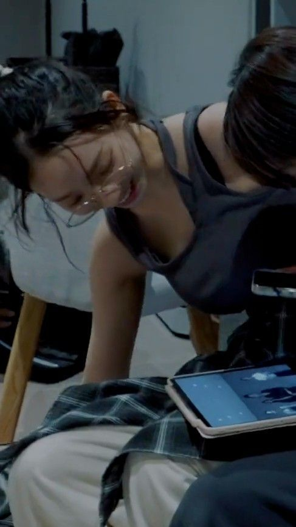
jenaissante: not to make my account all about soorin but HAD to share how gorg my gf looked today the dance fit ATE IT UP
rinsoos: YUNJINNN WHAT THE FUCKK DELETE THIS NOW
rinsoos: OH I HATE THIS SO MUCH
ughnchae: HAHAHAHAHAHA SHE LOOKS DUMB
rinsoos: @ughnchae this is ur last straw eunchae
39saku: i mean not the most flattering shes ever looked for sure
chaechae: @ughnchae @39saku guys, shut up, she looks fine
chaechae: @rinsoos YOU LOOK FINE
rinsoos: JUST FINE? @chaechae JUST SAY IM UGLY
jenaissante: @rinsoos NOOO YOU ARE SOOOO SEXY
hanpham: @rinsoos i love the fit!!!
rinsoos: @hanpham oh! omg thank u hanni :D

"Why is that all she posts?" Minji is grumbling, crossing one leg over the other with the most annoyed expression across her face. The five girls were hanging out after their practice, lounging in the bean bags that were always in the corner of every dance studio, including their own. During this time, they would scroll through social media, typically, nonchalantly chatting about whatever they were seeing.
And today, it happened to be Soorin on Yunjin's account - again. It wasn't like anyone minded, except for Minji.
"They're close, clearly," Haerin was shrugging, "what's wrong with that?"
"Yeah, they call each other girlfriend, it's so cute," Danielle was gushing, shaking her head in awe at how sweet she found their relationship.
Some of the other girls chimed in, talking about how adorable it was that the two members seemed so close. None of them found it weird, they just thought they were two tied-to-the-hip best friends. The only one - once again - that was pissed off by this was Minji, although she insisted it was just because she didn't want to see Soorin on her feed. After all, she was the only member of Le Sserafim she hadn't followed after their stage.
"It's annoying, I don't want to see her on my feed," Minji muttered, "I didn't follow her for a reason."
"Come on, Minji," Hanni sternly urged, "you need to get over this grudge already. Seriously, we're too grown for this."
"Nope," she instantly snaps, still peering down at her phone screen, "don't care."
Hanni rolls her eyes, picking up her own phone again. No one knew what she could possibly be doing, only until a devious grin spread across her lips as her thumbs began to angrily fly across the screen. Haerin and Hyein had crawled over to peer over her shoulder, eager to know what she was up to. Once they saw it, the two of them started furiously giggling, sharing the same devil expressions as they all enjoyed the creation of the scheme.
Minji clearly noticed something was going on. Her face remained blank as she deadpanned, "what the hell are you doing?"
Her thumbs still flying, Hanni seemingly finished her task, turning her phone off and setting it back in her bag with a triumphant hm. She giddily smiled to their leader, shrugging her shoulders innocently, "not too much, I was just inviting a guest to come with us for our hangout tonight after practice."
Minji looked like she was going to explode. "Dude, are you joking? Why the hell would you invite someone that's not even a part of our group?"
Hanni didn't say anything, she just started laughing again like a maniac.
Minji stared at Hanni like she'd just announced she was quitting the group to become a professional skydiver. "You didn't," she said flatly, though the slight waver in her voice betrayed her growing panic.
"Oh, I definitely did," Hanni replied, her grin widening as she leaned back into her beanbag, utterly unbothered by Minji's glare.
Haerin and Hyein were already giggling uncontrollably, clearly entertained by the chaos brewing in the room. Haerin clutched her stomach, her eyes sparkling with mischief. "Hanni, you're an actual menace," she said between laughs.
"It's called building bridges, Minji," Hanni said matter-of-factly, waving a hand as if it were the most obvious thing in the world. "You should try it sometime."
Minji set her phone down with a loud thud, crossing her arms over her chest. Her leg bounced anxiously as she stared daggers at her friend. "And what exactly makes you think she'd even want to come?"
"Oh, she's coming," Hanni said with full confidence. "She said yes almost immediately."
Minji felt her stomach sink. Of course Soorin had said yes. That girl couldn't seem to stay out of her orbit lately, even when Minji went out of her way to avoid her. And now Hanni had gone and invited her to their sacred group hangout—a space that, until this very moment, had been blissfully Le Sserafim-free.
"She's going to ruin everything," Minji muttered under her breath, though the words came out sharper than intended.
Danielle, who had been quiet until now, frowned slightly. "She's not going to ruin anything, Minji. Soorin seems really nice. You just haven't given her a chance."
Minji clenched her jaw. "I don't need to give her a chance. I've seen enough."
"Have you, though?" Haerin asked, her tone light but laced with amusement.
Minji shot her a look. "What's that supposed to mean?"
"I mean," Haerin said, her grin widening, "it's kind of funny how you're always the one talking about her. Feels like we know more about Soorin from your complaints than from Hanni's little fangirl moments."
Hyein gasped dramatically, slapping Haerin's arm. "Haerin, you're so right!"
"Stop," Minji snapped, her face flushing with heat. "You guys are ridiculous."
"We're ridiculous? You're the one throwing a tantrum every time her name comes up," Hanni said, raising an eyebrow. "It's giving obsessed."
"I'm not obsessed!" Minji barked, her voice rising before she caught herself. She inhaled sharply, trying to regain her composure. "I just don't like her, okay? Is that so hard to understand?"
"Very hard," Danielle said, blatantly sarcastic, with a slight smirk. "Especially since she's the only member of Le Sserafim you didn't follow."
Minji opened her mouth to retort, but no words came out. Instead, she grabbed her phone and stared at the screen, her thumb hovering over the follow button on Soorin's profile. Her jaw tightened. No way was she giving her the satisfaction.
"Well," Hanni said, standing and stretching dramatically, "I guess we'll see how much you 'don't like her' when we hang out tonight. Better play nice, Minji."
Minji groaned, sinking further into the beanbag as her group members started filing out of the room, clearly enjoying her misery.
Hanni paused at the door, glancing back with a mischievous twinkle in her eye. "Oh, and Minji? You might want to tone down the glare before she gets here. Wouldn't want her thinking you've been secretly watching all those posts."
Minji grabbed a nearby throw pillow and hurled it at Hanni, who dodged it effortlessly with a laugh.
"Not obsessed, huh?" Haerin called over her shoulder as they left, their giggles echoing down the hall.
Minji sighed heavily, running a hand through her hair. She wasn't obsessed. She wasn't. So why did the thought of Soorin coming tonight make her feel some type of way?

The café Hanni had chosen for their hangout was a cozy, hole-in-the-wall spot tucked into a quiet alley, with fairy lights strung across the ceiling and mismatched furniture scattered around. The warm scent of coffee and freshly baked pastries filled the air, blending perfectly with the low hum of indie music playing from a small speaker near the counter.
Soorin stepped inside hesitantly, clutching the strap of her bag. She immediately spotted Hanni waving at her from a large corner booth, the other members of New Jeans already seated and chatting animatedly.
"Over here!" Hanni called, her grin as bright as the fairy lights overhead.
Soorin forced a smile and made her way over, suddenly hyper-aware of her presence in their little bubble. As much as she liked Hanni's energy, she wasn't sure how this night was going to go, especially with Minji sitting stiffly at the end of the booth, scrolling through her phone with a scowl.
"So glad you could make it!" Danielle chirped as Soorin slid into the seat Hanni had saved for her.
"Yeah," Soorin said, her voice quieter than usual. "Thanks for inviting me."
"It's nice having you here," Haerin added, her tone soft but genuine.
Hyein leaned forward, resting her chin in her hands. "You should've come to our last hangout. We ended up convincing Haerin to do a full TikTok dance in the middle of the street."
"Never again," Haerin muttered, earning a round of giggles.
Soorin chuckled, relaxing slightly at their easygoing banter. Maybe this wouldn't be so bad after all.
"What can I get for you, Soorin?" Hanni asked, gesturing to the menu on the table.
"Oh, I can get it myself," Soorin started, but Hanni waved her off.
"Nonsense. You're our guest!" Hanni said, already jotting down her order.
Minji finally looked up from her phone, her expression unreadable. "Don't spoil her, Hanni," she said flatly. "She's just here for tonight."
The table fell silent for a moment, and Soorin's stomach twisted.
"Minji," Danielle said, her tone warning but not harsh.
"It's fine," Soorin said quickly, brushing it off even though her chest tightened.
Hanni shot Minji a look before turning back to Soorin with an exaggeratedly bright smile. "Ignore her. She's just grumpy because she didn't get her post-practice nap."
"I'm not grumpy," Minji muttered, her glare fixed on her phone again.
"You kind of are," Hyein said with a smirk, earning a playful shove from Minji.
The drinks and snacks arrived soon after, and the conversation picked up again. Hanni and Danielle started debating the best way to make cookies, Haerin chimed in with her theory about why their practice schedule kept getting longer, and Hyein kept making quips that had everyone laughing.
Everyone except Minji, who stayed mostly quiet, only speaking up to correct a detail or offer a short comment. Soorin did her best to avoid looking at her, though she couldn't help glancing in her direction every now and then.
At one point, Hanni leaned closer to Soorin, nudging her shoulder. "Hey, you okay? You've been kind of quiet."
"Yeah, I'm good," Soorin said, forcing a small smile.
"You sure? Because if you're not, I can totally make these guys do something embarrassing to cheer you up," Hanni said, her voice loud enough for the others to hear.
"Excuse me?" Haerin said, raising an eyebrow.
"What kind of embarrassing?" Hyein asked, grinning mischievously.
"Oh, I could think of a few things," Hanni said, tapping her chin thoughtfully.
Soorin laughed despite herself. "You're ridiculous."
"That's a good thing, right?" Hanni urges brightly, her joking tone causing the girl to smile and shake her head in disbelief. The members of New Jeans were more similar to her own members more than she realized.
Minji's gaze flicked toward them briefly, her expression darkening for a split second before she looked away.
As the night went on, the group decided to play a card game Hyein had brought, which quickly devolved into chaos as they argued over the rules and accused each other of cheating.
"You can't just make up rules, Hanni!" Haerin exclaimed, throwing her hands up.
"It's called adapting," Hanni said, grinning as she slid another card onto the pile.
"You're literally the worst," Minji muttered, though her lips twitched in what might've been a smile.
Soorin couldn't help sneaking a glance at Minji, noticing the way her expression softened ever so slightly when she was bickering with her members. It was strange seeing her like this—almost relaxed.
"Your turn, Soorin!" Hyein said, snapping her out of her thoughts.
Soorin quickly played a card, hoping no one noticed her momentary distraction. But as the game went on, she couldn't shake the feeling of Minji's eyes on her, lingering just a little too long.
By the time they wrapped up the game and started gathering their things, the café was nearly empty, the staff wiping down tables and stacking chairs.
"Thanks for coming, Soorin," Hanni said as they headed out into the crisp night air. "We'll have to do this again sometime."
"Yeah, it was fun," Soorin offers, and she meant it. It was nice to get out and make some newfound friends, it had her feeling bad that she ever thought she didn't want to see them again. She shouldn't take out her dislike towards Minji on the other members, they had only shown her understanding and kindness. Although she didn't really know why Hanni had decided to invite her, she was glad she had.
As the group split up to head back to their dorms, Soorin found herself walking beside Minji, the others a few steps ahead. The silence between them was heavy, but not entirely uncomfortable.
"You're not as bad as I thought," Minji said suddenly, her tone grudging but not harsh.
Soorin glanced at her, surprised. "Thanks... I think?"
Minji shrugged, her gaze fixed on the sidewalk ahead. "Don't get used to it."
Despite herself, Soorin smiled. "Noted."
The faintest hint of a smirk tugged at Minji's lips, and for a moment, the tension between them seemed to fade, replaced by something softer. Soorin was left in confusion, with a lot of questions. Did that mean she didn't hate her anymore? Did Soorin still hate Minji? Did she ever even hate her in the first place?
minjibear has requested to follow you.
Chapter Nine
The next morning dawned brighter than Soorin expected. Sunlight poured through the thin curtains of her dorm room, warming her face and pulling her out of a restless sleep. She groaned, turning over and burying her face in the pillow, hoping to find a few more moments of peace.
But her thoughts weren't about to let her off that easily.
You're not as bad as I thought.
The words echoed in her head, replaying over and over until she finally gave up on sleep and sat up, raking a hand through her messy hair.
"Not as bad as I thought," she muttered aloud, frowning. "What does that even mean?"
She swung her legs over the side of the bed, her bare feet brushing against the cool floor. As she stared blankly at the cluttered corner of her room, fragments of last night drifted back into focus—the warm lights of the café, Hanni's relentless cheer, the easy laughter of the New Jeans members.
And then there was Minji.
Soorin couldn't stop thinking about the way Minji had looked at her, the way her tone had softened, even if her words still carried that familiar edge. It wasn't exactly friendly, but it wasn't cold either. It was... confusing.
Did that mean Minji was okay with her now? Or was it just some kind of obligatory politeness because they'd been forced to hang out?
Soorin sighed, leaning forward to rest her elbows on her knees. She wasn't even sure why it mattered. It wasn't like she'd ever really hated Minji. Sure, they'd clashed during rehearsals, and Minji's attitude had rubbed her the wrong way more times than she could count, but hate? That felt too strong.
But if she didn't hate her, then what was this feeling that made her chest tighten every time Minji looked her way?
She shook her head, trying to push the thoughts aside. She had bigger things to worry about—like making it through today's practice without collapsing from exhaustion.
Dragging herself out of bed, she went through the motions of her morning routine, brushing her teeth and pulling on a pair of leggings and an oversized hoodie. When she finally joined the others in the common area, Yunjin was already halfway through a bowl of cereal, scrolling through her phone with one hand and gesturing wildly at Eunchae with the other.
"So I'm thinking we should just start a cooking show," Yunjin was saying, her mouth full. "The fans would eat it up—pun intended."
"No one wants to watch you burn ramen," Eunchae deadpanned, earning a laugh from Sakura.
"Good morning, sunshine," Yunjin called to Soorin as she shuffled into the room.
Soorin grunted in response, pouring herself a cup of coffee and taking a long sip.
"You okay?" Chaewon asked, glancing up from her phone.
"Yeah, just tired," Soorin replied, keeping her tone casual.
She didn't mention the hangout with New Jeans. She didn't mention Minji's words or the knot of confusion still sitting in her chest. It wasn't that she didn't trust her members—it was more that she wasn't sure how to put any of it into words.
Even if she tried, how could she explain the way Minji's gaze had lingered on her, the faintest hint of a smirk on her lips, or the way it made Soorin feel both uneasy and oddly... noticed?
"Hello~, Earth to Soorin," Yunjin's voice broke through her thoughts.
Soorin blinked, realizing everyone was staring at her. "What?"
"I asked if you're ready for practice," Yunjin said, raising an eyebrow. "You spaced out for like a full minute."
"Yeah, I'm ready," Soorin said quickly, draining the rest of her coffee and grabbing her bag.
"Better snap out of it, grandma," Yunjin teased, slinging an arm around her shoulders as they headed for the door. "You're already slow enough as it is."
Soorin rolled her eyes but didn't shove her off. Yunjin's easy banter was a welcome distraction from the storm swirling in her head.
As they walked to the studio, Soorin couldn't help but wonder if she was reading too much into everything. Maybe last night didn't mean anything. Maybe Minji's words were just a fluke, a rare moment of decency that she'd never see again.
But even as she tried to convince herself, the knot in her chest refused to loosen.

Practice wrapped up without a hitch, which was a rare occurrence for the group. The choreography felt seamless, the vocals were on point, and even the instructor seemed impressed enough to let them go a little early. The girls weren't in their usual dance studio that day. The one they were typically in was being used for filming by another group, leaving them to reside in a different one for their usual everyday practice. Little did they know, that studio was the one that was usually in use by New Jeans.
As the others packed up and headed for the showers or a quick snack run, Soorin lingered in the studio, crouched beside her bag as she rifled through it for her water bottle. She'd planned to take a quiet moment to herself before heading back to the dorm, but the sound of footsteps approaching made her glance up.
Minji stood in the doorway, her expression neutral as always, but her presence was anything but.
"Hey," Minji said, her voice low but steady.
Soorin straightened, surprised. "Uh, hey." Her brain felt like it was melting, why the hell was Minji standing in the doorway?
For a moment, neither of them spoke. Minji shifted slightly, her gaze flicking around the room before settling back on Soorin.
"You're still here," Minji said, like she was stating a fact rather than asking a question.
"Yeah, just... needed a minute," Soorin replied, tucking her water bottle into her bag. "What about you?"
Minji hesitated, crossing her arms loosely over her chest. "I forgot my phone charger... this is our studio, you know."
Soorin blinked, unsure how to respond. Was this small talk? From Minji?
"Oh..." she mutters, trailing off as her brain processes. No fucking way they were in the New Jeans dance studio, seriously? "Well, I'm sure it's still here somewhere," Soorin clears her throat, gesturing vaguely toward the bean bag area.
Minji didn't move, though. Instead, she stayed where she was, her gaze steady but unreadable.
"So," Minji started, her tone oddly careful. "Last night."
Soorin's chest tightened. "What about it?"
Minji looked at her for a long moment, then exhaled softly. "I just... wanted to say you were okay."
"Okay?" Soorin repeated, tilting her head.
"You know," Minji hums, her voice quieter now. "Not as bad as I thought."
Soorin's lips twitched in what might've been a smile. "That's the second time you've said that."
Minji's cheeks flushed faintly, but her expression didn't waver. "Well, it's true."
"So... what? You don't hate me anymore?" Soorin asked, her tone lighter than she felt.
Minji's gaze softened, just a fraction. "I don't think I ever really hated you."
The words hung in the air, heavier than Soorin expected. Her chest felt tight again, but this time it wasn't entirely unpleasant.
"Oh..." Soorin trails off, her voice barely audible.
Minji shifted, her arms falling to her sides. "I was just... annoyed. You're not exactly the easiest person to get along with."
Soorin raised an eyebrow, crossing her own arms. "You're one to talk."
A flicker of amusement crossed Minji's face, and for a moment, the tension between them eased.
"Maybe," Minji said softly, almost like she was admitting something she didn't want to say out loud.
Soorin didn't know what to make of the shift in Minji's demeanor. She wasn't used to this side of her—the side that wasn't all sharp edges and cold glances.
"Anyway," Minji abruptly blurts, breaking the silence. "I should get my charger."
"Yeah..." Soorin mutters, stepping aside as Minji walked past her.
But as Minji bent down to grab her charger from the bench, she glanced over her shoulder at Soorin, her expression unreadable once again.
"See you around," Minji offers, her voice softer than usual. She was actually being normal, and it was utterly horrifying.
Soorin nodded, watching as Minji left the studio.
When the door clicked shut, Soorin let out a breath she hadn't realized she was holding. She sank onto the nearest bench, her mind racing.
What the hell just happened?
She replayed the exchange over and over in her head, trying to piece together what it meant. Minji didn't hate her. She'd said it herself. But then why did their interactions still leave Soorin feeling so off-kilter?
She shook her head, trying to push the thoughts aside. But even as she grabbed her bag and headed for the dorms, Minji's words lingered, pulling at the edges of her mind.
Soorin barely had time to stand up before the door swung open again. This time, it wasn't Minji—it was Yunjin, her head poking into the room with her usual easy grin.
"There you are! Thought I'd lost you to the great abyss of the dance studio," Yunjin teased as she stepped inside, slinging her bag over one shoulder.
"I was just about to leave," Soorin muttered, grabbing her own bag a little too quickly.
Yunjin raised an eyebrow, catching the slight tension in Soorin's voice. She stepped closer, tilting her head. "You good?"
"Yeah," Soorin said quickly. Too quickly.
Yunjin narrowed her eyes, and Soorin could practically see the gears turning in her head. "Well, you're being a weirdo, so something obviously happened."
"Nothing happened," Soorin said, slinging her bag over her shoulder.
"Lies," Yunjin said, crossing her arms and leaning against the wall. "Was someone else here?"
"No!" Soorin said a little too loudly, wincing when Yunjin smirked.
"Ahhh, there was someone here!" Yunjin said, her grin widening as she leaned closer. "Spill. Who was it?"
"It's not a big deal," Soorin said, sidestepping her. "Can we just go?"
"Nope. Not until you tell me what's got you all flustered," Yunjin said, blocking the doorway with a dramatic flourish, "was it Jungwon? You two got a thing again? I know you lowkey talk all the time."
Soorin sighed, pinching the bridge of her nose. "It was Minji, okay?" she blurts before she could stop herself, "And Jungwon and I do not talk all the time!"
Yunjin's eyebrows shot up. "Minji? As in New Jeans Minji? As in your mortal enemy?" She was so caught off guard she didn't even care to continue to bother her about the Jungwon thing.
"She's not my mortal enemy," Soorin muttered, though the words sounded weak even to her.
Yunjin blinked, then gasped, her expression morphing into one of mock horror. "Oh my god. Did she insult your dance moves? Your fashion sense? Did she challenge you to a duel?"
"Yunjin," Soorin groaned, pushing past her and heading for the hallway.
Yunjin followed, still grinning. "Come on, tell me! Did she apologize? Did she finally admit that she secretly admires you? Or—oh my god—did she flirt with you? Is she trying to steal my girlfriend? I thought I should be more worried about Hanni, but jeez, I guess you never know."
Soorin stopped abruptly, spinning around to glare at Yunjin. "Will you stop?"
Yunjin froze, her grin fading slightly. "Whoa. Okay. Sorry."
Soorin exhaled sharply, running a hand through her hair. "It wasn't like that. She just... said something, and I don't know what it means, okay? Can we drop it?"
Yunjin studied her for a moment, her usual playful demeanor softening. "Yeah, course, sorry. I didn't mean to push."
"It's fine," Soorin muttered, turning back toward the exit.
Yunjin fell into step beside her as they walked out of the building and into the cool evening air. For once, she didn't say anything, and the silence between them felt almost comforting.
As they approached the dorm, Yunjin finally spoke, her voice quieter than usual. "If you ever want to talk about it... you know I'm here, right?"
Soorin glanced at her, surprised by the sincerity in her tone. "Yeah," she said softly. "I know."
Yunjin smiled faintly, shoving her hands into her pockets. "Good. Just making sure."
They walked the rest of the way in silence, the weight of the day settling over them. But even as Soorin climbed into bed that night, her mind refused to quiet.
She didn't know what was more confusing: Minji's words, Yunjin's concern, or the way both of them made her chest feel like it was tied in knots.
Chapter Ten
The sun was barely up when the group piled into the studio again. The energy was subdued, as it usually was during early morning practices, but Soorin's mind was anything but quiet.
She kept her head down as she went through her stretches, trying to ignore the lingering haze of thoughts swirling around Minji and the quiet, unspoken weight of Yunjin's concern from the night before.
Yunjin was her usual self—teasing Eunchae, cracking jokes with Chaewon, and throwing playful jabs at Sakura. But every now and then, Soorin caught her sneaking glances her way, her expression softer than the others would notice.
"Okay, let's run it from the top!" their instructor called, clapping her hands to grab everyone's attention.
The group fell into formation, and for a while, Soorin managed to lose herself in the rhythm of the choreography. It was easier to focus on the sharpness of her movements, the timing of the beats, and the synchronization of her group rather than the chaos in her head.
But during a water break, as Soorin sat near the mirror wiping sweat from her brow, Yunjin plopped down beside her.
"So," Yunjin began, casually leaning back on her hands. "Feeling any less weird today?"
Soorin frowned, glancing at her. "What do you mean?"
"You know," Yunjin said, her tone light but her gaze pointed. "Yesterday. You seemed... off."
Soorin sighed, running a hand through her hair. "I'm fine, Yunjin."
"Mm-hmm," Yunjin said, clearly unconvinced. "You keep saying that, but your face says otherwise."
Soorin rolled her eyes, taking a long sip from her water bottle. "I'm just tired."
"You're always tired," Yunjin said, smirking.
Before Soorin could reply, the sound of the studio door opening drew their attention. A staff member stepped inside, holding a clipboard and scanning the room.
"Le Sserafim," she began, "just a heads-up: New Jeans is scheduled to use this studio in about thirty minutes. Try to wrap up before then."
Soorin froze, the water bottle halfway to her mouth.
"Great," Yunjin muttered, glancing at Soorin. "Guess we'll be seeing your bestie again."
Soorin ignored the jab, though her stomach twisted uncomfortably. She hadn't expected to run into Minji again so soon, especially not after their awkward exchange yesterday.
The rest of practice passed quickly, and soon enough, the girls were packing up their things as New Jeans began trickling into the studio.
Soorin kept her head down, hoping to slip out unnoticed, but luck didn't seem to be on her side.
"Soorin."
Her name stopped her in her tracks, and she turned to see Minji standing near the door, her arms crossed and her expression calm.
"Can we talk for a second?" Minji asked, her tone neutral.
Soorin hesitated, glancing at Yunjin, who was watching the exchange with a sharpness in her eyes that hadn't been there a moment ago.
"Uh, sure," Soorin said finally, setting her bag down and walking over to Minji.
Yunjin's gaze followed her, her jaw tightening slightly.
Once they were out of earshot, Minji spoke, her voice low. "I wanted to apologize for the other day."
Soorin blinked, caught off guard. "Apologize? For what?"
"For being... rude," Minji said, her gaze flicking to the floor briefly before meeting Soorin's again. "I shouldn't have made you feel unwelcome. That wasn't fair."
Soorin frowned, unsure how to respond. "It's fine. I mean, you didn't have to—"
"I did," Minji interrupted, her tone firmer now. "I've been... weird about this whole thing, and I wanted to clear the air."
Soorin stared at her, her chest tightening for reasons she couldn't quite explain. Minji's expression was genuine, her usual coldness replaced by something softer, something almost vulnerable.
"Thanks," Soorin said finally, her voice quiet.
Minji nodded, her lips twitching into the faintest hint of a smile. "Yeah, see you."
As Minji turned and walked back toward her group, Soorin stood there, rooted to the spot. Her mind raced with questions she didn't have answers to. Did this mean they were... okay now? Was this the start of something new?
"Hey."
Yunjin's voice snapped her out of her thoughts, and she turned to see her standing a few feet away, her bag slung over her shoulder and her expression unreadable.
"You ready to go?" Yunjin asked, her tone casual but her eyes searching.
"Yeah," Soorin said, grabbing her bag and following her out of the studio.
The walk back to the dorm was quiet, the tension between them thick enough to cut with a knife. Yunjin finally broke the silence as they reached the door.
"So," she began, her tone light but edged with something heavier. "What did Minji want?"
"She just... apologized," Soorin said, avoiding Yunjin's gaze.
Yunjin raised an eyebrow. "For what?"
"I don't know. Being rude, I guess," Soorin muttered, brushing past her and into the dorm.
Yunjin watched her go, her jaw tightening as a mix of emotions churned in her chest.
The red haired girl stood in the doorway for a moment, staring after Soorin as she disappeared into the dorm. The sharp click of the door shutting behind her seemed to echo louder than it should have.
Apologized? Yunjin thought, her grip tightening on the strap of her bag. What would've caused the sudden change in heart? Hanni probably put her up to it.
She let out a sharp breath and stepped inside, heading straight for the kitchen. The others were still out, giving her the rare luxury of silence, but her mind was anything but quiet.
Yunjin rummaged through the fridge aimlessly, not really looking for anything, just needing to do something with her hands. Her thoughts kept circling back to Soorin's expression when she'd said Minji had apologized—confused, maybe a little hesitant, but... not upset.
Not upset.
Yunjin hated how much that bothered her.
She finally grabbed a bottle of water and leaned against the counter, staring blankly at the tiled floor. She'd known for a while now—longer than she cared to admit—that her feelings for Soorin were more than just friendly. It was in the way her heart raced every time Soorin laughed at one of her jokes, the way her stomach flipped whenever their hands brushed during practice, the way she'd drop everything just to make her smile.
But she'd never said anything. Never acted on it. Because Soorin didn't seem to feel the same way, and Yunjin wasn't sure she could handle the fallout if she was wrong. As far as she knew, Soorin wasn't even into girls. It seemed like she was definitely confused. It was clearly what she was hinting at when she said she was always thinking about stuff. But she knew how she was probably feeling - afraid. It was hard to tell anyone that, especially in the industry they were in. It wasn't a forgiving one, after all.
And now, there was Minji. The girl that had been more than spiteful towards Soorin, and was suddenly deciding to make up for it. Why?
Yunjin had seen the way Soorin looked at her last night at the café—the stolen glances, the slight blush when their eyes met. She'd dismissed it as nerves, confusion, or maybe even annoyance. But today? The way Soorin had looked after that conversation with Minji... it was different.
Yunjin scowled, taking a long sip of water before setting the bottle down with more force than necessary. She wasn't the type to get jealous—at least, she didn't think she was—but the thought of Minji worming her way into Soorin's good graces made her stomach churn.
"Pull it together, Yunjin," she muttered to herself, running a hand through her hair.
But even as she said it, she knew it wouldn't be that easy.
Because no matter how hard she tried to shake it off, the thought of Soorin and Minji getting closer made her chest ache in a way that felt far too familiar.
Yunjin pushed off the counter, grabbing her water bottle and heading for her room. She needed to clear her head, to focus on something—anything—other than the growing knot of feelings in her chest.
But as she shut the door behind her and leaned against it, the image of Soorin's confused, thoughtful expression lingered in her mind, refusing to let her go.

The studio had mostly emptied out, leaving behind the faint echo of earlier chatter and the lingering smell of sweat and cleaning spray. Minji sat cross-legged on the floor near the mirrors, scrolling through her phone absentmindedly while the other New Jeans members stretched or packed up their things.
Hanni, of course, was still talking. She always had something to say, whether it was about their next schedule, a random meme she'd seen earlier, or some wild plan she'd cooked up. Minji nodded along, only half-listening as her eyes darted around the studio.
Her gaze landed on a small, crumpled jacket shoved into the corner near the benches. It didn't belong to any of her members—that much was obvious. They were meticulous about their things, each item perfectly packed away by the end of practice.
Curious, Minji stood and walked over to it, crouching down to pick it up. The fabric was soft, worn in a way that suggested its owner had used it often. She recognized it immediately.
Soorin's jacket.
Minji frowned, turning it over in her hands. She remembered seeing her wearing it earlier, the sleeves slightly too long for her arms. It suited her in a way that was irritatingly charming.
"Minji, what's that?" Hanni asked, her voice breaking through her thoughts.
"Soorin left it here," Minji said simply, standing and brushing the dust off the jacket.
"Ohhh," Hanni said, a teasing lilt in her voice. "You're holding on to it like it's a precious treasure."
Minji shot her a look, her expression carefully neutral. "I'll give it back to her later. That's all."
Hanni grinned, clearly not convinced. "You know, if you're trying to play nice now, maybe you should message her and tell her you've got it."
Minji ignored the comment, folding the jacket neatly and draping it over her arm. She wasn't sure why the idea of messaging Soorin felt... complicated. It wasn't like they were friends—or even friendly, really.
Still, she couldn't bring herself to leave the jacket behind.
As the others finished packing up and started filing out of the studio, Minji hung back for a moment, her fingers brushing against the soft fabric.
She wasn't sure what had compelled her to apologize to Soorin earlier. Maybe it was Hanni's relentless optimism rubbing off on her, or maybe it was just the weight of her own guilt finally catching up to her. But as much as she hated to admit it, there was something about Soorin that stuck with her—something she couldn't quite put into words.
She's not as bad as I thought, Minji reminded herself, though the thought felt strangely hollow.
With a quiet sigh, she slipped the jacket into her bag and followed her members out of the studio, the faintest hint of unease settling in her chest.
Back at the New Jeans dorm, Minji tossed her bag onto her bed and sat down heavily beside it. The familiar sounds of her members moving around the shared space—doors opening, music playing softly, the occasional burst of laughter—provided a comforting background hum, but Minji felt oddly disconnected from it all.
She unzipped her bag, her fingers brushing against the soft fabric of Soorin's jacket. For a moment, she hesitated, staring at the crumpled material as if it held the answers to questions she didn't even know how to ask.
Why had she even brought it home? She could have handed it off to a staff member or left it with Soorin's group. Instead, she'd held onto it, letting it sit in her bag like some kind of secret.
Minji frowned, pulling the jacket out and laying it across her lap. It was simple, unassuming, the kind of thing someone wore because it was comfortable rather than stylish. She traced the edge of the sleeve absentmindedly, her thoughts swirling.
She told herself it didn't mean anything. It was just a jacket. But the tightness in her chest refused to loosen.
A quiet knock at her door snapped her out of her thoughts. Hanni peeked in, her ever-curious eyes landing immediately on the jacket.
"You still have that?" Hanni asked, stepping inside without waiting for an invitation.
"Yeah," Minji said shortly, folding the jacket neatly and setting it on the bed beside her.
Hanni tilted her head, watching her closely. "You okay?"
"I'm fine," Minji said, her voice clipped.
Hanni didn't buy it for a second. She sat down on the edge of the bed, her gaze steady but not unkind. "You don't have to be so weird about it, you know."
"I'm not being weird," Minji muttered, crossing her arms defensively.
"You kind of are," Hanni said with a faint smirk. She gestured to the jacket. "It's just Soorin's. It's not like it's cursed or something."
Minji's jaw tightened, and she looked away. "I'll give it back to her tomorrow."
Hanni raised an eyebrow but didn't press further. "Okay... If you say so."
She stood, heading for the door before pausing to glance back. "For what it's worth, I think it's nice that you apologized to her. I know that wasn't easy for you."
Minji didn't respond, keeping her gaze fixed on the wall.
After Hanni left, Minji let out a shaky breath, her hands clenching into fists. She hated how exposed she felt, like Hanni had peeled back a layer of her carefully constructed armor without even trying.
Minji glanced at the jacket again, the sight of it making her stomach twist.
It wasn't just the jacket—it was everything. The way Soorin had looked at her earlier, her wide-eyed surprise at the apology, the way her voice had softened when she'd said thanks.
Minji squeezed her eyes shut, her chest aching with a mix of frustration and something she couldn't—or wouldn't—name. She didn't understand why these feelings were creeping up on her, why the thought of Soorin lingered long after their interactions ended.
She shook her head, shoving the jacket into her closet and slamming the door shut. Out of sight, out of mind.
But as Minji lay in bed that night, staring at the ceiling, the jacket might as well have been sitting on her chest, its weight pressing down on her like a question she wasn't ready to answer.
Chapter Eleven
The next day started like any other—early alarms, groggy faces, and the frantic shuffle of five girls trying to get ready for another long day. Soorin was halfway through tying her sneakers when it hit her.
Her jacket.
Her heart sank as she scanned the room, her eyes darting to the pile of clothes on her chair, the back of her door, even the floor near her bed. It wasn't there.
"Ugh, where is it?" she muttered, running a hand through her hair in frustration.
"Where's what?" Yunjin asked, walking in with her usual easy confidence, her hair still damp from her shower.
"My jacket," Soorin replied, her tone clipped. "I think I left it in the studio yesterday."
Yunjin raised an eyebrow. "You mean the one you wear all the time? You're practically married to that thing. How'd you forget it?"
"I don't know," Soorin grumbled, standing up and pacing the room. "I was distracted."
"Distracted, huh?" Yunjin said, a teasing lilt in her voice. "By what? Or should I say, by who?"
Soorin shot her a glare. "Don't start."
Yunjin smirked but didn't push further. "Well, if you left it in the studio, someone probably picked it up. Maybe it's in the lost and found."
"Maybe," Soorin muttered, though the idea didn't sit well with her. Her jacket was like a second skin—losing it felt like losing a part of herself.
The thought lingered as they headed out for the day. At practice, Soorin couldn't help glancing toward the bean bags, hoping to catch a glimpse of her jacket tucked away somewhere. But it was nowhere to be found.
By lunch, her frustration had bubbled over into a restless energy she couldn't shake. She slumped into her chair in the cafeteria, poking at her food with her fork as the others chatted around her.
"You okay, Soorin?" Chaewon asked, her brows furrowing in concern.
"Yeah," Soorin said automatically, though her tone betrayed her irritation.
Yunjin leaned back in her chair, arms crossed. "Still thinking about the jacket?"
Soorin didn't answer, stabbing a piece of chicken with more force than necessary.
"Relax, grandma," Yunjin said, grinning. "It's just a jacket. You'll live."
"It's not just a jacket," Soorin snapped, then immediately regretted the outburst. She sighed, running a hand through her hair. "Sorry. I'm just... annoyed."
Yunjin's grin softened slightly, and she leaned forward, resting her elbows on the table. "Hey, don't worry. It'll turn up. Stuff like that always does."
Soorin nodded, though the knot in her chest refused to loosen. She hated feeling like this—off-kilter, out of control.
And somewhere in the back of her mind, a small voice whispered a possibility she hadn't considered.
What if someone else found it?

NEW POST
minjibear
 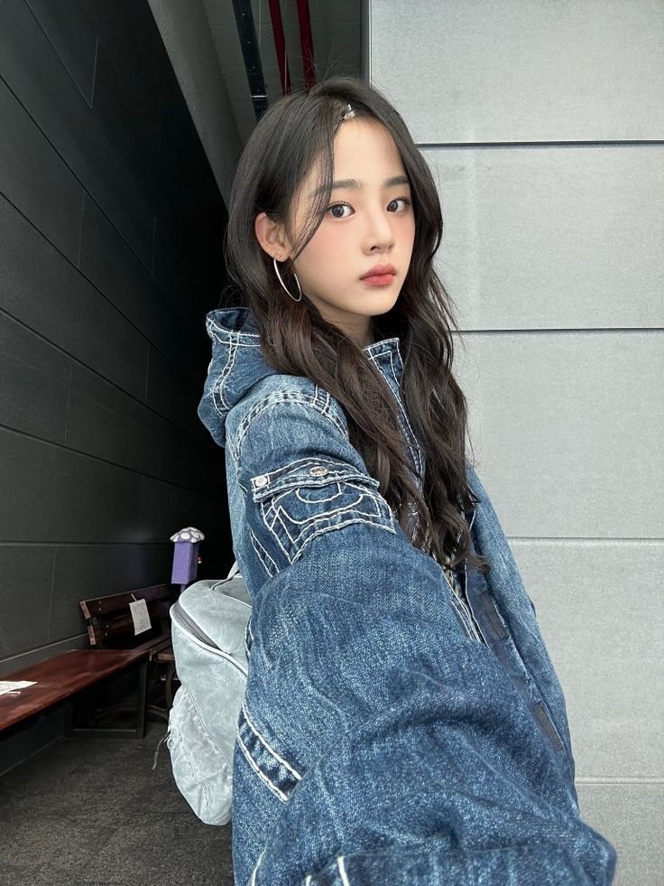
minjibear: comeback soon but i just want to comeback to my bed
meowrin: nice caption, i approve
inhye: but YAYYY NJ COMEBACK SEASON
hanpham: ummmm MINJII? KIM MINJI??? OMG
meowrin: @hanpham wait what is it i want to know the tea
inhye: @hanpham WAIT ME TOO PLS
puppyelle: LOLLL NO WAY MINJI YOU ARE INSANE
ughnchae: now wait a minute... HAHAHAHAHAHAHA

Minji locked her phone and tossed it onto the cushion beside her, sinking deeper into the plush sofa of their dorm's shared living room. Her members were scattered around, chatting and munching on snacks, but she couldn't focus on anything they were saying.
Her chest felt tight, like the silence she was trying to keep around herself was on the verge of shattering.
She'd posted the picture without thinking too much about it—or at least, that's what she wanted to believe. Now that the comments were rolling in, her grip on that illusion was slipping.
"You're so dramatic, Minji," she muttered under her breath, running a hand through her hair.
"What's dramatic?" Hanni asked, plopping down beside her with a bag of chips.
"Nothing," Minji said quickly, a little too quickly.
Hanni raised an eyebrow, her gaze darting to Minji's phone. "Is this about your post?"
"No," Minji said flatly, but the warmth creeping up her neck betrayed her.
"Oh my god, it is!" Hanni said, her voice practically bubbling with glee. She nudged Minji with her shoulder. "You know Soorin's gonna see it, right?"
Minji stiffened but forced a shrug, trying to play it off. "Why should I care?"
Hanni blinked, her grin fading slightly. "I mean, you're the one who's wearing her jacket."
"So?" Minji muttered, avoiding her gaze.
"So," Hanni said, her voice more serious now, "she's probably gonna think it's a big deal."
Minji frowned, her arms crossing tightly over her chest. "It's not. It's just a jacket."
"Okay," Hanni said slowly, watching her carefully. "Then why'd you keep it?"
Minji didn't answer right away. She stared down at her hands, the words she wanted to say catching in her throat. She couldn't explain it—not to Hanni, not even to herself.
"I don't know," Minji said finally, her voice quieter now. "I just... didn't think about it."
Hanni tilted her head. "Are you sure that's all?"
Minji shot her a look, her expression closing off like a door slamming shut. "Yeah. That's all."
The tension between them lingered for a moment before Hanni sighed, leaning back against the couch. "Alright. If you say so."
Minji nodded stiffly, grateful that Hanni didn't push further.
But as Hanni got up to join the others, Minji couldn't shake the unease settling over her. She wasn't sure what she was more afraid of—what Soorin might think about the post, or what it might reveal about herself.
Meanwhile, Soorin paced back and forth in the dorm's small common area, her phone clutched tightly in her hand. She couldn't stop staring at the post. Every time she looked at it, her chest tightened with a mix of irritation, confusion, and... something she couldn't quite name.
The jacket was hers. Hers. So why was Minji flaunting it like she owned the thing?
"So, are you gonna keep stomping around like a drama queen, or are you actually going to tell me what's going on?"
Soorin whipped around to see Yunjin standing in the doorway, her arms crossed and an amused expression on her face. She had been leaning against the frame, watching Soorin's one-woman show for at least five minutes.
"It's nothing," Soorin muttered, shoving her phone into her pocket.
"Oh, nothing, huh?" Yunjin said, stepping into the room. "Because it looks like you're ready to fight someone."
"I'm not," Soorin said, but her voice wavered just enough for Yunjin to catch it.
"Spill," Yunjin demanded, grabbing Soorin's arm and dragging her onto the couch.
"Yunjin, I—"
"Sit," Yunjin said firmly, her tone leaving no room for argument.
Soorin huffed but sank onto the cushions, crossing her arms over her chest. "It's stupid."
"Even better," Yunjin said, grinning as she sat beside her. "I love stupid drama. Now tell me."
Soorin hesitated, chewing on her bottom lip. But the look on Yunjin's face told her she wasn't going to let it go. With a resigned sigh, she pulled out her phone and handed it over.
Yunjin squinted at the screen for a moment before her eyes widened. "No way. She's wearing your jacket?"
"Yeah," Soorin muttered, slumping back against the couch.
Yunjin's eyebrows shot up as she scrolled through the comments. "Wow. She's bold, I'll give her that."
"She's annoying," Soorin grumbled, snatching the phone back. "Who does that?"
"Apparently, Minji," Yunjin said, leaning back and crossing her arms. Her grin had faded, replaced by a more guarded expression. "So, what are you gonna do about it?"
"I don't know," Soorin admitted, running a hand through her hair. "I feel like I should say something, but..."
"But what?" Yunjin prompted, her tone sharp enough to make Soorin glance at her.
Soorin hesitated, staring at the floor. "It's just weird, okay? I don't get why she'd do it."
Yunjin's jaw tightened, though her voice remained casual. "Maybe she's just trying to mess with you. You know, Minji loves her little power moves."
"Maybe," Soorin said, but the explanation didn't sit right with her.
Yunjin watched her closely, the knot in her chest tightening. Soorin's face was scrunched in concentration, her brows furrowed as she replayed the situation in her head for what must have been the hundredth time.
It was the way Soorin couldn't stop thinking about Minji that got to Yunjin. The way her voice softened when she talked about her, even if it was just to complain. The way she cared enough to pace the room like a storm, her thoughts completely consumed.
"You're way too worked up about this," Yunjin said finally, trying to keep her tone light.
"I'm not worked up," Soorin argued, but the redness in her cheeks betrayed her.
"You totally are," Yunjin said, standing and ruffling Soorin's hair. "But whatever. If you really want to confront her, just do it. Otherwise, you're gonna drive yourself—and me—crazy."
Soorin swatted her hand away, glaring. "You're not helping."
"Sure, I am," Yunjin said, smirking as she grabbed her water bottle. "I'm the voice of reason in your little Minji obsession."
"It's not an obsession!" Soorin snapped, but her words didn't have the bite she intended.
"Uh-huh. Sure," Yunjin said, waving her off as she headed for the door. "Let me know when you're ready to stop spiraling. I'll be here."
Soorin groaned, flopping onto the couch as Yunjin left the room. She hated how smug Yunjin was being, mostly because a small part of her knew she wasn't entirely wrong.
She needed to figure this out. She needed to confront Minji.
And soon.
Chapter Twelve
The Hybe building was quieter than usual, the soft hum of fluorescent lights echoing in the otherwise empty hallway as Soorin made her way toward the practice rooms. Her heart pounded harder with every step, the sound almost drowning out the rhythmic squeak of her sneakers on the polished floor.
She'd told herself she wasn't going to overthink this. She was just going to get her jacket back, plain and simple. But the knot in her stomach begged to differ.
Soorin stopped outside the studio door, her hand hovering over the handle. From the faint music filtering through the crack, she could tell someone was inside. She knew it was Minji.
Taking a deep breath, she pushed the door open.
Minji was alone, standing in front of the mirrors, her movements sharp and deliberate as she practiced a sequence. She hadn't noticed Soorin yet, too focused on perfecting each step. The sight of her, so precise and controlled, made Soorin's chest tighten inexplicably.
"Hey."
Her voice came out firmer than she expected, and Minji froze mid-step, spinning around to face her. For a moment, their eyes locked, and Soorin saw the brief flicker of surprise in Minji's expression before it disappeared behind her usual stoic mask.
"Soorin," Minji said, her voice steady but low. "What are you doing here?"
Soorin stepped further into the room, her arms crossed. "You know why I'm here."
Minji's brow furrowed slightly, but she didn't respond, wiping her hands on her sweatpants and turning back to the mirrors.
Soorin's frustration bubbled to the surface. "Seriously? You're just gonna act like it's nothing?"
Minji glanced at her reflection in the mirror, her expression unreadable. "What are you talking about?"
"The jacket," Soorin said sharply, taking another step forward. "My jacket. The one you wore and posted like it was yours."
Minji finally turned to face her fully, her arms crossing defensively. "You left it in the studio. I found it. What's the big deal?"
Soorin let out a short, incredulous laugh. "The big deal is that you didn't even ask. You just—what? Decided to keep it?"
"I was going to give it back," Minji snapped, though her voice wavered slightly.
"When?" Soorin challenged, her tone harsher than she intended.
Minji opened her mouth to respond but hesitated, her gaze flickering to the side.
Soorin's shoulders slumped slightly, the anger in her chest giving way to something else—something she couldn't quite name. "Why did you even post it?" she asked, her voice softer now.
Minji looked at her for a long moment, her jaw tightening. "I don't know."
"You don't know?" Soorin repeated, her brow furrowing.
Minji shook her head, her hands balling into fists at her sides. "No, I don't. Okay? I just... I didn't think about it."
The rawness in her voice caught Soorin off guard. She stared at Minji, trying to piece together the puzzle in front of her—the guarded posture, the tension in her jaw, the way her eyes seemed to hold a storm of emotions she wasn't saying out loud.
Neither of them spoke for a moment, the silence stretching between them like a taut string.
"Do you... hate me or something?" Soorin asked finally, her voice barely above a whisper.
Minji's eyes snapped to hers, wide and startled. "What? No, I told you I never actually hated you."
"Then what is this?" Soorin pressed, taking a tentative step closer. "You act like you don't want anything to do with me, but then you—" She gestured vaguely, her frustration bubbling up again. "—do stuff like this. And I don't get it."
Minji's chest rose and fell as she took a shaky breath, her carefully constructed facade beginning to crack. "I don't get it either," she admitted, her voice trembling just enough to betray her.
Soorin blinked, startled by the honesty in her words.
Minji turned away, running a hand through her hair as she paced a few steps. "I don't know why I took the jacket. I don't know why I posted it. I just... did."
Her voice broke on the last word, and Soorin's heart clenched at the vulnerability in her tone.
"Minji..." Soorin started, unsure of what she even wanted to say.
Minji shook her head, still not looking at her. "I don't know what's wrong with me."
"Nothing's wrong with you," Soorin said automatically, her voice firm.
Minji stopped pacing, her shoulders stiffening. "Then why does this feel so... confusing?"
Soorin hesitated, her own confusion swirling in her chest. "I don't know," she said honestly.
The admission seemed to hang in the air between them, fragile but grounding.
Minji finally turned back to her, her expression softer but no less conflicted. "I'll get your jacket," she said quietly, moving toward her bag.
Soorin didn't stop her, watching as she pulled the jacket out and handed it over.
Their fingers brushed briefly as Soorin took it, and the fleeting contact sent a strange jolt through her chest.
"Thanks," she said, her voice softer now.
Minji nodded, her gaze dropping to the floor.
Soorin stared at her for a moment longer, her own heart pounding as she tried to make sense of the feelings churning inside her.
"See you around," she said finally, stepping toward the door.
Minji didn't respond, but as Soorin walked away, she couldn't shake the feeling that they'd both just crossed a line they didn't fully understand.

Soorin pushed open the door to the Le Sserafim dance studio, the familiar scent of polished floors and lingering sweat greeting her as she stepped inside. The others were already there, scattered across the space as they stretched and chatted casually.
Yunjin was the first to notice her, her sharp eyes catching the slump in Soorin's shoulders and the way her gaze seemed far away.
"Hey, you're late," Yunjin said, waving a hand lazily. "Unusual for you, grandma. You feeling okay?"
Soorin muttered something incoherent, dropping her bag near the benches and sinking onto the floor. She pulled her knees to her chest and stared at the blank space in front of her, her mind still racing with everything that had just happened with Minji.
"You're out of it," Yunjin said, crouching beside her and tilting her head to try and meet Soorin's gaze. "What's going on?"
"Nothing," Soorin mumbled, her voice flat.
"Yeah, no," Yunjin said, crossing her arms. "I know your 'nothing.' It means something's bothering you, and you're too stubborn to admit it."
"Leave her alone, Yunjin," Chaewon called from across the room, where she was tying her shoelaces. "She'll talk when she's ready."
"I'm just saying," Yunjin said, standing and leaning against the wall. "She's been acting weird all day."
"Maybe she's tired," Eunchae chimed in, stretching her arms over her head. "She's like that when she doesn't get enough sleep."
"Or maybe," Yunjin said, a teasing lilt creeping into her voice, "it has something to do with a certain someone who's been living rent-free in her head lately."
Soorin snapped her head up, glaring at Yunjin. "Don't."
Yunjin raised her hands in mock surrender, but the faint smirk on her lips didn't fade.
"Wait, wait," Eunchae said, her eyes lighting up with curiosity. "Is this about Minji?"
Soorin groaned, burying her face in her hands. "Can we not do this right now?"
The room fell quiet for a moment, and then Sakura, who had been quietly watching from the sidelines, spoke up. "You don't have to tell us what's going on, but it's pretty obvious you're distracted. If something's bothering you, you should deal with it. Otherwise, it's just going to keep messing with your head."
Soorin let out a heavy sigh, her hands dropping to her lap. She knew Sakura was right, but that didn't make it any easier. How was she supposed to "deal with it" when she couldn't even figure out what "it" was?
"I just..." Soorin started, hesitating as she searched for the right words. "I ran into Minji earlier, and it was... weird."
"Weird how?" Chaewon asked, her tone calm and measured.
"She apologized. Again," Soorin said, her voice quiet. "And then I asked her why she even posted that picture with my jacket, and she said she didn't know."
The room went silent, the weight of her words hanging between them.
"So, what does that mean?" Eunchae asked, tilting her head.
"I don't know," Soorin said, frustration creeping into her voice. "She looked... confused. Like she didn't know what she was feeling either."
Yunjin's smirk faded, her expression tightening as she watched Soorin's face.
"Maybe she's just messing with you," Yunjin said, her tone sharper than she intended.
"I don't think she is," Soorin replied, shaking her head. "It didn't feel like that."
Yunjin didn't respond, crossing her arms and leaning further back against the wall.
Chaewon walked over, placing a hand on Soorin's shoulder. "Whatever it is, just take it one step at a time. You don't have to figure it all out right now."
Soorin nodded slowly, grateful for the support, but the knot in her chest didn't ease.
As the group shifted focus to discussing their next comeback, Soorin tried to concentrate, but her mind kept drifting back to Minji—the uncertainty in her voice, the fleeting vulnerability in her eyes, and the unspoken tension that seemed to hang between them like a fragile thread.
The room stayed silent for a moment after Soorin's words hung in the air. Eunchae broke the silence, her brow furrowed in curiosity.
"Okay, but... what about you?" Eunchae asked, leaning forward on her hands. "How do you feel about all this?"
Soorin blinked, caught off guard. "What do you mean?"
Chaewon tilted her head, her voice gentle. "You've been so worked up about this, Soorin. It's not just about Minji, is it?"
Soorin opened her mouth to protest but closed it again, her throat tightening. Her gaze dropped to the floor, her hands gripping the hem of her hoodie as she tried to steady her breathing.
Yunjin, who had been leaning silently against the wall, spoke up, her voice softer now. "Hey, no one's judging you, okay? We're just trying to understand what's going on in that head of yours."
Soorin hesitated, her heart pounding in her chest. She could feel their eyes on her—watchful, curious, but not unkind. The weight of their concern felt heavy, but it was also strangely comforting.
"I don't know," Soorin said finally, her voice barely above a whisper. "I don't even know what I'm feeling."
The admission seemed to hang in the air, fragile and raw.
"That's okay," Sakura said gently, sitting down beside her. "You don't have to have it all figured out right now. Just... start with what you do know."
Soorin let out a shaky breath, her grip tightening on her hoodie. "I've just been... confused. For a while now."
"Confused how?" Chaewon prompted, her tone careful.
Soorin swallowed hard, her throat dry. "Like... I don't understand myself sometimes. When it comes to... people."
Yunjin's expression softened, but she stayed quiet, letting Soorin speak.
"I've been thinking about it a lot," Soorin continued hesitantly, her voice trembling slightly. "And I think... I think I might like girls."
The words felt heavy and light all at once, like a weight had been lifted even as her chest tightened with fear of their reaction.
For a moment, the room was silent. Then, Eunchae broke it with a soft, "Oh."
Not a judgmental "oh." Not a shocked one. Just... understanding.
"That's okay," Sakura said, her voice warm.
"Yeah," Chaewon agreed, a small smile tugging at her lips. "That's more than okay."
Soorin glanced up, her eyes wide and uncertain. "You don't think it's... weird?"
Yunjin scoffed, rolling her eyes. "Soorin, come on. You're you. We're not gonna think anything different of you because of that."
"Yeah," Eunchae added, nodding quickly. "We love you no matter what. Duh."
Soorin's chest tightened again, but this time it wasn't fear—it was relief. She blinked rapidly, her vision blurring slightly as the weight of their words sank in.
"Thanks," she said quietly, her voice barely above a whisper.
Sakura reached out, giving her hand a reassuring squeeze. "Anytime."
Yunjin stayed quiet, her eyes lingering on Soorin a moment longer. There was something unreadable in her gaze—a mix of emotions she wasn't ready to unpack yet. But she smiled faintly, giving Soorin a small nod of encouragement.
Soorin bit her lip, the sting of unshed tears pricking at the corners of her eyes. She wasn't someone who cried easily—at least, not in front of others—but the weight of her admission, combined with the warmth of her members' reactions, made it hard to hold everything in.
Eunchae shuffled closer, her expression soft and full of concern. "Soorin, you know we love you, right? Like, really love you. You don't have to worry about stuff like this with us."
"Yeah," Chaewon said, kneeling down in front of her and placing a steady hand on her knee. "We're your family. Nothing's ever going to change that."
Sakura gave Soorin's hand another squeeze, her small smile warm and reassuring.
Soorin blinked rapidly, swallowing hard as the lump in her throat threatened to overwhelm her. "You guys are gonna make me cry," she mumbled, her voice wobbling slightly.
"Good," Yunjin said with a teasing grin, though her tone was softer than usual. "You're always so tough, it's nice to see you have a heart."
"Yunjin," Sakura warned lightly, though her smile grew.
Before Soorin could say anything else, Eunchae scooted over and threw her arms around her. "Group hug time!" she declared, her energy as bright as ever.
Chaewon laughed softly, leaning in to wrap an arm around both of them, while Sakura joined in from the side.
Yunjin hesitated for a moment, her expression unreadable as she watched the pile of affection grow. Then, with a small shake of her head and a faint smile tugging at her lips, she moved closer and slipped her arms into the hug.
Soorin was completely engulfed, their warmth surrounding her like a protective barrier. It was overwhelming, but in the best way. For the first time in what felt like forever, she didn't feel alone in her confusion.
"We love you, Soorin," Chaewon said softly, her voice steady and full of conviction.
"Always," Sakura added, her tone gentle.
"Forever and ever," Eunchae chimed in, squeezing her tightly.
Yunjin didn't say anything, but her arms around Soorin's shoulders tightened slightly, her silence speaking louder than words.
Soorin let out a shaky breath, a tear slipping down her cheek as she mumbled, "Thank you."
The hug lingered for a moment longer before they finally pulled back, each of them smiling softly at her.
"Alright," Yunjin said, clearing her throat and stepping back with her usual swagger. "Let's get back to work before Chaewon starts lecturing us about wasting time."
Chaewon rolled her eyes, standing and brushing off her leggings. "You're lucky I'm feeling generous today."
Sakura helped Soorin to her feet, giving her a quick pat on the back. "You're strong, Soorin. But you don't always have to be. We've got you."
Soorin nodded, her chest feeling lighter than it had in days.
As they moved back into formation to discuss their upcoming comeback, Soorin glanced around at her members, her heart swelling with gratitude.
For the first time in a long time, she felt like maybe—just maybe—things would be okay.
Chapter Thirteen
Later that evening, Soorin was sprawled out on her bed, scrolling through her phone in a half-hearted attempt to distract herself. Her thoughts kept drifting back to the moment in the studio with her members—their warmth, their reassurance, the way they'd wrapped her in love and made her feel seen in a way she hadn't expected.
But her phone buzzed, pulling her from her thoughts.
It was a message. From Minji.
minjibear: hey, we're having a little hangout tomorrow night if you're free. come by?
Soorin stared at the screen, her heart skipping a beat. Minji's messages were always brief, almost cold in their simplicity, but the invitation felt... different.
Her thumb hovered over the keyboard as she debated how to respond.
"Minji again?" Yunjin's voice startled her, and Soorin looked up to see her leaning casually against the doorframe.
"Do you ever knock?" Soorin grumbled, locking her phone.
"Not when I'm checking on you," Yunjin said with a smirk, stepping into the room. "What's she want now?"
"She invited me to hang out with them," Soorin said, her voice neutral, though her chest felt anything but calm.
Yunjin raised an eyebrow, crossing her arms. "And you're actually considering it?"
"I don't know," Soorin admitted, sitting up. "Maybe. It's not like she's being mean or anything."
"Yet," Yunjin muttered under her breath, but Soorin caught it.
"What's that supposed to mean?" Soorin asked, frowning.
Yunjin shrugged, her expression unreadable. "Nothing. Just... don't forget how she treated you before, okay? People like that don't just change overnight."
"She apologized," Soorin said defensively, though her voice wavered.
"Sure," Yunjin said, her tone clipped. "Because Hanni probably forced her to."
Soorin opened her mouth to argue but stopped herself, unsure of what to say.
Yunjin sighed, sitting down on the edge of the bed. "Look, I'm just saying... be careful. I don't trust her."
"Why?" Soorin asked, her voice quieter now.
"Because I've seen how she looks at you," Yunjin said, her jaw tightening. "And it's not just the jacket thing or the apologies. She's messing with your head, and I don't want you getting hurt."
The words hung in the air, heavy and unspoken. Soorin stared at Yunjin, her chest tightening. She wanted to believe Minji wasn't playing games, that the invitation was genuine. But Yunjin's words planted a seed of doubt she couldn't ignore.
Meanwhile, in the kitchen, Yunjin pulled Chaewon aside, her voice low and sharp.
"I don't like this," Yunjin said, glancing over her shoulder to make sure they weren't overheard.
"What don't you like?" Chaewon asked, her tone calm but curious.
"This whole thing with Soorin and Minji," Yunjin said, crossing her arms. "It's sketchy. Minji was awful to her not that long ago, and now suddenly she's inviting her to hang out? It doesn't add up."
Chaewon tilted her head, her expression thoughtful. "Maybe she's trying to make amends. People can change, you know."
"Or maybe she's just playing some kind of game," Yunjin snapped, her voice rising slightly before she caught herself. She took a deep breath, lowering her voice again. "Look, I know you're all about giving people the benefit of the doubt, but I don't buy it. Minji doesn't deserve Soorin's time."
Chaewon studied Yunjin carefully, her brow furrowing. "Is this about Minji? Or is it about you?"
Yunjin froze, her jaw clenching as Chaewon's words hit a little too close to home.
"I'm just looking out for her," Yunjin said finally, her tone defensive. "Someone has to."
Chaewon didn't press further, but the look she gave Yunjin was knowing.
Back in her room, Soorin stared at Minji's message, her thoughts swirling. Yunjin's words echoed in her mind, but so did the memory of Minji's vulnerability in the studio.
After a long pause, she started typing.
rinsoos: I'll think about it.
Her chest felt tight as she hit send, but she couldn't shake the curiosity—and the unease—pulling her toward whatever this was with Minji.

Minji sat cross-legged on the couch in the New Jeans dorm's common room, her phone balanced on her knee. The TV played softly in the background, and her members were scattered around the room—Hanni scrolling on her phone, Haerin lazily flipping through a magazine, Hyein texting someone, and Danielle attempting to braid her own hair with varying levels of success.
But Minji's focus was elsewhere.
She kept unlocking her phone every few minutes, staring at the chat with Soorin. The three little dots indicating typing had appeared and disappeared twice already, making her stomach twist in ways she didn't fully understand.
"Okay, what is going on with you?" Hanni finally asked, breaking the comfortable silence. She sat up straighter, eyeing Minji suspiciously. "You've been glued to your phone all night."
Minji immediately locked her screen, her expression carefully neutral. "Nothing."
"Liar," Hanni said, grinning as she leaned closer. "You're acting weird. Is it a boy? Or, wait—don't tell me it's an idol crush!"
The other members perked up at Hanni's teasing, their attention shifting to Minji.
"It's not an idol crush," Minji said flatly, though her grip on her phone tightened.
"So what is it?" Haerin asked, tilting her head. "Wait, is this about Soorin's jacket?"
Minji froze, her face heating.
Hyein sat up straighter, grinning. "Oh my God, it is about the jacket, isn't it? Did she come for revenge?"
Danielle giggled. "If she did, I wouldn't even blame her. You literally posted wearing it like it was yours!"
Minji glared at them, her jaw tightening. "No, it's not about the jacket. And for the record, I gave it back." Not entirely the truth, but at least it would get them off her back.
"You did?" Hanni teased, raising an eyebrow. "Well, I'm glad, you were acting like it was this sacred treasure."
Minji groaned, rubbing her temples. "Can we not do this right now?"
Hanni smirked, but the concern in her eyes softened her teasing. "Alright, fine. So if it's not the jacket, what is it? You've been acting weird all day."
Minji hesitated, glancing down at her phone again. She could feel all their eyes on her, waiting.
"I invited someone to hang out with us tomorrow," she said finally, her voice low and hesitant.
Hanni blinked, leaning forward. "Wait, what? Who?"
Minji hesitated again, her grip on her phone tightening. "Soorin."
The room went completely silent.
"Le Sserafim's Soorin?" Haerin asked after a beat, her tone laced with disbelief.
"Yeah," Minji mutters, her shoulders stiffening.
Danielle set her braid down, blinking at Minji like she'd just announced she was retiring. "Since when do you even talk to Soorin?"
"I don't," Minji said quickly, then winced at how defensive she sounded. "I just... thought it was time to suck it up and try to get along. You all like her so much, so..."
Her words trailed off, and the weight of their stares made her chest feel heavy.
"Wait, wait," Hyein said, holding up a hand. "Aren't you the one who said she was annoying and too fake to deal with? What happened to that?"
"I was being immature," Minji snapped, standing abruptly. "I'm trying to be better, okay? Is that so hard to believe?"
Hanni studied her carefully, her teasing replaced by curiosity. "That's... kind of surprising, Minji. But it's also nice. I'm proud of you for trying."
Minji's stomach churned at the praise, her own words echoing in her mind. You all like her so much, so...
It wasn't the full truth, and she knew it. But the real reason—the tightness in her chest every time she thought of Soorin, the way her voice had softened when she'd said "thanks," the strange pull Minji felt whenever they were in the same room—was too much for her to unpack, let alone admit out loud.
"Well, don't make it weird tomorrow," Minji said quickly, brushing past the topic. "I don't want her thinking we're trying too hard or anything."
The others exchanged glances, clearly still processing the unexpected invitation. But they nodded, shifting their attention back to their own distractions.
Minji sank back onto the couch, her phone buzzing softly in her hand. She glanced down to see Soorin's reply:
rinsoos: I'll think about it.
Her chest tightened again, her emotions twisting into a knot she didn't know how to untangle.
Chapter Fourteen
Soorin stared at her reflection in the mirror, nervously smoothing down the hem of her oversized hoodie for the fifth time in as many minutes.
It's just a hangout, she told herself. With people. Normal people. Like you.
But her chest still felt tight, and her hands wouldn't stop fidgeting as she glanced at her phone again. She had typed and erased the same message to Minji three times before finally sending it.
rinsoos: I'll see you soon.
The response was immediate.
minjibear: cool. :)
That single smiley face was somehow worse than no response at all. It was too casual, too confident—exactly the kind of thing that made Soorin second-guess herself.
She tossed her phone onto her bed and turned back to the mirror, scanning her outfit critically. Was this too casual? Would it look like she wasn't trying? Or would it look like she was trying too much to look like she wasn't trying?
Soorin groaned, raking a hand through her hair and turning toward her closet again. She barely registered the sound of the door creaking open behind her.
"Hey, Soorin, want to—" Eunchae's voice trailed off, and Soorin turned to find her standing in the doorway, her expression somewhere between curious and confused.
"What are you doing?" Eunchae asked, leaning against the doorframe. "We're staying in tonight, right? Why are you getting all fancy?"
"I'm not getting fancy," Soorin muttered, tugging self-consciously at her hoodie.
Eunchae raised an eyebrow, clearly unconvinced. "So, what's with the outfit panic?"
Soorin hesitated, biting her lip as she debated what to say. But the way Eunchae's gaze narrowed told her there was no avoiding this.
"I'm... going to hang out with New Jeans," Soorin admitted finally, her voice barely above a whisper.
Eunchae's eyes widened. "Wait, what? Like... Minji's New Jeans?"
"Yeah," Soorin said, already regretting telling her.
Eunchae grinned, crossing her arms. "Wow. Didn't think you'd be able to stomach being around her after everything. You're full of surprises."
"It's... well, I'm friends with the other members," Soorin said quickly, though her cheeks burned.
"Uh-huh," Eunchae said, smirking. "Does Yunjin know about this? Don't think she'd like this idea too much~," her tone was teasing, it was dripping from each word as she twirled her hair around her finger.
Soorin glared at the youngest, unimpressed with her jokes. "Shut up, don't tell her, alright? I would never hear the end of it."
Eunchae's grin faltered. "You know that'll make it that much worse when she does find out, right?"
"Who says she will?" Soorin shrugs, her tone quieter now. "You know how she feels about Minji, please, Eunchae..."
Eunchae studied her for a moment, then shrugged. "Alright, jeez. Your secret's safe with me."
"Thank you~," Soorin squeaks, her shoulders relaxing slightly.
Eunchae smirked again, her teasing tone returning. "But you owe me. Big time."
Soorin rolled her eyes but didn't argue, grabbing her bag and slipping past Eunchae. She peeked down the hallway, making sure the coast was clear before heading out.
About twenty minutes later, Yunjin emerged from her room, stretching and yawning as she wandered into the common area.
"Hey," she said, glancing around. "Where's Soorin?"
Chaewon looked up from her laptop, tilting her head. "She left a little while ago."
"Left?" Yunjin frowned, her posture straightening. "Where'd she go?"
"I don't know," Chaewon said with a shrug. "She didn't say."
"She was in a hurry, though," Sakura added, not looking up from her phone.
"She probably has a secret girlfriend," Kazuha teased, smirking from where she was stretching on the floor, "or boyfriend!" She added, recalling the fact that her friend never exactly defined her sexuality.
Eunchae, who had been quietly flipping through a magazine, rolled her eyes. "Or maybe she just wanted some fresh air. Not everyone is hiding a scandal, Zuha." The fact that she wasn't joining in on it had Kazuha confused, furrowing her brows as she peered at the youngest.
Yunjin's frown deepened, her gaze flicking toward the door. "She didn't say anything to you guys?"
"Why are you so worried?" Chaewon asked, raising an eyebrow. "She's a grown adult. She can go out without checking in."
"I'm not worried," Yunjin said quickly, though the edge in her voice betrayed her. "It's just... weird, that's all."
Eunchae kept her face neutral, flipping a page in her magazine. "She'll be back soon, probably. No big deal."
Yunjin didn't respond, but her jaw tightened as she glanced toward the door again.

The New Jeans dorm was tucked into a quiet corner of the sprawling Hybe complex, a space that managed to feel both professional and oddly personal. The warm light spilling through the windows glinted off polished floors, and Soorin's sneakers squeaked faintly as she climbed the last few steps to their front door.
She paused, her heart thudding in her chest as she raised a hand to knock. Her reflection in the glass pane beside the door caught her eye—her hoodie slightly wrinkled from the rush, her hair tucked neatly behind her ears. She reached up, hesitating, then tousled her hair slightly.
Casual, not sloppy, she thought, biting her lip.
Before she could second-guess herself, the door swung open, revealing Hanni with her phone in one hand and an easy smile spreading across her face.
"Soorin!" she exclaimed, leaning against the doorframe like she'd been expecting her all along. "You actually came. Minji's going to flip."
Soorin blinked, her hands fiddling with the strap of her bag. "Am I... early?"
Hanni waved her inside with an exaggerated sweep of her arm. "Nope. You're perfect. Come in!"
The living room was cozy in a way that felt completely different from the sleek professionalism of the studio spaces. Plush beanbags were scattered across the floor, a pile of blankets draped haphazardly over the couch. Haerin sat cross-legged on one of the beanbags, scrolling through her phone, while Danielle was half-hidden behind a mountain of snacks on the coffee table.
Danielle perked up when she saw Soorin, a bright grin lighting up her face. "Oh my gosh, she's here! Hi!"
"Hi," Soorin replied, her voice a little higher than she intended as she stepped inside.
"Shoes off," Haerin murmured without looking up, her tone casual but firm.
"Right," Soorin mumbled, quickly kicking off her sneakers and setting them neatly by the door.
As she straightened, Minji appeared in the hallway, her hair pulled back into a simple ponytail and her expression unreadable. For a moment, their eyes met, and Soorin's stomach flipped uncomfortably.
"You made it," Minji remarked, her voice even as she folded her arms.
"I—yeah," Soorin stammered, gripping the strap of her bag tighter. "Thanks for inviting me."
Minji nodded, stepping closer but keeping a careful distance. "Come sit. We were just about to pick a movie."
Hanni clapped her hands together, beaming. "You're just in time for the chaos! We can never agree on anything, so it's going to get messy."
Haerin snorted, tossing a bag of chips onto the coffee table. "Messy because Danielle always picks something awful."
"Hey!" Danielle protested, clutching a pack of gummies to her chest like they were a shield. "It's not my fault you don't appreciate my taste."
The playful banter filled the room, and Soorin felt herself relax just a little as she slipped her bag off her shoulder and settled into a beanbag on the edge of the group.
Minji sat down on the couch, her posture poised but not stiff, her gaze flicking toward Soorin now and then. Soorin could feel it—the faint pull of Minji's attention, the way it made her chest tighten and her thoughts scatter.
"So, Soorin," Hanni said suddenly, plopping down beside her. "What kind of movies do you like? Horror? Romance? Maybe some artsy indie stuff?"
Soorin blinked, caught off guard. "Uh... I'm not picky."
"Lame answer," Hanni teased, nudging her shoulder.
Danielle leaned forward, her hands clasped together dramatically. "What about musicals? Please tell me you like musicals."
"They're okay," Soorin replied cautiously, and Danielle let out a cheer of victory.
"You're officially my favorite," Danielle declared, earning a groan from Haerin.
As the group fell back into lighthearted bickering over the movie selection, Soorin felt a strange warmth settle in her chest. It wasn't the kind of warmth she'd felt earlier with her own group—this was different, unfamiliar, but not unpleasant.
Her gaze drifted to Minji again, who was watching the interaction with a faint smile tugging at the corners of her lips. For a split second, their eyes met, and Minji's smile faded into something softer, something Soorin couldn't quite read.
And just like that, the warmth in her chest twisted into something more complicated, something that made her feel both nervous and alive.
The movie had been chosen—some lighthearted rom-com that Danielle championed and Haerin begrudgingly accepted—and the group settled into their spots. Hanni and Danielle claimed the couch, spreading out like they owned the place, while Haerin stayed on her beanbag, occasionally tossing chips into her mouth with precision.
Soorin found herself perched on the edge of her beanbag, trying to blend in without drawing too much attention. The room was dim except for the glow of the TV, and the chatter quieted as the movie began.
She glanced toward Minji, who sat at the far end of the couch. Minji's posture was relaxed, but her gaze wasn't on the screen. Instead, she seemed lost in thought, her arms crossed loosely over her chest.
"Comfortable?" Hanni whispered suddenly, leaning over to Soorin with a mischievous grin.
Soorin blinked, startled. "Yeah, why?"
"Just making sure," Hanni teased, winking. "Minji's hospitality is rare, you know. You must be special."
A snicker escaped from Danielle, who leaned her head against Hanni's shoulder. Minji shot them both a sharp look, her voice low but firm. "Hanni, stop."
"What?" Hanni said, feigning innocence. "I'm just being welcoming."
"Watch the movie," Minji instructed, her tone leaving no room for argument.
Soorin's cheeks burned, and she quickly turned her attention back to the screen, though the words from Hanni lingered in her mind.
As the movie unfolded, Soorin tried to focus, but her thoughts kept drifting. The laughter from the characters on screen, the warmth of the room, and the quiet hum of voices all blended into a haze.
"Hey," Minji's voice broke through the fog.
Soorin turned her head to see Minji leaning slightly toward her, her voice low enough that only she could hear. "You doing okay?"
"Yeah," Soorin replied, her voice quieter than she intended. "Why?"
"You just seem... tense," Minji remarked, her expression softening.
Soorin hesitated, her hands tightening on the blanket she'd draped over her lap. "I guess I'm just not used to this."
Minji tilted her head, her brow furrowing slightly. "Used to what?"
"Being here," Soorin admitted, her voice barely above a whisper. "With you guys."
Minji's gaze lingered on her, something unreadable flickering in her eyes. "You don't have to feel out of place. They like you."
Soorin's chest tightened at the unexpected kindness in her tone. "Do you?" she asked before she could stop herself, the words tumbling out awkwardly.
Minji blinked, her posture stiffening slightly. For a moment, she seemed caught off guard, as though she hadn't expected the question. "I wouldn't have invited you if I didn't."
The answer was simple, almost too simple, but it made Soorin's chest ache in a way she didn't fully understand.
"Thanks," Soorin murmured, her gaze dropping to the blanket again.
By the time the credits rolled, the energy in the room had shifted. Hanni and Danielle were giggling about the absurdity of the movie's ending, while Haerin stood to stretch, her movements slow and deliberate.
Soorin moved to grab her bag, but Minji spoke up, her voice cutting through the noise. "Stay a little longer."
Soorin froze, looking up at her. "What?"
"You don't have to leave yet," Minji clarified, her tone casual but her expression unreadable.
Hanni chimed in, her grin widening. "Yeah, hang out with us for a bit more. It's not like Le Sserafim has an early call tomorrow, right?"
Soorin hesitated, glancing between Minji and the others. The knot in her chest tightened, her mind racing with reasons to stay and just as many to leave.
Finally, she nodded, her voice quiet. "Okay, sure, just for a little while."
Minji gave a small nod in return, her gaze softening briefly before she turned her attention to Hanni, who was already diving into a new conversation about snacks.
Soorin settled back into her beanbag, her thoughts a whirlwind of confusion and curiosity.
Chapter Fifteen
The night had quieted down, the faint hum of conversation from the others in the living room barely audible from the small balcony where Soorin now stood. The cool night air brushed against her skin, a welcome contrast to the warmth inside. She leaned against the railing, her fingers tracing the cool metal as her thoughts swirled.
She heard the sliding door open behind her and turned just enough to see Minji stepping out, her expression calm but guarded.
"Hey," Minji greeted softly, closing the door behind her.
"Hey," Soorin replied, her voice quieter than usual.
Minji walked over, stopping a few feet away but not too close. She rested her hands on the railing, her gaze fixed on the dark horizon. The silence between them felt heavy but not uncomfortable.
"I didn't think you'd stay this long," Minji admitted after a moment, her tone even.
Soorin shrugged, her lips curling into a small smile. "Neither did I."
Minji glanced at her, something unreadable flickering in her eyes. "Are you glad you did?"
"Yeah," Soorin said, the word coming out more honest than she intended.
The corners of Minji's lips lifted ever so slightly, and for a moment, neither of them said anything. The quiet hum of the city in the distance filled the space between them, a soothing background to the storm brewing in their heads.
"Why did you invite me?" Soorin asked suddenly, the question slipping out before she could stop herself.
Minji stiffened slightly, her fingers tightening around the railing. "What do you mean?"
"You didn't have to," Soorin said, her voice steady but her chest tightening. "It's not like we're... close."
Minji hesitated, her gaze dropping to her hands. "I thought it was time to change that."
Soorin frowned, her heart racing. "Why now?"
Minji opened her mouth to respond, but the words seemed to catch in her throat. She looked at Soorin, her expression softening into something almost vulnerable. "I don't know," she admitted, her voice barely above a whisper.
Soorin's breath hitched, her mind racing as she tried to read between the lines. Was Minji sending her signals, or was this just her way of being nice? The uncertainty gnawed at her, but she couldn't bring herself to ask outright.
"You're hard to figure out sometimes," Soorin said softly, her lips quirking into a faint, nervous smile.
Minji let out a quiet laugh, the sound more self-deprecating than amused. "You're not the first person to say that."
For a moment, the vulnerability in Minji's expression was so raw that it made Soorin's chest ache. She wanted to say something, to ask the questions that were swirling in her mind, but the fear of misreading the situation held her back.
Minji shifted slightly, turning to face Soorin more directly. Her gaze lingered, tracing the curve of Soorin's jaw, the softness in her eyes. The air between them felt charged, heavy with the unspoken.
Soorin's pulse quickened, her thoughts blurring into static. Was Minji going to say something? Do something?
Minji hesitated, her hands fidgeting against the railing. "Do you ever think about what people might say?"
The question caught Soorin off guard. "About what?"
"About... things like this," Minji said vaguely, her voice faltering slightly.
Soorin tilted her head, searching Minji's expression for answers. "Are you scared of what they'd say?"
Minji's gaze dropped, and she let out a shaky breath. "Maybe."
Soorin stepped closer, her voice soft but steady. "Minji, you don't have to be scared. Not with me."
Minji looked up, her eyes wide and filled with a mix of emotions—fear, confusion, and something deeper that made Soorin's heart ache.
"I don't know what I'm doing," Minji admitted, her voice trembling.
Soorin smiled faintly, her voice gentle. "You don't have to know everything right now. Just... be honest with yourself."
Minji swallowed hard, her hands gripping the railing tighter. "And if I'm scared of what I find?"
"That's okay too," Soorin said, her tone reassuring.
The silence stretched between them again, but this time it felt different—less heavy, more open.
Minji took a shaky breath, her gaze flicking to Soorin's lips for the briefest moment before she quickly turned away, stepping back. "I should go back inside."
Soorin's chest tightened, but she nodded. "Okay."
Minji hesitated at the door, glancing back at her. For a moment, her expression softened again, her lips parting as if to say something. But she didn't.
The door slid shut behind her, and Soorin was left alone on the balcony, the cool air brushing against her skin as her heart pounded in her chest.
She leaned against the railing, her thoughts a tangled mess of confusion and hope. Whatever this was, it wasn't simple.
But it was something.

NEW POST
rinsoos
 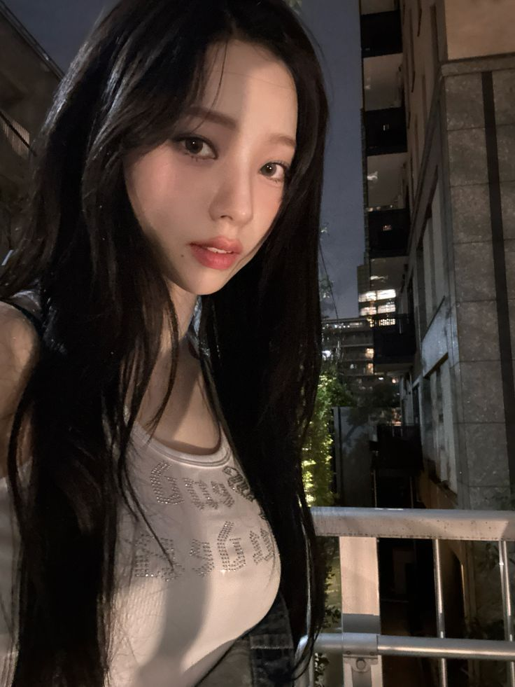
rinsoos: had to stop and serve on the balcony
jenaissante: UMMMM EXCUSE ME MAAM WHERE R U
39saku: okay ur actually kinda serving!!!!!!!!!!
chaechae: SOOO PRETTY!!!<3
ughnchae: @jenaissante shes at ur moms house
zuhazana: @ughnchae @rinsoos yo if thats true can u bring me those muffins she makes they are SOOO DAMN GOOD
rinsoos: @ughnchae @jenaissante shes right, thats where i am, sorry i had to tell her abt ur clinginess recently
rinsoos: @zuhazana no i ate them all MUAHAHAHA
NEW POST
minjibear
 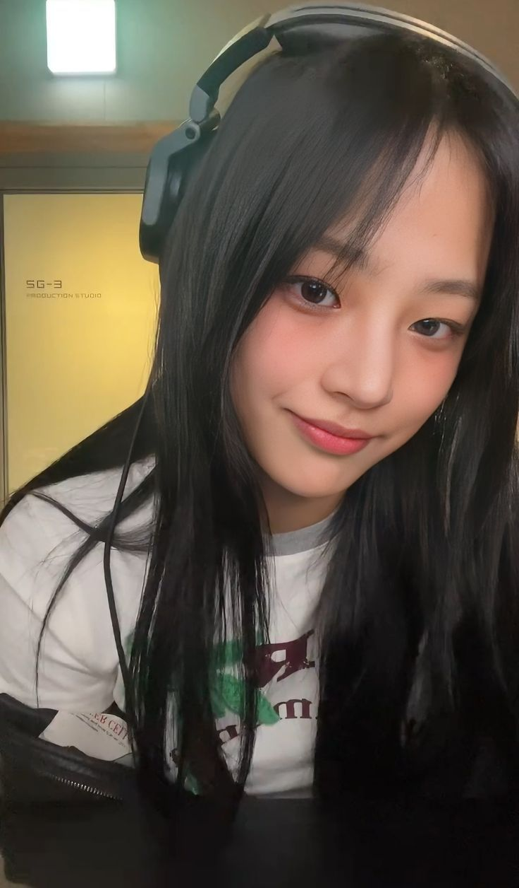
minjibear: GOOD NIGHT EVERYBODY (theres two meanings there)
puppyelle: i think this means minji had a good time
hanpham: HEHEHEHE I COULD TELL
meowrin: @hanpham wait what do u mean!! tell me
inhye: @hanpham ME TOO
minjibear: @puppyelle i did!

The next day rolled around like all of the others. Although Soorin implied she had nothing to do the next day when she was with New Jeans, that wasn't exactly true. A part of her just didn't want to leave yesterday - for a few reasons. In reality, she and the girls had filming today for their next comeback. It was what brought her to now, where she was sitting in one of the filming chairs on the sidelines, watching as Sakura was filming her solo scenes.
The set was buzzing with energy, a chaotic symphony of lights, cameras, and the occasional shouted direction. The sleek, industrial backdrop glimmered under the harsh glow of stage lighting, its sharp edges contrasting with the glittering costumes the girls wore.
Soorin leaned against a prop railing, her legs crossed and one hand loosely gripping a water bottle. Her eyes traced the movements of the crew as they adjusted the lighting for the next shot. The steady hum of activity should have been grounding, but her thoughts were far from the set.
She hadn't slept well.
The late night with New Jeans lingered in her mind like a shadow, her conversation with Minji replaying over and over. She tried to shake it off, but the weight of it pressed against her chest like an unanswered question.
"Soorin," Yunjin's voice sliced through her thoughts, sharp and direct.
She turned, finding Yunjin standing a few feet away, arms crossed and an eyebrow raised. The faint sheen of sweat on her brow glimmered under the stage lights, a testament to the intensity of the choreography they'd just wrapped.
"What's up?" Soorin asked, her tone neutral as she lifted the bottle to her lips.
Yunjin stepped closer, her gaze unwavering. "You got in late last night."
Soorin's hand faltered slightly, the bottle lowering as she blinked at Yunjin. "Yeah. So?"
"So," Yunjin echoed, her voice laced with suspicion, "where were you?"
Soorin shifted her weight, her grip tightening on the bottle. "Does it matter?"
"It does if you're sneaking around," Yunjin countered, her tone growing sharper.
The words stung, and Soorin straightened, her posture stiffening. "I wasn't sneaking around."
"Then what were you doing?" Yunjin pressed, her voice rising just enough to turn a few heads nearby.
Soorin glanced around, her cheeks flushing as she leaned in closer to Yunjin, her voice low but edged with irritation. "Why do you care?"
"Because you're acting weird," Yunjin shot back, her brows furrowing. "And I know when something's off with you."
"There's nothing off," Soorin replied, her tone icy as she turned away, pretending to focus on a group of staff adjusting the camera equipment.
Yunjin scoffed, stepping into her line of sight. "Don't pull that with me. I know you, Soorin. You don't just disappear for no reason."
"I don't owe you an explanation," Soorin snapped, the heat in her voice surprising even herself.
Yunjin's jaw tightened, her arms dropping to her sides as she took a half step closer. "I'm just trying to look out for you."
"Well, maybe I don't need you to," Soorin retorted, her voice quieter now but no less sharp.
The air between them crackled with tension, the hum of the set around them fading into the background.
"Fine," Yunjin muttered, her tone clipped as she turned on her heel. "Do whatever you want."
Soorin watched her go, her chest tight with a mix of anger and guilt. She let out a shaky breath, her fingers curling around the bottle as she leaned back against the railing.
"You okay?" Chaewon's voice broke the silence, her presence calm and steady as she approached.
"Yeah," Soorin lied, her gaze fixed on the floor. "Just tired."
Chaewon studied her for a moment, then nodded, her tone gentle. "Let me know if you need a break."
Soorin nodded, grateful for the reprieve but no less unsettled.
The girl stayed rooted onto the chair even as the crew called the girls back into position. Her fingers tightened around the water bottle, her knuckles white against the translucent plastic. The noise of the set buzzed in her ears, but it felt distant, like she was underwater.
Why did she have to push like that?
Her chest still burned with the lingering sting of Yunjin's words. Soorin wasn't naive—she knew Yunjin cared, maybe even more than she let on. But that didn't make the interrogation any less frustrating.
I don't owe her anything, she told herself, but the thought rang hollow.
The truth was, part of her wanted to tell Yunjin. Not just about where she'd been, but about everything—the confusing mix of emotions she couldn't quite name, the way her chest tightened every time she thought of Minji.
But Yunjin's tone, the way her voice had risen with that edge of suspicion, made Soorin's defenses spike. Yunjin didn't trust Minji. That much was obvious.
Soorin sighed, running a hand through her hair as the crew started counting down for the next take. She needed to shake it off, at least for now.
On the other side of the set, Yunjin paced near the rows of equipment cases, her arms crossed tightly over her chest. Her jaw clenched as she replayed the argument in her head, each sharp word from Soorin digging deeper into her mind.
I don't owe you an explanation.
Yunjin stopped, her fingers curling into fists at her sides. She wasn't angry—not really. She was worried.
Worried about where Soorin had been, worried about why she was so secretive, worried about why the name Minji kept swirling in the back of her mind like a stormcloud.
She exhaled sharply, leaning against one of the equipment cases and dropping her head into her hands.
"Everything okay?" Kazuha's voice broke through her thoughts, light but tinged with curiosity.
Yunjin straightened, forcing a shrug as she looked at her teammate. "Fine. Just... Soorin's being difficult."
Kazuha raised an eyebrow, leaning against the case beside her. "She seems off today. Did something happen?"
"Not really," Yunjin muttered, though the words felt like a lie. "She just... won't let anyone in."
Kazuha tilted her head, her expression softening. "Maybe she's not ready. You know how she can be. She'll talk when she feels like it, you know, she's got a lot going on with figuring herself out right now."
"I know, it's just... I'm not sure she will, it's like she doesn't trust me anymore," Yunjin admitted, her voice quieter now.
Kazuha frowned, watching her carefully. "You care about her a lot, huh?"
Yunjin's chest tightened, but she nodded. "Yeah. I just don't want her getting hurt, you know? I'm sure it has to do with Minji, that girl just gives me a bad vibe."
Kazuha smiled faintly, her tone gentle. "Just give her space, Yunjin, sometimes that's all people need. Don't worry about Minji, Soorin's smart, she'll know if something is off."
Yunjin sighed, nodding reluctantly. But as Kazuha wandered off, her words didn't bring the comfort Yunjin had hoped for.
Because deep down, Yunjin couldn't shake the feeling that Minji was at the center of all this—and that she was losing Soorin to something she didn't understand.
Chapter Sixteen
The dance studio was quiet except for the faint hum of the air conditioning and the soft scuff of Minji's sneakers against the polished floor. She had come early for practice, hoping to clear her head with a few extra drills, but the routine felt hollow today.
She paused mid-step, hands on her hips as she stared at her reflection in the mirror. The girl staring back looked calm, composed—a picture-perfect leader. But beneath the surface, her thoughts were anything but steady.
Her mind kept circling back to the night before.
The balcony.
The way Soorin's voice had softened when she told Minji she didn't have to be scared. The way her presence felt steady, grounding, even as Minji's chest tightened with emotions she couldn't name.
Minji exhaled sharply, running a hand through her hair. Why does she make me feel like this?
It wasn't like she hadn't been close to people before. She had her members, her family, and a small circle of friends she trusted. But this was different.
With Soorin, there was a pull—an undeniable force that made her want to be near her, even when her own thoughts told her to keep her distance.
Her gaze dropped to her sneakers, her chest tightening. What am I even feeling?
She tried to break it down, to dissect the swirl of emotions into something manageable. Admiration? Sure, she admired Soorin's talent, her quiet confidence. Curiosity? Absolutely—Soorin had layers, complexities that Minji couldn't help but want to uncover.
But it wasn't just that.
It was the way her chest ached when she saw Soorin smile. The way her thoughts strayed to her even in the middle of practice. The way her words felt heavier, more significant, when Soorin was the one listening.
Minji straightened, shaking her head as if to clear it. This wasn't her. She wasn't the type to get caught up in feelings—especially not ones that felt this... romantic.
Her heart stuttered at the word, and she immediately pushed it aside. She couldn't afford to think like that, not when the consequences loomed so large.
If her members found out, what would they say? What would the public say if something ever slipped?
And yet...
Minji's grip on the barre tightened. What if she feels it too?
The thought made her chest tighten again, a mix of hope and fear battling for dominance.
Before she could spiral further, the studio door creaked open. Minji glanced up, her composure snapping back into place as Hanni stepped inside, her energy as bright as ever.
"Hey, you're early," Hanni remarked, tossing her bag onto the bench.
"Needed some extra practice," Minji replied evenly, her voice calm and controlled.
Hanni tilted her head, studying her for a moment. "You okay? You've been a little... off lately."
Minji forced a small smile. "I'm fine. Just focused."
Hanni didn't look convinced but didn't press further, instead launching into a story about a funny moment during their last shoot.
Minji nodded along, her expression calm, but her thoughts were elsewhere.
Even as she forced herself back into the routine of practice, the weight of her connection with Soorin lingered—a quiet but unshakable presence she couldn't ignore.
Not even an hour later, the New Jeans rehearsal room was alive with motion. Hanni and Hyein were locked in an exaggerated dance battle near the mirrors, their laughter filling the space as Haerin filmed them on her phone. Danielle sat cross-legged on the floor, tinkering with their playlist, her bright energy like a sunbeam cutting through the room.
Minji leaned against the far wall, arms crossed as she watched the chaos unfold. Normally, she'd be in the thick of it—correcting Hanni's form or teasing Haerin for her deadpan commentary. But today, her head wasn't in it.
"Minji, you're being boring," Hanni declared, spinning on her heel to face her. "Are you really sure you're good?"
"Yup," Minji replied, the word slipping out automatically.
"Yeah, no," Danielle interjected, turning to her with a skeptical smile. "We've all noticed. You're too quiet today, and that's saying something."
"I'm fine," Minji insisted, straightening and stepping toward the group. "Just tired."
"Hmm," Hanni hummed, her gaze narrowing playfully. "I don't believe you. Is it boy trouble? Wait—girl trouble?"
Minji froze, the question hitting a little too close to home. "Hanni, stop," she said sharply, her tone firmer than intended.
The room fell silent for a beat, all eyes turning to her.
"Whoa," Hanni said, holding up her hands in mock surrender. "Sorry! I was just messing around."
Minji exhaled, forcing her shoulders to relax. "It's fine," she murmured, glancing toward the mirror as if to avoid their gazes.
Haerin, ever perceptive, tilted her head. "You sure you're okay?"
"Yeah," Minji said, nodding. "I just didn't sleep well."
Hyein plopped onto the floor beside Danielle, her expression curious. "Is this about Soorin?"
Minji's heart stuttered, but she kept her face neutral. "Why would it be about her?"
Hyein shrugged, smirking faintly. "You invited her to hang out last night, and now you're acting weird. Just connecting the dots."
"I'm not acting weird," Minji retorted, her tone cool but defensive.
"Minji, you never invite people outside our group to hang out," Danielle pointed out, her voice light but matter-of-fact. "It's a big deal, and you know it."
Minji hesitated, her gaze dropping to the floor. "I just thought it would be good to... get along better," she said carefully. "That's all."
The others exchanged glances, clearly unconvinced but not pressing further.
"Well, I think it's nice," Hanni said finally, her tone softening. "Soorin's cool. It's good you're trying."
Minji nodded, grateful for the shift in tone.
"Alright," Hyein declared, clapping her hands together. "Back to the dance battle! Minji, you're judging this round."
"Fine," Minji agreed, her lips twitching into a small smile as the focus shifted away from her.
But even as she immersed herself in their playful antics, the weight of her thoughts lingered, quiet but ever-present.

The halls of the Hybe building were quiet in the late afternoon, the hum of fluorescent lights and the occasional muffled sound of distant chatter the only accompaniment to Minji's footsteps. She found herself outside the Le Sserafim practice studio before she fully registered the decision to come here.
She hesitated, her hand hovering over the door handle.
What was she even doing?
Shaking her head slightly, she pushed the door open. The studio was empty except for a few stray water bottles on the benches and the faint smell of sweat lingering in the air. The polished floor gleamed under the overhead lights, and the silence felt heavier than she'd expected.
Minji stepped inside, her gaze sweeping over the room. The Le Sserafim members weren't there, and neither was Soorin.
Her eyes landed on the pile of bean bags in the corner, and a flash of color caught her attention. Walking closer, she noticed a familiar hoodie draped across one of them—a simple black one with a small, embroidered design near the pocket.
Minji crouched, picking it up. It was unmistakably Soorin's; the slightly worn cuffs and faint scent of her favorite floral perfume gave it away immediately.
A faint smile tugged at Minji's lips as she sat down on the bean bags, the hoodie still in her hands. "You really need to keep track of your stuff," she murmured, the words directed more at the absent Soorin than herself.
She pulled out her phone, unlocking it with a swipe. For a moment, she hesitated, her thumb hovering over Soorin's contact. Was this too much?
But then, a playful thought crossed her mind, and before she could second-guess herself, she snapped a quick picture of herself with the hoodie draped over her shoulders.
minjibear: you really like leaving things behind, huh?
She stared at the screen for a moment after hitting send, her heart pounding in her chest. What if Soorin thought it was weird? What if she didn't reply?
Her phone buzzed almost immediately.
rinsoos: lol it's a habit. did I leave that in the studio??
minjibear: yep. found it on the bean bags. maybe I should just start collecting your stuff at this point.
rinsoos: pls don't, I'd never see it again.
Minji chuckled softly, leaning back into the bean bags. The conversation felt natural, light, and for once, the knot in her chest loosened.
minjibear: can't make any promises.
rinsoos: u wouldn't dare.
Minji smirked, her fingers hovering over the keyboard. This was her chance—an opening she couldn't ignore.
minjibear: so, what are you up to tonight?
rinsoos: not much. why?
Minji hesitated for a fraction of a second before typing:
minjibear: thought we could hang out again. if you're not too busy leaving your stuff in random places.
The reply came quickly, and Minji's chest fluttered as she read it.
rinsoos: haha sure, why not. where?
Minji grinned, her fingers flying over the screen.
minjibear: I'll text you the details. Be ready.
Sliding her phone back into her pocket, Minji stood, the hoodie still in her hands. For the first time in a while, she felt a spark of excitement she couldn't quite explain.
Whatever this was with Soorin, it was unlike anything she'd ever experienced. And tonight, she was ready to take another step into the unknown.
Chapter Seventeen
The New Jeans dorm was quieter than Soorin had expected. The faint hum of the heater filled the air, blending with the soft glow of the evening light that seeped through the windows. She adjusted the strap of her bag, her nerves coiling tighter as she stood at the door.
After a moment's hesitation, she pressed the doorbell.
Footsteps approached, the soft thuds growing louder until the door clicked open. Minji appeared, leaning against the doorframe, her calm demeanor masking the slight tension in her posture.
"You made it," Minji remarked, her voice gentle yet steady as her eyes met Soorin's.
"Yeah," Soorin responded quickly, her voice faltering just enough to make her clear her throat. "Thanks for inviting me."
Minji nodded toward the hallway, stepping aside. "Come in."
The warm air inside was a welcome contrast to the chill of the night, and the faint scent of vanilla candles lingered, mixing with the comforting smell of something savory. The space was tidy but lived-in, with the kind of charm that only came from people making it their own.
"Everyone else is out," Minji informed her as she led the way toward the living room. Her hands brushed her sides, an almost imperceptible movement that hinted at her own unease.
"Is it just us, then?" Soorin inquired, her voice softer now as she followed.
Minji glanced over her shoulder, offering a faint smile. "Hope that's okay."
Soorin settled onto the edge of an armchair, her hands clasped tightly in her lap. Normally, she was the picture of confidence, always the first to steer a conversation. But tonight, her nerves betrayed her.
"It's fine," she muttered, then quickly added, "I mean, yeah, it's fine."
A small laugh escaped Minji's lips, and she leaned back into the couch, her movements relaxed despite the faint crease in her brow. "You're nervous," she observed, her tone laced with quiet amusement.
"I'm not," Soorin countered, the words spilling out too quickly to sound believable.
"You always seem so in control," Minji remarked, tilting her head as her eyes lingered on Soorin. "It's kind of surprising to see you like this."
Soorin's cheeks burned under Minji's gaze, and she looked away, her fingers fidgeting with the hem of her sleeve. "I'm just tired," she mumbled, her voice barely above a whisper.
Minji watched her for a moment, her expression softening. "That makes sense," she replied, her voice low but filled with understanding. "It's hard to keep up with everything sometimes."
Soorin glanced up, surprised by the sincerity in her tone. "Yeah," she admitted, the word heavy with unspoken meaning.
Minji leaned forward slightly, her elbows resting on her knees. "You seemed distracted earlier," she commented, her gaze unwavering.
Soorin's chest tightened at the words, her thoughts flashing back to Yunjin and the fight that had left her feeling raw. "It's nothing," she deflected, her fingers curling tighter around the fabric of her hoodie.
Minji's lips pressed into a thin line, but she didn't push. "You don't have to explain if you don't want to," she offered gently. "But I'm here if you need to talk."
The quiet vulnerability in Minji's voice made Soorin's heart ache. The offer wasn't just polite—it felt genuine, and that sincerity stirred something deep within her.
"Thanks," Soorin murmured, her gaze dropping to her lap.
The silence that followed was thick, charged with an unspoken tension that neither of them seemed ready to acknowledge.
Minji's eyes flickered toward Soorin's hands, noticing the way they twisted nervously in her lap. Something about the sight made her chest tighten, a swirl of emotions she couldn't name—curiosity, confusion, and something that felt dangerously close to longing.
Soorin's own thoughts were a storm. She wasn't like this with anyone—not the members of her group, not the strangers she met in passing. But Minji wasn't just anyone.
Her heart pounded as she glanced at Minji, her lips parting to speak but closing again when she caught Minji's gaze. It was steady, searching, and it made her chest flutter in a way she wasn't ready to unpack.
"You're quiet," Minji remarked, her voice breaking the silence.
"Sorry," Soorin replied quickly, her words tumbling over each other.
Minji's lips curved into a faint smile. "Don't be. I kind of like it."
The air between them grew heavier, the unspoken tension crackling like static.
Soorin's thoughts raced, her chest tightening as she tried to make sense of the moment. Was Minji sending signals? Or was this just another layer of the mystery that surrounded her?
Minji cleared her throat, standing abruptly. "I'll grab us something to drink," she offered, her voice a touch too casual as she turned toward the kitchen.
"Okay," Soorin murmured, watching her go.
The room felt emptier in her absence, the warmth of Minji's presence lingering like an echo. Soorin let out a shaky breath, running a hand through her hair.
By the time Minji returned, holding two bottles of soda and a bowl of chips, the charged atmosphere had settled slightly, though the undercurrent of something deeper remained.
Minji set the drinks and chips on the coffee table with a soft clink, her movements deliberate as though she were trying to fill the silence with action. She took her place on the couch again, this time a little closer than before, leaning casually against the armrest.
Soorin reached for one of the bottles, twisting the cap off with slightly trembling fingers. She hoped Minji didn't notice, but the way her gaze flickered to Soorin's hands made it clear she had.
"You don't have to be so nervous," Minji commented, her voice light but carrying an undertone of curiosity.
"I'm not nervous," Soorin lied, taking a sip of the soda and wishing the coolness of it would calm her.
Minji tilted her head, her lips quirking into a faint smirk. "You sure about that?"
Soorin's cheeks warmed under the scrutiny, and she busied herself with placing the bottle back on the table. "I'm sure," she mumbled, her voice quieter than she intended.
Minji leaned forward slightly, resting her elbows on her knees as she studied Soorin. Her expression was softer now, almost hesitant, but her eyes carried that same intensity that made Soorin's heart race.
"It's interesting," Minji began, her tone thoughtful. "You're usually so composed. I've seen you handle interviews, crowds, even tough choreography without flinching. But here you are, fidgeting over a soda bottle."
Soorin laughed nervously, running a hand through her hair. "I guess you just have that effect on people."
Minji blinked, her smirk fading as her expression turned unreadable. "Do I?"
The question hung in the air, heavier than it should have been. Soorin froze, unsure of how to respond, her thoughts tangling into a mess of emotions she couldn't untangle.
Minji leaned back again, crossing her arms as her gaze lingered on Soorin. "You're different too, you know," she admitted, her voice quieter now.
Soorin's brows furrowed. "What do you mean?"
Minji hesitated, her eyes dropping to the bottle in her own hands. She turned it absently, her fingers tracing the condensation on the glass. "You're just... different," she repeated, her voice almost a whisper.
Soorin's chest tightened, her breath catching in her throat. She wanted to ask what Minji meant, wanted to push for clarity, but the vulnerability in her voice made her hesitate.
"I think that's a good thing," Minji added, her lips curling into the faintest smile.
The words sent a wave of warmth through Soorin's chest, but they also left her more uncertain than before. Was Minji just being kind? Or was there something more to it?
Minji shifted in her seat, her gaze flicking back to Soorin. "Do you ever think about... what people expect from us?"
The question caught Soorin off guard. "What do you mean?"
Minji's shoulders tensed slightly, and she looked away, her fingers gripping the bottle more tightly. "The way we're supposed to act. What we're supposed to say. How we're supposed to be. Doesn't it ever feel... suffocating?"
Soorin nodded slowly, her voice soft. "Yeah, it does."
Minji glanced at her, her expression a mix of relief and apprehension. "Sometimes I wonder... if I could ever just be myself without worrying about what everyone else thinks."
"You can," Soorin replied without hesitation, her voice steadier now. "At least, with me."
Minji's eyes widened slightly, and for a moment, the mask she always wore seemed to slip. Her gaze searched Soorin's, as if looking for reassurance, for something solid to hold onto.
The air between them grew heavier, the silence stretching into something fragile yet electric.
Soorin's heart pounded as she debated whether to say more. She could feel the pull between them, the unspoken connection that neither of them seemed ready to name.
Minji opened her mouth to speak, but before she could, her phone buzzed on the table, breaking the moment. She picked it up, glancing at the screen before letting out a quiet sigh.
"The others are on their way back," she informed Soorin, her tone carefully neutral.
Soorin nodded, her chest tightening as the spell between them broke. "Right."
Minji set the phone back down, her fingers lingering on it for a moment before she looked at Soorin again. "We should hang out again. Just the two of us."
The words made Soorin's breath hitch, and she met Minji's gaze, searching for any hint of hesitation. But Minji's expression was calm, her eyes steady.
"Yeah," Soorin agreed, her voice soft but certain.
The sound of the front door opening in the distance pulled them back to reality, the lively chatter of the returning New Jeans members spilling into the dorm.
Minji stood, smoothing the fabric of her sweatshirt. "We should join them."
"Right," Soorin repeated, following her lead.
But as they moved toward the living room, the charged tension between them lingered like an invisible thread, unbroken and undeniable.
The sound of the front door swinging open and muffled chatter echoed through the hallway. Minji and Soorin exchanged a brief glance, the charged moment between them retreating into the background as footsteps approached.
Hanni entered first, her bright energy filling the room like a gust of wind. She stopped in her tracks when her eyes landed on Soorin, a wide grin spreading across her face.
"Well, well, look who's here!" Hanni exclaimed, clapping her hands together. "Soorin, hanging out with Minji? Did I miss some groundbreaking announcement?"
Soorin shifted slightly, her nerves sparking at the teasing tone, but she forced a small smile. "Hi, Hanni."
Behind her, Danielle peeked into the room, her eyes lighting up as she caught sight of Soorin. "No way! Soorin, you're here?"
Haerin followed, carrying a bag of snacks and giving Soorin a faint nod of acknowledgment, her usual calm demeanor unshaken. "Didn't expect to see you here," she commented, setting the bag down on the coffee table.
"She's just full of surprises tonight," Hanni teased, plopping down on the couch beside Minji. She nudged Minji with her elbow, a playful grin on her lips. "Didn't think you'd be the one to get Soorin to come over. What kind of sorcery did you pull, leader-nim?"
Minji rolled her eyes, but the faintest hint of a smile tugged at her lips. "I didn't pull anything. I invited her, and she came. Simple as that."
"Hmm," Hanni hummed, clearly unconvinced. "You've been keeping secrets, Minji. I thought we were friends."
Minji sighed, leaning back into the couch. "Hanni, don't start."
Hanni laughed, turning her attention to Soorin. "Well, whatever she did to convince you, I'm glad you're here. We've been trying to steal you from Le Sserafim for ages."
Soorin chuckled softly, her tension easing slightly under Hanni's warm humor. "I'm not so easy to steal."
Danielle gasped dramatically, clutching her chest. "Soorin's playing hard to get! Minji, you better step up your game."
"Danielle," Minji warned, her voice carrying a sharp edge, but her expression remained calm.
The teasing seemed to settle into the air like a natural rhythm, with the New Jeans members flitting around the room as they unpacked snacks and settled into their usual spots.
"So, what were you two doing while we were out?" Hanni asked, plopping herself into a beanbag and tearing open a bag of chips.
"Just talking," Minji replied evenly, though her gaze flicked briefly to Soorin.
"Talking, huh?" Hanni mused, her eyes narrowing playfully. "Anything juicy we should know about?"
"Nope," Minji stated firmly, cutting off the teasing before it could spiral further.
Soorin bit the inside of her cheek, her gaze shifting between the girls. The casual dynamic was a stark contrast to the charged tension she'd felt with Minji just moments ago, and the shift left her both relieved and slightly off balance.
Haerin leaned back against the couch, her phone in hand as she lazily scrolled through something. "Well, whatever you talked about, it's good to see you two getting along. I thought Minji hated you."
"Haerin!" Danielle gasped, smacking Haerin's arm lightly.
"What? She did!" Haerin replied, unfazed.
Minji sighed, pinching the bridge of her nose. "I didn't hate her."
"Well, you sure didn't like her," Hanni quipped, earning a sharp glare from Minji.
"That's not true," Minji muttered, her voice quieter now.
Soorin's chest tightened at the words, her mind swirling with questions. What had changed? Why had Minji reached out to her now?
"Well, whatever the case," Danielle chimed in, plopping into a seat on the floor, "this is cute. Maybe we'll get a Minji-Soorin bestie era after all."
"Maybe," Soorin replied softly, her voice barely audible over the chatter.
Minji glanced at her, her expression softening for a moment before she turned her attention to the snacks on the table.
As the New Jeans members settled into their usual rhythm, Soorin found herself drawn into their easy dynamic. The energy in the room was vibrant, yet it felt grounded, like each of them fit into a puzzle that never stopped shifting but always clicked.
"Soorin, pick a snack," Danielle urged, nudging a colorful assortment of bags toward her. "We have way too much, as usual."
"Not my fault," Haerin muttered from her spot on the couch, popping a chip into her mouth. "You bought half the store."
Soorin reached for a small bag of pretzels, smiling faintly. "This is fine. Thanks."
Danielle's face lit up like she'd won a prize. "Excellent choice. A woman of taste!"
Minji, seated on the far end of the couch, leaned back with her arms crossed, observing the interaction with an unreadable expression. Her eyes flicked to Soorin every now and then, a quiet intensity behind them that made Soorin's chest flutter each time.
Hanni, ever the instigator, clapped her hands together. "Alright, we need a game. Something fun. Something chaotic."
"No," Minji interjected immediately, her tone flat.
"Yes," Hanni countered, already pulling a deck of cards from the table. "Too late. Majority rules."
"We didn't vote," Minji deadpanned, arching an eyebrow.
"Don't need to," Danielle chimed in, snatching the cards from Hanni. "We all know I'm the real leader here."
The room burst into laughter, including Soorin, who relaxed slightly under the warmth of their humor. Even Minji's lips quirked upward for a fleeting moment before she sighed and leaned forward.
"What's the game?" Minji asked reluctantly.
"Something simple," Hanni declared, grabbing a handful of chips. "We'll do a quickfire Q&A. You have to answer the question honestly, no matter how embarrassing."
"I'm out," Haerin announced without missing a beat, her attention already drifting back to her phone.
"Coward," Hanni teased, tossing a chip at her.
"Don't care," Haerin replied, catching the chip and eating it.
The game kicked off, with the questions ranging from harmless to absurd. Soorin tried to keep up, her nerves easing slightly as the focus shifted to the others.
"Alright, Soorin's turn!" Hanni exclaimed, her grin widening.
Soorin blinked, freezing slightly under the sudden attention. "Uh... okay."
Hanni leaned forward, her elbows resting on her knees. "If you could only have one member of Le Sserafim on a deserted island with you, who would it be?"
The room fell quiet, everyone's gaze fixed on Soorin.
"That's random," Soorin muttered, shifting slightly in her seat.
"That's the point," Hanni teased, her voice lilting with mischief.
Soorin's mind raced, her thoughts immediately landing on Yunjin. Of course it's Yunjin. But the memory of their fight made her chest ache, and she hesitated, her fingers tightening slightly around the bag of pretzels in her lap.
"Yunjin," she answered softly, her voice almost hesitant.
Her cheeks flushed pink as she said it, and she quickly dropped her gaze to the floor, wishing the moment would pass.
Danielle clapped her hands together, leaning in with a grin. "Yunjin? Aww, that's so sweet. Is she your survival buddy or something?"
"She's my best friend," Soorin murmured, her voice quieter now.
Hanni's eyes gleamed with curiosity. "Even after the way she bosses you around?"
Soorin laughed softly, though it sounded hollow. "She means well. And... she's always there when I need her."
Minji, who had been leaning casually against the armrest of the couch, stiffened slightly at Soorin's answer. She averted her gaze, her lips pressing into a thin line as she focused on a nearby stack of cards.
"Fair enough," Hanni quipped, throwing a handful of chips into her mouth.
As the attention shifted away from her, Soorin exhaled quietly, her chest tightening. Her thoughts drifted back to Yunjin, to the sharpness in her tone during their fight, to the way her words had cut deeper than they should have.
She really is my best friend, Soorin thought, her stomach twisting with guilt.
Minji cleared her throat, pulling Soorin's attention back to the room. "Alright, let's move on," she suggested, her voice steady but carrying an undercurrent of something restrained.
The others agreed, the game continuing with its usual teasing energy. But Minji's expression remained guarded, her eyes flicking toward Soorin briefly before settling elsewhere.
Soorin noticed but didn't have the energy to unpack it. Her heart still felt heavy from the thought of Yunjin, from the realization that no matter how much they clashed, no one understood her quite like Yunjin did.
Chapter Eighteen
The dorm was eerily quiet when Soorin stepped inside, the familiar warmth of the space doing little to settle the storm of thoughts swirling in her head. The dim hallway lights cast long shadows on the walls as she padded softly toward her room, but her feet slowed as she passed Yunjin's door.
The memory of Minji's expression when she mentioned Yunjin played on repeat in her mind—the faint tightening of her jaw, the way her gaze had shifted away. And now, the thought of Yunjin, the best friend who had always been there for her in her own brusque, clumsy way, made Soorin's chest ache with guilt.
She stopped in front of the door, staring at the wooden surface as if it might give her the words she needed. Taking a deep breath, she raised a hand and knocked gently.
"Yunjin?" she called softly, her voice barely above a whisper.
For a moment, there was no response, and she thought maybe Yunjin was asleep. But then, faintly, she heard it: the soft strumming of a guitar, a melancholic melody accompanied by the quiet hum of a tune. The sound stopped abruptly, followed by the shuffle of movement.
The door opened a crack, and Yunjin's face appeared, illuminated by the faint glow of her bedside lamp. Her expression was unlike anything Soorin had ever seen on her—tired, almost sad, with none of her usual spark.
"Hey," Yunjin murmured, her voice subdued. She stepped back, opening the door wider without a word.
Soorin hesitated for a moment before stepping inside. The room was cozy, with a mix of posters on the walls and a guitar resting on the bed. The faint scent of lavender lingered in the air. Yunjin motioned for her to sit, and Soorin perched herself on the edge of the bed, fiddling nervously with the hem of her hoodie.
Yunjin sat down beside her, the mattress dipping slightly under their weight. The silence between them felt heavy, but Soorin knew she had to break it.
"I'm sorry," she began, her voice trembling slightly. "For earlier. For snapping at you."
Yunjin didn't respond immediately, her gaze fixed on the floor.
"I don't want us to ruin our friendship," Soorin continued, her chest tightening. "Over anything or anyone."
At this, Yunjin's gaze flickered toward her, a faint crease forming between her brows.
"You're my best friend," Soorin said, her voice softening. "You've always been there for me. I love you, Yunjin. Like the sister I never had."
Yunjin stiffened beside her, her lips pressing into a thin line. She turned her head slightly, her gaze unreadable as she looked at Soorin.
"Sister?" she echoed, her voice low but carrying a weight that made Soorin's chest ache.
The question hung in the air, thick with meaning that Soorin wasn't sure she understood.
She frowned, leaning closer. "Yunjin, I—"
Before she could finish, Yunjin shook her head, a faint, bitter smile tugging at her lips. "It's nothing."
"No, it's not," Soorin insisted, her hand brushing against Yunjin's arm. "Talk to me."
Yunjin's gaze softened at the touch, her shoulders sagging slightly as she let out a shaky breath. "I just... care about you. A lot."
"I know," Soorin replied gently. "And I care about you too."
The words felt right, but the unspoken tension between them lingered, unresolved and heavy.
Yunjin let out a quiet laugh, though it lacked her usual brightness. "You're impossible, you know that?"
Soorin managed a small smile, leaning her head against Yunjin's shoulder. "And you're stubborn."
The two of them sat in silence, the weight of their earlier argument dissolving into something softer. But beneath the surface, both of them knew there were things left unsaid, questions neither of them was ready to ask.

The morning sun filtered through the curtains of the dorm's living room, casting golden light onto the plush furniture. The smell of freshly brewed coffee drifted from the kitchen, where Chaewon was leaning against the counter, scrolling through her phone while sipping from a steaming mug.
Soorin emerged from her room, her steps quiet as she tugged at the hem of her oversized hoodie. She felt lighter than she had the night before, though the echoes of her conversation with Yunjin still lingered at the edges of her thoughts.
Chaewon glanced up, raising an eyebrow. "Morning, early riser. Didn't expect to see you out before noon."
Soorin managed a faint smile, heading to the fridge to grab a water bottle. "I didn't sleep in for once. Shocking, I know."
Chaewon chuckled softly, setting her mug down. "You and Yunjin good now?"
Soorin froze briefly, her hand tightening on the water bottle. "What do you mean?"
"Eunchae mentioned you two weren't exactly getting along yesterday," Chaewon replied, her tone casual but curious. "Figured you'd work it out. You always do."
Soorin nodded slowly, twisting the cap off the bottle. "Yeah. We talked last night."
"And?" Chaewon pressed, folding her arms.
"And we're fine," Soorin replied, her voice firmer now.
Chaewon studied her for a moment, then nodded. "Good. We need you two on the same page, especially with the schedule we have this week."
Soorin exhaled, taking a sip of water as she leaned against the counter.
The dorm began to stir as the other members woke up one by one. Eunchae wandered into the kitchen with a yawn, rubbing her eyes as she grabbed a slice of toast. Kazuha and Sakura appeared shortly after, both of them moving with the kind of languid grace that made everything they did seem effortless.
"Yunjin's still asleep?" Kazuha asked, glancing around.
"Probably," Sakura replied, smirking. "She was strumming that guitar of hers until way too late."
"She's awake," Soorin interjected quietly.
The others glanced at her, their curiosity evident, but no one pressed further.
When Yunjin finally emerged, her usual energy seemed dimmed, though she still managed a crooked grin as she joined the group. Her eyes met Soorin's briefly, and there was a flicker of something—an acknowledgment, a truce—that passed between them.
As the group began discussing their plans for the day, the tension from the previous day felt like a distant memory. But for Soorin and Yunjin, it was clear that their dynamic had shifted, subtle but undeniable.
The rehearsal studio was already buzzing with energy when the six members of Le Sserafim arrived, their footsteps echoing faintly against the polished floors. The crew had set up the space to mimic parts of the Crazy music video set—a mix of industrial chic and neon chaos that perfectly matched the song's edgy vibe.
Chaewon led the group, her clipboard in hand as she scanned their packed schedule. "Alright, we've got choreography first, then vocals. Let's nail this so we can actually get out of here on time for once."
"Optimistic of you," Sakura teased, setting her bag down by the wall.
"Manifesting," Chaewon shot back with a grin.
Soorin quietly placed her bag beside the others, her gaze drifting to the mirrors lining the walls. She caught her reflection, her hair pulled back into a messy ponytail, and exhaled softly. The tension of the last few days still clung to her, but the rehearsal offered a chance to focus on something tangible.
"Alright, warm-ups," Chaewon instructed, clapping her hands to grab everyone's attention.
The group spread out, falling into a familiar rhythm as they stretched and loosened their muscles. Yunjin positioned herself near Soorin, her movements a little slower than usual.
"You good?" Yunjin asked under her breath, her voice low enough that the others wouldn't hear.
Soorin nodded, her eyes meeting Yunjin's briefly in the mirror. "Yeah. You?"
Yunjin's lips twitched into a faint smile. "Always."
It wasn't quite the Yunjin Soorin knew—brimming with confidence and quick to crack a joke—but it was a start.
When the music started, the room transformed. The heavy beat of Crazy filled the space, its relentless tempo driving the choreography. The moves were sharp, intricate, and demanding, requiring every ounce of focus the girls could muster.
"Again!" the choreographer called, clapping along to the beat.
Soorin wiped the sweat from her brow, her chest heaving as they reset for another run-through. The moves were tough, but they were beginning to feel like second nature after days of repetition.
"You're killing it, Zuha," Sakura remarked during a brief pause, watching as Kazuha effortlessly executed a spin that had tripped up the others earlier.
"Thanks," Kazuha replied with a small smile, her breathing steady despite the intensity of the routine.
"Let's all channel that energy," Chaewon interjected, her tone both encouraging and firm.
Soorin caught Yunjin's eye as they returned to their starting positions. There was a flicker of determination in Yunjin's expression, the kind that made her magnetic on stage.
"Focus, Soorin," Yunjin quipped, her voice carrying just enough of its usual playfulness to lighten the mood.
Soorin rolled her eyes but couldn't suppress a small smile.
By the time they transitioned to vocal practice, the air in the studio was heavy with sweat and effort. The girls gathered around the piano, their voices blending as they ran through harmonies and ad-libs.
Soorin found herself next to Yunjin again, their shoulders brushing as they leaned toward the sheet music.
"You're flat on the second line," Yunjin pointed out, her tone teasing but precise.
Soorin shot her a mock glare. "Thanks, coach."
"Anytime," Yunjin replied, smirking.
The playful exchange earned a glance from Chaewon, who raised an eyebrow but said nothing.
As the rehearsal wound down, Chaewon called for a group meeting, gathering the girls in a loose circle on the studio floor.
"We're in a good place," Chaewon began, her tone serious but hopeful. "The choreography's solid, the vocals are on point. Let's keep this energy going for the next few days. This is going to be one of our best comebacks yet."
The girls nodded, a collective sense of pride and anticipation filling the room.
"Also," Chaewon added, her gaze sweeping over them, "let's make sure we're supporting each other. The next few weeks are going to be tough, but we've got this."
Yunjin glanced at Soorin, her expression softening for a moment before she looked away.
Soorin felt the weight of that look, a silent acknowledgment that they were okay—for now.
Chapter Nineteen
The dorm buzzed with the usual morning commotion. The smell of freshly brewed coffee wafted through the small but cozy kitchen, blending with the faint sound of running water as Eunchae rinsed a bowl in the sink. Chaewon sat at the counter, flipping through her tablet while occasionally sipping her tea.
Soorin entered the room quietly, her oversized hoodie hanging loosely around her frame. She rubbed her eyes, her movements sluggish from the lack of sleep. Her thoughts were still entangled in the events of the previous night—the tension with Minji, the unspoken connection she felt but didn't fully understand, and the way Minji's expression had shifted when Yunjin's name came up.
"Morning," Chaewon greeted, her voice light but distracted as she scrolled through their schedule.
Soorin offered a small smile, grabbing a water bottle from the fridge. "Morning."
At the table, Yunjin leaned back in her chair, her arms crossed lazily over her chest as she balanced a half-eaten slice of toast in one hand. Her usual playful grin twitched at the corners of her lips, but there was a slight tightness in her posture, a flicker of something deeper in her eyes as she watched Soorin move around the room.
"You're up earlier than usual," Yunjin commented, her tone light but carrying a thread of curiosity.
Soorin shrugged, twisting the cap off her water bottle. "Didn't sleep much."
Yunjin quirked an eyebrow, leaning forward slightly. "Something on your mind?"
For a moment, Soorin hesitated, her grip on the bottle tightening. She could feel Yunjin's gaze on her, sharp and searching, and it made her chest tighten.
"Not really," she replied, her voice steady but not entirely convincing. "Just couldn't get comfortable."
Yunjin tilted her head, her lips curving into a faint smile that didn't quite reach her eyes. "Hmm. That's rare for you."
The words were casual, almost teasing, but they carried an edge that Soorin couldn't quite place. She glanced at Yunjin, catching the flicker of something in her expression before she looked away.
Before either of them could say more, Eunchae turned from the sink, wiping her hands on a towel. "Hey, Soorin, are you coming with us to the studio later, or do you have something else planned?"
Soorin blinked, startled by the sudden question. "What else would I have planned?"
Eunchae grinned, leaning her hip against the counter. "I don't know. Maybe you've got another rendezvou~."
"Why don't you just say you've been hanging out with New Jeans?" Kazuha asks blankly, mid bite of a piece of toast.
At the mention of New Jeans, Yunjin's grip on her toast tightened, her knuckles whitening slightly. She quickly masked it, taking a bite as if she hadn't heard.
Soorin's cheeks flushed faintly, and she laughed nervously. "Uh, I don't know, I don't even hang out with them much."
Kazuha raised an eyebrow, her grin widening. "Uh-huh. Sure. We're all just imagining you coming home at 4 AM all the time."
"Kazuha, leave her alone," Chaewon interjected, not looking up from her tablet.
"Fine, fine," Kazuha relented, tossing the towel onto the counter. "But you can't blame me for being curious. Soorin's mysterious these days."
Soorin rolled her eyes, but her lips twitched into a small smile. "I'm not mysterious."
"Right," Kazuha replied, drawing out the word playfully before wandering out of the kitchen.
As the room quieted again, Yunjin's gaze drifted back to Soorin. The faint blush on Soorin's cheeks, the way she fiddled with the cap of her water bottle—it all pointed to something, someone, occupying her thoughts.
Minji.
The realization made Yunjin's chest tighten, a sharp ache settling beneath her ribs. She wanted to brush it off, to focus on the easy rhythm of their friendship, but the weight of it was undeniable.
"So," Yunjin began, her voice casual as she leaned back in her chair again, "you and New Jeans seem to be getting along these days."
Soorin glanced at her, her brow furrowing slightly. "Yeah, I guess."
"That's new," Yunjin remarked, her tone light but with a faint edge.
Soorin's lips pressed into a thin line, and she shrugged again. "They're nice."
Yunjin nodded, her smile faint but forced. "Yeah, they are. Especially Minji, huh?"
Soorin froze briefly, her fingers stilling on the water bottle. "What's that supposed to mean?"
"Nothing," Yunjin replied quickly, her tone shifting to something softer. "Just an observation."
Soorin's chest tightened, and she shifted her weight uncomfortably. The room felt smaller, the air heavier.
Yunjin glanced away, guilt prickling at the edges of her thoughts. She didn't want to push Soorin away, didn't want to ruin the fragile balance of their friendship. But the jealousy was there, sharp and bitter, no matter how much she tried to ignore it.
"I'm happy for you," Yunjin murmured, her voice quieter now.
Soorin frowned, her gaze flicking to Yunjin. "Happy for what?"
"That you're... finding new people to connect with," Yunjin clarified, her eyes meeting Soorin's briefly before dropping to the table.
Soorin's heart ached at the words, at the faint vulnerability in Yunjin's voice that she rarely let show. "Yunjin, it's not like that."
Yunjin let out a quiet laugh, though it lacked its usual brightness. "Isn't it?"
Soorin opened her mouth to respond but found herself at a loss for words. The tension between them hung heavy in the air, unspoken but palpable.
Before either of them could say more, Chaewon stood, grabbing her mug. "Alright, enough staring contests. Let's get moving."
The interruption broke the moment, and Soorin exhaled softly, grateful for the reprieve. But as the group began gathering their things for the day, she couldn't shake the weight of Yunjin's words or the sadness lingering in her eyes.

The rehearsal studio was alive with sound—shoes squeaking against the polished floors, the heavy beat of Crazy reverberating through the room, and the occasional shout of encouragement from the choreographer.
Soorin wiped her forehead with the back of her hand, her breathing steady as she settled into the rhythm of the moves. The choreography was challenging, but she welcomed the focus it required. It was a distraction from the tangled mess of her thoughts.
"Again!" the choreographer called, clapping along to the beat.
The six members reset their positions, the mirrored walls reflecting their synchronized movements as they launched into the routine once more. Kazuha's spins were effortless, Sakura's lines sharp, and Chaewon's precision was unmatched.
Yunjin danced with her usual energy, her expressions dynamic and her movements fluid. But her focus wasn't entirely on the choreography. Out of the corner of her eye, she caught Soorin glancing at the edge of the studio where her phone rested on a towel.
As the music faded, the girls broke for water. Soorin walked to the side, grabbing her phone and twisting the cap off her water bottle. Her thumbs swiped across the screen, and a small, involuntary smile tugged at her lips.
Yunjin, standing nearby and leaning against the barre, noticed immediately.
"What's so funny?" Yunjin asked casually, tilting her head as she grabbed her own water bottle.
Soorin looked up, startled, her cheeks flushing faintly. "Nothing."
Yunjin arched an eyebrow, her tone light but probing. "Nothing doesn't usually make people smile at their phones."
Soorin hesitated, glancing back at the screen before locking it and slipping it into her pocket. "Just a message."
Yunjin's eyes narrowed slightly, her smile faltering. "From?"
"No one," Soorin replied quickly, her tone sharper than she intended. She took a long sip of water, avoiding Yunjin's gaze.
But Yunjin didn't miss the way Soorin's lips twitched upward again, the faintest hint of amusement lingering in her expression.
The practice resumed, but Yunjin's mind was elsewhere. Her steps felt heavier, her movements less fluid as she replayed the moment over and over.
Meanwhile, Minji sat cross-legged in the New Jeans lounge, her phone resting on her lap as she scrolled through her messages. Her members were scattered around the room, chatting and snacking, but her focus was entirely on her screen.
minjibear: Don't work too hard. You've gotta save some energy for our next hangout.
Minji stared at the message for a moment before hitting send. She exhaled softly, her chest tightening with a mix of nervous anticipation and guilt. She wasn't sure why she felt compelled to reach out to Soorin again, but the thought of her lingered like an echo she couldn't shake.
Her phone buzzed almost immediately, and Soorin's reply appeared.
rinsoos: you're one to talk. shouldn't you be practicing too?
Minji smiled faintly, her thumbs flying over the keyboard.
minjibear: I'm a multitasker. Don't dodge the point.
Back in the Le Sserafim studio, Soorin glanced down at her phone during a brief break, her lips curling upward despite herself.
Yunjin noticed again, her jaw tightening as she moved to stand beside Chaewon.
"Everything okay?" Chaewon asked, noticing Yunjin's unusual quietness.
"Yeah," Yunjin replied quickly, her tone clipped. "Why wouldn't it be?"
Chaewon gave her a skeptical look but didn't press further, turning her attention back to the choreographer.
Yunjin's eyes flicked back to Soorin, who was now typing something on her phone, a small smile still playing on her lips. The sight made Yunjin's chest ache, a familiar pang of jealousy twisting in her stomach.
She didn't want to feel this way. She wanted Soorin to be happy—but part of her couldn't shake the wish that she could be the one to make her smile like that.

NEW POST
rinsoos
 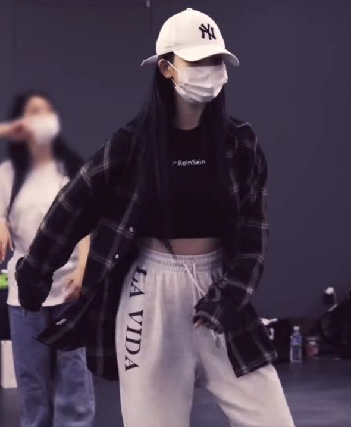
rinsoos: since this is the priv id say im allowed to spoil. act like an angel dress like crazY~!!!
39saku: might as well post this on the main, eunchae already spoiled it anyway
ughnchae: @39saku ALL THE GOIRLS ARE GIRLING GIRLING
jenaissante: @39saku its okay yall it builds the excitement
zuhazana: @ughnchae ALL THE GIRLY GOIRLS
meowrin: looking forward to u guys comeback!!!!!
hanpham: @meowrin me too, we can't wait!
minjibear: @hanpham @meowrin me three
Chapter Twenty
The rehearsal room was dim now, the overhead lights switched off except for a few along the walls that cast a warm glow across the polished floor. Most of the members had already left, their laughter and chatter fading down the hallway, but Soorin lingered, stretching quietly near the mirror.
Yunjin stood by the water cooler, her gaze fixed on Soorin's reflection. The quiet hum of the building seemed amplified in the stillness, and the knot in Yunjin's chest tightened.
She couldn't let this moment pass.
Taking a deep breath, Yunjin walked over, her sneakers squeaking softly against the floor. Soorin glanced up, offering a faint smile.
"Thought you'd already left," Soorin murmured, straightening from her stretch.
Yunjin shrugged, leaning her shoulder against the mirrored wall. "Could say the same to you."
"Just needed a minute," Soorin replied, her voice soft as she gazed at her reflection.
Yunjin studied her, the way her shoulders sagged slightly, the faint crease in her brow. "You've been quiet today."
"Have I?" Soorin asked, her tone more reflective than defensive.
Yunjin tilted her head, her lips curving into a faint smile. "Yeah. You're always thinking about everyone else—making sure everyone's okay. But when's the last time someone did that for you?"
Soorin's breath hitched, her eyes meeting Yunjin's in the mirror. The words hung between them, heavy with meaning, and Soorin felt a flicker of something she couldn't quite place.
"I don't..." Soorin began, but her voice faltered.
Yunjin turned to face her fully, stepping closer but still keeping a respectful distance. "I mean it. You don't have to carry everything alone. You deserve someone who cares about you for a change."
Soorin's chest tightened, her throat suddenly dry. She could feel the weight of Yunjin's gaze, the vulnerability in her words, and it made her heart ache.
"Yunjin..." she started, her voice barely above a whisper.
Yunjin smiled faintly, her tone softening. "It's okay. You don't have to say anything. Just... remember that you've got me, okay? No matter what."
Soorin nodded, her emotions swirling in a way she couldn't fully understand.
Elsewhere in the building, Minji sat in a quiet corner of the New Jeans practice room, her phone resting on her lap. The faint sound of music from a neighboring studio filtered through the walls, but her focus was on the text she'd drafted to Soorin.
minjibear: Didn't see you leave rehearsal. Everything okay?
Her finger hovered over the send button, her chest tightening as a wave of doubt crept in. Was it too much? Too obvious?
Hanni's voice broke through her thoughts. "Minji, you good?"
Minji looked up to find Hanni standing in the doorway, her brow raised in concern.
"Yeah," Minji replied quickly, locking her phone and slipping it into her pocket. "Just tired."
Hanni didn't look convinced, but she walked over and plopped down beside Minji on the bench. "You've been in your head a lot lately. Wanna talk about it?"
Minji hesitated, her gaze fixed on the floor. "It's nothing. Just... stuff."
"Stuff?" Hanni repeated, her tone teasing but not unkind. "Is this 'stuff' named Soorin, by any chance?"
Minji stiffened, her eyes snapping to Hanni's. "What are you talking about?"
Hanni grinned, leaning back against the wall. "Oh, come on. You've been acting weird since that stage with her. You can't fool me."
Minji's cheeks flushed, and she crossed her arms defensively. "You're imagining things."
"Am I?" Hanni asked, her grin softening into something more knowing. "It's okay, you know. If you're figuring things out."
Minji exhaled, her shoulders sagging slightly. "It's not that simple."
"It never is," Hanni agreed, her voice gentle. "But you're allowed to feel what you feel, Minji. No one's gonna judge you for it."
Minji's chest tightened at the reassurance, but the fear lingering in the back of her mind kept her from fully believing it.
"Thanks," she muttered, offering a faint smile.
Hanni patted her knee before standing. "Anytime. Now, come on. The others are waiting."
As Hanni left, Minji pulled out her phone again, staring at the unsent message to Soorin. Her thumb hovered for a moment longer before she finally pressed send.